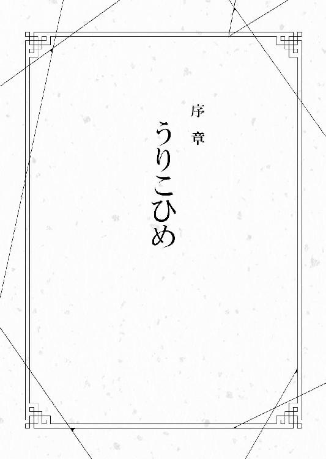
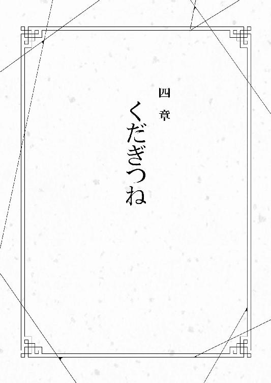

| 繰り巫女あやかし夜噺～お憑かれさんです、ごくろうさま～ (マイナビ出版ファン文庫) | |
| 日向夏 | |
| 株式会社マイナビ出版 (2016) | |
本作品を電子化するにあたり、一部の漢字及び記号等が簡略化されて表現されている場合があります。
本書はリフロー形式で制作されています。本文は文字の書体と大きさを変えることが出来ますので、お好みの設定で読書をお楽しみください。

――ひゅうぅ、ひゅうぅ。
部屋の隙間から風が入ってくる。灯が揺れ、影がぐにゃりと蠢く。それ自体が生きているようなのに、本体の腕は細く枯れ枝のようで生気がない。眠る床は煎餅のような布団。機織り機、糸車、天井からはぶら下がった生糸、仕事道具に囲まれている。
昼か夜かもわからなくなる。ただ、ひたすら糸と向き合い、それを紡ぐ、それが与えられた仕事。最初はいろいろ思うことがあった。でも、時とともに、それが無駄だと知った。
食事を得るために、ただ織ることが仕事になった。
――とんとんからん、とんからん。
耳から離れない音。揺らめく炎。
ぼんやりと眠たいのに、眠りたくない頭。
『............』
そんな頭に何かが響く。
『ねえ、入れてくれない？』
優しい声、猫なで声が頭に響く。
駄目だ、怒られる。入れちゃいけないとおばあさまに言われている。
『大丈夫だよ』
横になった布団から、そっと入口を見る。古い扉は頑丈でいくら叩いても壊れやしない。まず開けることから、無理なのだ。
入れることも出来ない、ここはただの牢獄だ。
『出してあげる、そこから』
そんなこと出来るのか。
『出来るよ、簡単さ』
だるい身体の中から、何かが抜けていく気がした。冷たい空気がさらに身体を冷やした。
『ねえ、入れてくれない？』
ゆるりと何かに包まれる。しゅるしゅると糸が絡まっていく。声が出せぬ、身動きが出来ぬ、ただ毎日織ってきた絹のように、そのもとの繭のように包まれていく。
『いや、違うわ』
声は訂正する。ゆっくり後ろから手が回る。長い指、冷たい指が頬を撫でる。愛おしそうに、撫でては包み、絡めていく。
『受け入れてくれない？ だって、私は最初から――あなたの中にいたのだから』
赤い唇が見えた。それが目の前に来て、ゆっくり弧を描く。その顔は妖艶で、吸い込まれるようで、けれど、見慣れた顔をしていた。
――見慣れた己の顔がそこにあった。
『眠りなさい。悪い物は全部、私が引き受けてあげる』
おやすみなさい、と長い指が撫で、そして、抗えない睡魔が襲ってきた。
逆らうことは出来ず、目を閉じる。眠るまでの間、長い指がひたすら頬を撫でていた。赤子を寝かしつけるような、優しい手つきで。
『私が代わってあげる』
それが、最後に聞こえた言葉だった。
――とんとんからん、とんからん。
手に持った杼を経糸の間に滑らせる。緯糸を巻き付けたそれは、飴色の光沢を放つ程度に使い慣れている。細い竹串が連なったような筬で緯糸を整える。カタンとペダルを踏んで、経糸を上下させる。
――とんとんからん、とんからん。
単純作業の繰り返しで出来る布は、絹特有の涼やかな手触りをしている。生成りのそれは、自然な白さを出していた。
現在午前六時、こんな時間に何をしているかといえば、機を織っている。現在、伝統工芸として知られる織物でさえ機械化が進んでいる中、原材料からすべて手作りでやっているのは時代錯誤と言われても仕方ない。だが、それを当たり前として育ったものにとっては、ごく普通の日課に過ぎないのだ。
そんな酔狂な手作り品の作り手こと、絹子は織れた部分に指を滑らせた。
「まあまあかな」
二時間前から織り続けて、出来た部分は十センチに満たない。それでも目の細かさを考えるとかなり早いほうだ。染色はされていないものの、織り方によって不可思議な紋様が浮かび上がっている。
絹子は杼を置くと、椅子から立ち上がる。そのいでたちは奇妙なもので白い着物に白袴だ。絹子の里では、この格好で機を織ることになっている。古くからの習わしで、それが今も続いているのだ。巫女装束のようだが、あながち間違いではない。
機を織り続けていたので絹子の腹はぐぎゅうっと鳴った。絹子はお腹を押さえながら、衣装を着替えることにした。
機織り機があった小屋を出ると、目の前には境内が広がっている。本来、神楽殿があるところに、機織り小屋があるのがこの神社の特徴だ。さっきの袴を赤くすれば、神楽を舞う巫女の姿が容易に想像出来るはずだ
すとんとしたワンピースに身を包んだ絹子は、お腹の音に催促されるように社務所へと向かう。瓦屋根に白壁の古風な建物の前に立つと、香ばしい魚の匂いが漂ってきた。思わずごくんと唾を飲みこみ、玄関に駆けこむ。
「今日の朝食、何？」
靴を脱ぎ捨てるように上がっていくと、台所からねめつけるような視線が見えた。まだ大人になりきれていない、幼さが残る顔立ちで中学生くらいに見える。手には厚焼き卵がのった皿を持っている。さっきの美味しそうな匂いの魚もこの子が焼いている。
一見、男の子のように見えるが、そうではないことを絹子は知っていた。
「靴、揃えろ。飯はそれからだ」
「わかりました！ クロくん！」
威圧感のある顔でそうにらまれると、従うしかない。この社で食事を作るのは彼女しかいないことを絹子はよく理解している。
絹子は彼女のことをクロと呼んでいる。『くん』付けするのは、彼女が『ちゃん』付けを嫌がるからに他ならない。呼び捨てという手もあるが、それは絹子の性に合わない。
絹子は靴を揃えると、お膳が並ぶ座敷へと向かう。床の間に背を向けるように一つ、あとは向かいあうように膳が八つ、余ったようにもう一つ並んでいる。
「ほれ、運べ運べ」
クロが絹子を頭で小突きながらおひたしがのった盆を差し出す。鰹節の良い匂いが食欲をそそる。言われるがまま手伝うと、「よし」と言わんばかりに、こんもりご飯が盛られた茶碗が渡された。
「今時、こんなどんぶり飯あるんだなってつくづく思う」
半眼で見るクロに、絹子は「へへっ」と笑いをこぼした。
座敷にいるのは絹子とクロだけで、他のお膳の前は食事はあるのに空いている。それを絹子は気にすることなく座布団に座る。クロも同様だ。朝食に全員揃わないのはいつものことだ。
というより、半分以上はお飾りに過ぎない。ここの神社には妙な風習がある、それがこの空いた席だ。
ただ、普段はもう一席だけ埋まっているのだが。
「シロくんは？」
クロと対を為すような名前のものはまだここに来ていない。
「二度寝中」
淡泊な答えをいただき、絹子はなるほどと手を合わせてご飯に臨んだ。
「それより、今日は大学で授業だろ？ ちゃんと準備出来てるのか？」
「大丈夫だよ。昨日、必要なものは全部揃えたから」
絹子もふんっと偉そうに胸を張って顔をあげる。それをクロは胡散臭そうに見る。
「それでどこか抜けているから言ってんだよ」
クロはそう言って、台所から大きな風呂敷包みを取り出した。
「これは......」
「弁当、忘れるなよ」
「お母さんみたい」
「誰がだ！」
そう言ってそっぽを向くクロの頭を思わず撫でまわす絹子に何か非があろうか、あるはずがない。「晩飯抜くぞ！」という脅し言葉を言われるまで、思い切り撫でまわした。
絹子は心地よい風を受けながら石段を下りる。絹子が住む神社は高台にあるため、見晴らしがいい。古都と呼ばれる昔の偉い人が造った街並みは、今も綺麗な碁盤目をしていた。景観を損なうからと高層ビルも電柱もないので、この神社からは街を一望出来る。ところどころ有名な神社仏閣が見え、その存在が古都という印象をさらに強くしている。今の季節は桜が散ってしまい、緑が色濃くなってきた。
絹子の向かう先の大学は、その碁盤目から少し離れたところにある。朱色の鳥居をくぐると、石段は終わって道路に出る。古びたバスの停留所が見える。
『玉繭神社前』
時刻表には一時間に二本しか通らない。不便な本数だが、絹子は最初、この時刻表に感動していた。
一日二本じゃない......。
しみじみそう思ったからだ。絹子が古都に来たのは九年前。最初はおのぼりさんだった絹子も、多少は垢抜けると思ったが、こういう感覚はいまだに残っている。
ベンチに座ってまもなくバスが来る。がらんとした車内に入ると料金センサーにパスケースを押し付け、二人掛けの椅子に座る。横に重箱が入った大きな鞄を置くと欠伸をした。
このバスの席が半分も埋まらないことを承知しての行動だ。
バスには『西都大学行』と書かれてある。終点なら運転手が起こしてくれる。そんな牧歌的な考えに甘えて、絹子はガラス窓に額を預けて目蓋を閉じた。
お勤めとはいえ、朝四時からの機織りはきつい。こくりこくりとバスの揺れとともに船を漕いだ。
西都大学。地名を冠した学校は多くあり、ここもまたその一つだった。古くからある私立大学で、さまざまな分野の教育を行っている。また、古都という立地のためか、文化教育に重きを置いている。
そんな大学で、絹子が向かう先は総合芸術棟だ。九時から一コマ目の授業が始まるということで、絹子の横を自転車がどんどん追い越していく。
あんな物よく乗れるなと、絹子は思い、忌まわしげに自転車を眺めた。今年で二十四。もう立派な大人だが、自転車に乗れないくらいで死にはしない。大体、あんな物に乗っていたら足が絡まりそうになると絹子は思う。だが、それを口にすると、皆が皆「はあ？」と馬鹿にしてくる。
自転車の話はもう止めにしよう。絹子はマイペースに古びた煉瓦造りの校舎へと入る。壁に蔦が這い、いかつい窓の形が時代を感じさせる。よく言えば歴史がある、悪く言えば古い。そんな校舎の中は雑多なものであふれていた。
油絵のオイルの臭い、石膏が砕け飛び散った粉、埃まみれの額縁。打ちっ放しのコンクリートの壁はいかにもこの場所にふさわしい。半分しか空間が空いていない廊下を通り抜けた先が絹子の目的地だ。
がらりと古びた扉を開けると、ぶら下がった大量の糸が暖簾のようにお出迎えしてくれた。ホワイトボードなんて洒落たものはなく、昔ながらの黒板のある教室には、絹子が今朝使っていた物と同じ大型の織機が一つと、その後ろの机に縦横五十センチくらいの織機が十ほど並んでいる。
大型の織機の前に、一人、男性が立っていた。五十代半ばくらい、ダブルのスーツを着た中年だ。細みの身体はタイトなスーツがよく似合っており、年齢の割にスタイルがいい。
「おはようございます」
絹子は、挨拶だけは先にと、男性がこちらを振り向く前に言った。
「おはよう、玉房さん」
絹子を名字で呼ぶのは、ここの教室の責任者で佐納教授だ。芸術棟にいるが、本業は民俗学者であり、この大学で教鞭を執っている。
「元気がないね。ここに私しかいないことが残念かい？」
「いえ、そんなことは」
正直言えば残念だ。ここには卓上織機の数だけ学生がいるのに、まだ一人も来ていない。少ししゅんとなってしまったことを見透かされたようだ。
「気にすることはないよ。まだ始業十分前だ。月曜の一コマ目の時間に割り当てた総務を恨むといい」
冗談めかして言うと、教授は教卓の横の椅子に座った。授業は今日で二回目、初日だけでなく今日も監督してくれるらしい。ありがたいことだが、それだけ絹子が頼りないのかもしれない。
この大学では、二回生までに取らなくてはいけない必修科目が決まっている。その中の『芸術』の選択にこの授業が含まれる。この地方の大学では一年生、二年生ではなく、一回生、二回生と言うのだと絹子は先週初めて知った。
本来、大学で講師をするには博士の学位が必要だ。でも、絹子はそれどころか大学にも通った経験もない。一応、非常勤講師という扱いだが、年齢もちょっと若すぎる。
それなのに、絹子は今年からこの大学で学生に教えることになったのは、大学から機織りの実技を教えてほしいと依頼があったのだ。正直、戸惑いもあったが、いい経験になると後押しをされる形で今、ここにいる。
教授と二人きりで微妙に気まずい時間が流れるのかと思いきや、がらっと教室の戸が開いた。
「うわー、早く着きすぎた。あっ、教授にセンセ、おはようございまーす」
とってつけたように挨拶をしたのは、茶髪に巻き髪の女学生だ。シンプルなシャツにショートパンツ姿だが、小物使いが上手いのか妙にお洒落に見える。名前は、崎守あやね。絹子が一回目の授業で名前を憶えてしまう程度に騒がしい学生である。
「おはようございます」
絹子は垢抜けた崎守に丁寧に挨拶を返す。教授も短く「おはよう」と返し、鞄から専門書を取り出すと、それを読み始めた。
崎守はそれを横目で見て通り過ぎ、絹子のほうへと近づいてくる。織機の前に座った絹子は、経糸を綜絖に通していた。
「センセ、いつになったらこれトントンって鶴の恩返しみたいにやれるの？」
崎守は織機に寄りかかって言った。崎守は二回生だ。本来、一回生ばかりが選択するこの授業を受ける理由があるとすれば、去年、芸術科目で単位が取れなかったことを示す。そういう学生は大体、簡単に単位が取れそうな授業へと流れ込むから気を付けろ、と何人かの教員に言われた。もちろん、絹子がまだ若くて馬鹿にされやすいことを気にしてのことだろうし、同時にその教員たちもまた絹子を甘く見ていることがわかる。
絹子はどちらかといえばおっとりした性格なので、そう思われても仕方ない。でも、絹子にだって、特別に講師として呼ばれた理由くらいある。
「経糸を用意して順番に、糸を通すことからしないと織れないよ」
学生が使う織機は、卓上機、つまり机の上に置いて出来る織機だ。なので、綜絖が二枚しかない。残念だ。綜絖は多いほど、複雑な織物が織れる。四枚綜絖の機械も候補にあったが、予算の関係上、それは駄目になった。それでもこの卓上機一台で、数万円はするらしく、ぼったくった教材だなあと絹子は思う。
単純な織りしか出来ないが、そこのところは緯糸の色で遊ばせるしかない。
「そういうの、前もってやってくれないかな？ だったら、楽しいよ、絶対」
崎守の言葉に、絹子は首を傾げる。
崎守は、ちらちらと教授のほうを見て、絹子にだけ聞こえる声で話しているのだ。つまり、楽して単位を取らせろということだろうか。
まず糸が紡いであり、なおかつ染色まで終わっているのに、ここで経糸の準備さえ怠ったらもうほとんど終わりみたいなものだ。
用意した糸の太さを考えると、そこから始めると前期の授業が余ってしまうだろう。総務課からは、授業は皆勤させるようにと言われているので、残った時間が出ると絹子が困る。
「座学とかやりたくない」
思わず本音が出る。
「座学？」
「ノートとりたいの？ テストやりたい？」
絹子は黒板に文字を書いて教えることなんてしたことがない。実技を教えるのならまだいいが、その授業を考えるとなったら普段使わない部分の脳みそを使わないといけない。それはとても疲れる。
佐納教授は、その時は任せろと胸を叩いていたが、全部任せることも出来ない。ただ、テスト問題は作ってくれるという。総務課も何か学生が言うようなら、佐納教授のテストの話をしろと言っていた。
「その時は教授が、テスト作ってくれるらしいんだけど」
「佐納テスト？」
「うん」
思わずそんな口調になってしまうのは、まだ講師職に慣れない以前の問題だ。田舎にいた時は、人間より家畜に遭遇する確率のほうが高かったため、あまりべらべら話すのは得意ではない。
「うわぁぁぁ、ないわ。ないない、佐納テストはない！」
崎守が頭を抱えているのを見て、前に教授の授業を受けていたのかな、と絹子は思った。佐納教授はあんなにこやかな笑顔なのに、どんなサディスティックなテスト問題を作るのだろうかと考えながら、経糸を揃えていく。
「そろそろ授業始まるけど、手順省く？」
「いえ、けっこうです」
きっぱり崎守は言い切ると、橙色の糸が吊るしてある机についた。教室には「おはようございます」と、他の学生たちも入ってきた。
「ねえ、どういう経緯でこの仕事受けたの？」
授業のあとも教室に残り、絹子のそばにいるのは崎守だった。佐納教授や他の学生はさっさと出ていってしまった。
絹子にとって今まで接点のないタイプの人間であり、そんな彼女にニヤニヤ笑われながらこう問いかけられると正直あまり気分がよくない。
「どういう意味？」
「だって、センセ年齢いくつ？ 佐納教授がついてるからってさあ」
言いたいことはなんとなくわかった。絹子は眉間にしわを寄せる。唇をちょっととがらせながら、鞄の中を漁る。中から先日織りあげたばかりの反物が出てくる。
「はい、汚さないで」
「なにこれ？」
「縮緬って織り方の布。これから染色に出す予定だけど、それ、着物にすると五百万はくだらないんだよ」
「ごっ!?」
値段に驚いて落とさないうちに絹子は反物を返してもらう。手間を考えれば安いほうだが、正確に目の整った安価な機械織のほうを普通の人なら好む。なのに、この金額を払うという人間がいる、それだけの価値が絹子の織った布にはあるのだ。
絹子は自分がまだ若いことはわかっているし、講師なんてどういう形でも分不相応だと思っている。でも、だからといって教えている内容をただのままごと扱いされたら、少しカチンとくる。
「自分で言うのもなんだけど、これだけ織れる職人はそういないと思うよ」
少なくとも同年代で皆無だろう。絹子は機とともに育って、織り続けてきたのだ。その意地くらいはある。
「うちの織物は一応、無形文化財として登録されているけど、普通の人は西陣とかそういうのしかわからないよね」
名前で高いか安いか決める買い手も多い。その点では、絹子の織物もある意味買い叩かれているのかもしれない。田舎にいた時は、物価もよくわからず、ただ決められた値段で買われていた。上京してから少しずつ、自分の作品がどのように扱われているのかわかってきたくらいだ。
「ここ検索してみて」
絹子は名刺入れから小さなカードを取り出す。丸文字のかわいらしいフォントに『アンテナショップ玉繭』と安易な名前が刷ってある。住所は、玉繭神社。社務所のすぐ隣だ。場所が場所だけに閑古鳥が鳴いている。絹子がこうして講師として大学にいても問題ないくらい暇な店だ。
そのカードの端っこに四角いＱＲコードがついている。崎守は、慣れた手つきでスマートフォンを取り出し読み込む。
「『破魔の衣、あります』？」
出てきたホームページを見て、崎守は首を傾げた。
絹子は苦笑いを浮かべる。よくもまあこんな謳い文句をつけられるものだと見るたびに思う。
「それは無視して。過剰広告だから」
器用にスマートフォンをいじくる崎守の顔を覗きながら言った。サイトは通販も兼ねており、アンテナショップの売り上げはほとんどがこちらからだ。玉繭神社ゆかりの品も多く、一番人気は縁結びのお守りとしての玉繭である。
玉繭というととても高価に聞こえるが、本当のところはクズ繭のことだ。二匹の蚕が繭を作る際、同じ繭に入ることがある。他の繭に比べ大きくなるが、糸によれが出来るなどで、製品化に適した綺麗な糸は出来ない。
しかし、その成り立ちから、縁結びの神様とは相性がよい。
他に組み紐にしたストラップや髪ゴム、あと財布などがある。
「うわっ、高！ ぼったくりじゃない」
ストラップ一つで二千円以上する。たぶん、百円均一に行けば似たようなものが見つかるだろう。手触りやその背景にある仕事まで違いを見てくれる人間は限られる。でも、そこで安売りしないのが、職人の意地だろう。時代遅れもいいところだ。そのうち、この織物も消えてなくなるかもしれない。実際、絹子の他に織物が織れる若い世代は地元でも少ない。
今、なんとかやれているのは一部の金持ちが価値をわかってくれて、受注してくれるからだ。
「ねえ、玉繭神社ってあんまり聞かないんだけど」
古都にはたくさん神社仏閣があるが、玉繭神社は有名な稲荷や天満宮とは違う。
「こっちにあるのは分社だし、それも併せて二社だけだもん。知らなくて当然かな。稚日女命って、言ってもわかんないよね」
「縁結びの神様？ だったっけ？」
意外にも知っていたみたいだ。絹子は素直に感心する。
「それもある」
よく機織りと航海の神とされているが、山間にある絹子の地元では前者だけが残った。
「ねえ、破魔っていうことは、お祓いかなんかやってる？」
さっきまでは茶化すような口調だったのに、今は真剣に絹子を見ている。その瞳は震えており、何かに怯えているようだ。
何をやってほしいのか。
一瞬、教室が静まり返る。かたっかたっと重い時計の針の音だけが響いた。
「......どうかしたの？」
絹子のその言葉を待っていたようだった。その瞬間、崎守の表情が和らいだ気がした。
絹子は薄暗い廊下を抜ける。古びた造りの社務所は元々違う場所にあった古民家を移築したものらしい。居間や台所はともかく渡り廊下の床はその当時のもので、歩くとぎしぎしと不気味な音が鳴る。
渡り廊下の先の離れ、そこの戸をトントン叩く。
「ねえ、いるんでしょ。起きてる？」
絹子は返事が来ないことを確認して、がらっと開ける。昼間なのに薄暗い板張りの部屋は、独特の雰囲気を醸し出していた。三十畳はゆうにあり、その中心に畳が四畳半だけ敷かれ、それを御簾が囲っている。まるで平安時代にタイムスリップしたかのような雰囲気だ。
窓は締め切られており、光源は四畳半の中心に行燈一つのみ。ゆらめく炎は怪しさを一層際立たせる。
絹子は板張りの床を進み、御簾を上げた。奥には布団が一式敷かれ、その上で胡坐をかく男がいる。能面のような無表情な顔に、白い着流し、黒い髪は後ろで縛ってある。揺れる炎に照らされる顔は整っているが、雰囲気からして不気味としか言いようがない。
そんな彼が真剣なまなざしで見ているのは、少々不釣り合いなものだった。
「それ、新刊？」
「昨日届いた」
ぽんぽんと叩くのは通信販売会社のマークが入った段ボール箱だった。絹子は布団の上に正座すると、箱の中を漁る。
「おっ、これ読んでない」
絹子が手にしたのは、いわゆるマンガのコミックスだ。
「最新刊だからな」
にやりと笑う男は、実年齢よりもずっと幼く見える。三十路は超えていると聞いたが、下手すれば十は若く見える。時代錯誤な格好をしているが、スーツの一つでもまともに着こなせばモテるだろうな、と絹子は思う。もちろん、そんな格好をする機会はこの男にはないだろうが。
一日の大半をこの部屋で過ごし、まともに朝食を食べにも来ない。ほとんど引きこもった生活を送っている男だが、こんなのでも一応、肩書きがある。
絹子はわくわくしながら最新刊のページをめくろうとして、手が止まる。
「......って、違う！」
「何が違うんだ？」
胡乱な顔をする青年を絹子はにらむ。青年の着物は絹子が織ったものである。下に揃えの袴があるのだが、引きこもっている時は身に着けない。
「出たってさ」
「何が？」
男は、面倒くさそうに耳の裏を掻いている。
「何がって察してよ！ 大家！ おばけが出たんだってば！」
「おばけっていくつだよ、お前」
どこか馬鹿にしたような口調である。絹子は『大家』と言ったがこれは名前ではない。絹子は玉繭神社に下宿しているわけで、その下宿させている側が彼である。そうなればこんな時代遅れの格好も頷ける。
大家はマンガを置き、前髪を掻き上げた。ずいぶん呆れた表情をしている。
「おばけなんてそうそう出るもんでもない」
完全には否定しない、当人曰くどんな不可思議なものでも微粒子レベルで存在する可能性があるからだそうだ。
「それって、神職が言うもんじゃないけど」
絹子はむすっと、大家をにらむ。そんな元も子もない話を、氏子にでもされたら商売上がったりだ。授与所、つまり神社の売店でお分けしている縁結びのお守りだって大切な収入源だし、神社に信頼がないと、アンテナショップの売り上げも下がる。絹子は下宿人であると同時に、巫女として雇用されているのだ。
「大体、おばけってなんだ？ 写真撮って変なものでも写っていたのか？」
「......そんなんじゃないけど、大学の子が一人、うちでお祓いをしたいって言ってるの」
崎守のことだ。崎守はあのあと、絹子にお祓いが出来ないか頼んできたのだ。もちろん、絹子にそんな真似は出来ないので、こうして大家に頼みに来た。
大学では上手く話せないが、こうして慣れた大家の前だと絹子は饒舌になる。
「ふうん、じゃあ金額は特別価格で二割引きでいいぞ」
いきなり商売っ気を出した。しかし、やる気があるというより、断らせようとしているのではないか。
「受ける気あるの？」
「話くらいは、聞いてやる」
大家は現実主義者だ。おばけとか妖とか、そういう怪しげな物の話を鵜吞みにしない。そういう点ではある意味信用が出来る。幽霊やら祟りやらを突き付けて、金を巻き上げる真似はしないからだ。
崎守が絹子にそんな相談をした理由は、教職員だからだ。詐欺まがいのことをしたら、学生課に言いつけることが出来ると踏んだのだろう。
彼女は過去何度か、その手の霊感商法に引っかかっているらしい。もっと別の神社があるのに、わざわざ絹子に頼んだのは、その手のことを警戒していたためだが、それを話したら大家が鼻で笑う。
「そんな非常勤の伝手、信用出来るもんかね？」
絹子はそんな大家から少し気まずそうに目をそらす。崎守とて、そこまで愚かではない。
「......初回は無料でって相談されたんだけど」
「はあああ？」
大家は大変ガラの悪い声を出した。端正な顔が歪み、とても神職には思えなかった。
翌日、大学にいる時よりも少しだけ大人しい格好をした崎守が玉繭神社に来た。シフォンのワンピースの丈は長めで、髪の毛は普段より巻きが緩やかだ。化粧もそれに合わせて全体的に淡い色合いで、いつもの少しきつめの雰囲気から柔らかくフェミニンな印象になっている。
絹子は自分のごくありきたりなワンピース姿に少し苦笑いしてしまう。髪の毛も直毛をそのまま髪紐で束ねているだけだ。もう少しセンスがあればいいなと思うが、元々、洋服を着る習慣がなかったので仕方ないと諦める。これが知り合いではなかったら、巫女装束を着ていたところだったが、この女子学生の前でその姿を見せたら面白がって写真にでも撮られそうだとやめておいた。
「迷わずに来れた？」
ちょっと辺鄙なところにあるので、ちゃんとたどり着けるか絹子は心配していた。階段下まで迎えにいくつもりだったが、すでに境内までやってきていた。
「あっ、大丈夫。後輩が車持ってて、ナビで送ってもらったから」
にこっと笑う崎守だったが、どことなく緊張しているようだ。
「連れはあんまりこういうの興味ないらしくって、またあとで迎えに来るって。ほら、あいつだよ、センセの授業一緒に受けてる奴」
どの学生だろうと絹子は首を傾げる。二回生は崎守一人なので、それ以外の学生になるが......。
崎守はちらちらと境内を見る。赤い鳥居をくぐり、参道を歩く。石畳の両側には灯籠が順序良く並ぶ。狛犬ならぬ狛猫が並ぶのがこの神社の特徴で、絹を使うことから蚕を鼠から守るということだ。不思議そうに見る崎守にそう説明する。崎守はいつのまにか、真剣な表情に変わっていた。
「一瞬、斎さまを祀っているのかと思った」
斎さまとは、この古都特有の神様だ。ちょっと風変りな神様で、別名生き神様と呼ばれている。その神使が猫とのことで、崎守はそれを連想したらしい。古都出身ではないと聞いたが、その信仰はあるのだろうか。
「違う違う」
そう答えながらまず絹子は、手水舎に案内する。
柄杓を手に取り、崎守は眉間にしわを寄せる。
「ええっと、どうやるんだっけ？」
手水には手順がある。まず右手で柄杓を持ち、水をすくって左手を洗うことから始めるのだが、絹子は今更それを教える必要はないかなと思っていた。よその神社では怒られそうだが、あまりこの手のマナーは重視していない。元々、玉繭神社の本社では手水舎はなく湧き水をすくって使っていたので、この方法は当てはまらない。しかし、思った以上に崎守が真剣な顔なので、一般的な方法を簡単に教えることにする。
「左手から洗って、次に柄杓を持ち替えて右を洗う。洗ったらまた持ち替えて、左手に水を入れてそれで口をゆすぐ」
たどたどしい流れで禊を終えたのを確認すると、絹子は崎守を連れて拝殿に向かう。
「思ったより広いんだね」
崎守が言った。拝殿の赤塗りの柱に欄干、軒から文様が入った布が垂れ下がり、カーテンの代わりに御簾が外と境界を作っている。大きさとしては二十畳ほど、その中心は祭壇になっており供物や宝物、神楽に使う楽器が並んでいる。拝殿にはご神体はない、奥にある桑の木がご神木になっている。
古都では目立たないが、神社全体を見ると、この玉繭神社はかなり立派な部類に入るだろう。昔は広さだけあって大したことはなかったが、九年前に改築を行い、かなり立派になった。
祭壇の前、板張りの上に正座をして座っている人物がいる。大家だ。今日はちゃんと真っ白な狩衣を着て、紫の紋入り袴を穿いている。髪は烏帽子におさめている。普段、引きこもりのぐうたら男だが、こうしてみるとちゃんと見えないこともない。
能面のような顔のままゆっくり頭を下げる。崎守が慌てて「ねえ、どうしたらいいの？」と耳打ちしてくる。絹子は崎守の肩を軽く叩いた。
「別に相手は人間なんだから、普通に接したらいいと思うけど」
崎守は少し震えながらも頭を下げて、大家の前に座る。能面のような顔は口元だけを動かした。
「何か悩みがあるのですか？」
落ち着いた声で大家が言った。『お祓い』とは言わない、何か憑いているなんてことを大家は簡単に肯定しない。なので今回も『相談』という形で受けている。初回無料という件もある。
「悩みというか、その......」
ためらいながらぽつぽつと崎守は話し始めた。
「私、呪われているって言ったら、......信じてもらえるでしょうか？」
その眼は真剣で冷やかしには思えなかった。
大家は「どうぞ、続けてください」とだけ言った。
崎守あやねは幽霊を見たことがない。
しかし、幼いころから何かを引き寄せる体質だった。
幼稚園のころ、遠足に行った際、仲のいい友だちとかくれんぼをした。けれど、鬼はなかなか見つけてくれなかった。
しびれを切らしたあやねは、隠れていた木陰から出た。とうに自由時間は終わり、先生たちは帰らないあやねたちを探していた。
あやねが出てきたところで、もう一人、園児が足りないことがわかる。先生たちがここで待っていろ、と言う中であやねはいない園児に覚えがあった。
確か、あやねと途中まで一緒にいた女の子だ。隠れ場所を見つける時、別れたのだった。あやねは早く帰りたかったので、先生の言いつけを破り、先ほどまで隠れていた場所へと向かう。友だちはこのさらに奥に行った。草むらを掻きわけて声を上げる。
――がさがさがさ。
葉っぱが揺れる音がした。虫だろうか、それとも小動物だろうか。びくりとしながら、あやねは音がする方向に向かった。
ふわりと、彼女がつけていた白いマフラーが見えた。
見つけた、こんなところに隠れていたんだ、と近づいた時だった。
その身体は木の枝とともに、ゆらゆらと揺れていた。
森の中、そこは崖になっていた。二メートルほどの高低差は園児には十分な高さで、落ちた際、偶然、木の枝があった。その子の首のマフラーが枝に引っ掛かり、宙づりになっていた。
ぶらんと垂れ下がった足からは、失禁が滴っていた。
不幸な事故だった。
遊んでいた子どもに罪はない。先生の監督不行き届きということで後日、新聞にのった。
ただ、あやねはそれを皮切りに妙な勘が働くようになった。
何か嫌な予感がして、どうしても気になってその場所へ赴いてみると、大抵ろくなことがなかった。小学校時代はそのせいで自殺現場を二回も発見してしまった。呼び寄せる体質だと言われ、お祓いにも連れていかれた。
その際、いくつか変なものに当たった。自称霊媒師に詐欺まがいのことをされて、何度か馬鹿みたいな金額を請求された。
中学校に入る前に連れていかれた親戚の元山伏は本物だったらしく、それまで変なことが起きていたのにぱたりと止んだ。最初からそこに頼めばよかったと、安心した顔で両親はため息をついていた。
あやねは毎年、その人にお札を貰うようにした。タイミングもよかった。中学は私立に進学し、あやねが呼び寄せるという噂を知る学生もおらず、性格も前向きになっていった。
そのままずっと続けばよかったのだが、毎年、お札を貰っていた親戚が亡くなり、今、手元にあるのは一昨年貰った物だった。
正直、不安で仕方なく、進学先に古都の大学を選んだ。こちらは寺社仏閣が多く、何かしらご利益があると思ったのだ。斎さまという土着信仰があったのも大きい。その期待どおり、昨年一年間は滞りなく平穏に暮らせたのだが......。
平和な一年間はただ、あやねが知らないだけだった。
春休みに地元に帰った時、久しぶりに会う友人に言われた。高校時代の同級生が死んだということ。あやねとも親交があり、連絡先も交換している相手だった。それが友人づてに死を聞かされたこともショックであり、どうして亡くなったのか、それを聞いてなおさら衝撃を受けた。
行方不明になったのは昨年の秋頃。それから、ずっと捜索願が出されていて、最近、彼女と思しき遺体が見つかり、歯型が一致したという。容姿の特徴でも指紋でもなく、歯型というのはそれだけ遺体の状態が悪かったということだ。
友人は干された姿で、廃屋で発見されたのだった。干からびた身体には無数の傷があった。
あやねはその話を聞いた時、級友のことを悲しむと同時に、まただ、と思った。昔と同じようにまた変なものを呼び寄せていると。
その欝々とした感情は、古都に戻ってからも続いた。
いつか、自分のほうが呪い殺されてしまうのではないか、そんな不安でいっぱいになった。
そんな時だった。
「神隠しにあったと？」
大家は疑問符を浮かべて言った。その表情は能面のままなので一見するとわからないが、もしここにマンガのように吹き出しがあれば『うっさんくせえ』と心の声を漏らしていただろう。
「はい。信じてもらえるかわからないけど」
「呪いかどうかはともかく、そういう事件があったということは調べればわかります。事実としてそれがあれば、不安になるのも当たり前です」
この言葉を、通販生活を堪能し、一日中だらだらしている半ニートが言うのだから大したものだ。あくまで鵜吞みにしないのが大家らしいところでもある。
表向きは真摯な態度の神職に対して、崎守はだいぶ慣れてきたらしくようやく本題を切り出した。
「先日、一週間くらい前なんですけど。私、神隠しにあったみたいなんです」
崎守はもう一度そう言った。
神隠しかあ、と絹子はちらりと大家を見る。大家の表情は変わらない。
「それは、どんなものだったのでしょうか？」
「はい」
そして、また口を開いた。
崎守は先日、体育会系サークルの飲み会に行った。入っているのはフットサルサークルで人数は全員で二十名ほどのゆるいものだが、そういう横のつながりも大切なのだという。
体育会系合同の新入生歓迎会とあって、人数はけっこうなものだったらしい。一次会は、近くの温泉街の旅館を借りてやった。二次会もその半数ほどが参加し、三次会以降は十人単位でばらばらになってそれぞれ店に散った。
崎守の見た目はとても軽い感じで、そういう飲み会には普段からしっかり参加しているように見える。こうして、呪いだの神隠しだのと相談を受けなければ、軽い今時の女子大生としかとらえなかっただろう。
そして、崎守もまた、周りから軽く見られていることはわかっていた。周りのノリを崩さない程度に、役割を果たそうとしていた。
「三次会のグループを間違えたかなって思ったんです。同じサークルの女の子と一緒だったんですけど、それ以外は違う体育会系の人たちで、ええっと正直、あんまり雰囲気はよくない連中でした」
崎守と一緒にいた友人もどちらかと言えば派手な格好をしていて、ノリがいいと思われたらしい。そこで断ればよかったのだが、すでにアルコールがだいぶ入っていた。彼女自身、もう二回生だし、そういうことにも慣れたつもりでいたらしい。
絹子は、崎守の話を聞きながら、「浪人しているか、四月生まれだといいけど」というけっこう身勝手なことを考えていた。非常勤とはいえ、講師としては未成年の教え子の飲酒について聞きたくなかったのだ。
連れてこられたのは、古都の温泉街の外れにあるバーだった。ビルの二階にあるそこは十人も入れない小さな店で、入るなりカクテルをすすめられた。このタイミングで出されるカクテルは酔わせる手段だと知っていたし、他にも一回生の女子が一人、そのグループの中にいた。場に流されて連れてこられたようで、崎守も酔った頭の中で、その子の心配をした。ここで前後不覚にならないようにと、崎守はつまみばかり食べた。
途中、親切な先輩が水を用意してくれた。酔いをさますためにいただいた。
だが、水を飲んだところで、やはり酔いがだいぶ回っていたらしく、崎守は倒れる前にとバーを出ることにした。友人は比較的元気だったが、一回生の女子はふらついていた。このまま置いていったら、お持ち帰りされてしまうかもしれない。
バーの主人にタクシーの番号が入ったメモを貰う。
水を差しだしてくれた先輩がそこで助言してくれた。タクシー乗り場は近くにあり、店を左に曲がりすぐ最初の路地を左に曲がる、そこを突き抜けたら大通りだといわれた。タクシー乗り場の案内看板が置いてあるからそこを曲がればいい、すぐわかると。この店の前にも止まってくれるが、通りから外れてタクシーが遠回りをするので高くなるとアドバイスをくれた。
そうなると、一人暮らしの貧乏学生はその数百円を節約するために歩くほうを選ぶ。それが間違いと気付かずに。
友人はふらふらの後輩を連れてトイレに行った。あまりにべろんべろんで一度吐かせてくると言い、崎守に先にタクシーを停めておいてと頼んだ。崎守は頷いて、自分もトイレで一度吐いて来ればよかったと後悔したが、待ち時間を短縮するために、先にタクシーに電話をかけていたから仕方ない。
バーの階段を転がり落ちないようにゆっくり下りる。
下りてすぐ先輩に言われたように案内看板を見つける。狭い路地のようだ。突き抜けるだけだが、それでもなんだか薄暗い。でも周りに人通りがなかったのがちょうどよかった。タクシーで吐いたら、いくら弁償にとられるかわからないので、喉に手を突っ込み無理やり吐いた。電柱に寄りかかる。完全なおっさんだ。少しだけすっきりして、そのまま路地へと入っていく。
街灯のない、真っ暗な道が続く。両側には小さな店がいくつかあった。どれもシャッターや雨戸が閉められており、いかにも寂れた雰囲気だった。まるで、何十年も前の世界にタイムスリップしたかのような煤けた空気だ。真っ暗で何も見えない。あるとしてもバチバチと漏電したような音が聞こえるだけ。しかたなくスマートフォンを取り出す。
不気味で早く通り抜けようとした。しかし、先輩が言うように道はまっすぐではなかった。先はＴ字になっており、崎守はどうすればいいのかわからなくなった。とりあえず右に進もうかと思っていたら、背後からガシャンという大きな音が聞こえた。
びっくりして店舗の壁に寄りかかった。すると、足元に何か落ちている。それにスマートフォンの光を当てる。女物のミュールが一足だけ落ちていた。なぜ落としたのか、持ち主はどこに行ったのか、それが頭によぎって全身に鳥肌が立った。
後ろからカツカツと足音が聞こえてきた。だんだん近づいてきて崎守は走り出す。でも、足がもつれて転んでしまう。
誰かにさらわれてしまう。
商店の隙間に入り、息をひそめ、崎守はスマートフォンのライトを切った。
足音が響く。複数の音がするが、数はよくわからない。ただ、なんだかものすごく嫌な予感がした。まるで取って食われそうな感覚だ。異界に迷い込み、そこで鬼にでも追い回されているような。
あのミュールの持ち主は、すでにさらわれてしまったのかもしれない。
呼吸をひそめて、足音が遠くなったところで、崎守は元の道に戻ることにした。
タクシーは諦めよう。また新しく呼べばいい。早く、この場所から出たかった。
同じ道を戻ったつもりだった。しかし、元いた場所には出られない。出口が見えない。道を間違えたのだろうか。暗くて見えない。何もわからないままぐるぐる回る。また足音が聞こえてくる。
そんな時だった。
ちりん、と鈴の音が聞こえた。
目をこらすと、白い猫が崎守の前にいた。猫は長いしっぽを優雅に振りながら、ゆっくりと歩いていく。時折、こちらを向いて立ち止まる。まるでついて来いと言わんばかりだった。
溺れる者は藁をもつかむ。崎守は白猫についていった。
遠くから聞こえる足音、それを避けるように白猫は歩いていく。古びた商店と商店の間に入り込んだ。狭い間に身体をくぐらせ、崎守もまたそのあとを追う。
そして――。
視界が急に明るくなった。
街灯と車のライトが見えた。
瞬きしながら左右を見渡すと、見たことのある人影が見えた。
崎守は慌てて、その方向へと向かうと、怒った友人がいまだ後輩を介抱していた。道の脇には、タクシーが待っていた。
崎守はゆっくりと息を吐いて、絹子たちを見る。
「友人は、そのとき先輩に言われたとおりの道を通ってきたというんです」
ごく普通の道で、暗くもなかったし不気味な店も並んでいなかったと。
つまり同じ道のはずが、崎守だけは別の場所を知らずに通っていたと。
崎守は、落ち着いた声で話し終わると、ゆるく巻いた髪を揺らした。普段のちょっとお調子者っぽい彼女は作り物なのだろうか、と絹子は思った。この本来の臆病な性格を隠すために、わざと気丈なふるまいをしているのかもしれない。
「白猫がいなかったら私、あの場所から出られなかったかもしれません」
白猫と聞いて、能面のような面が歪んだ。狛犬ならぬ狛猫がいる神社の神職なのに、この男はあまり猫が好きではない。
「もしかして、斎さまの御使い、......でなかったらここの猫だったのかも」
大家の営業顔が崩れている。
「そんなつもりねーよ、アレは」
ぼそりと、崎守に聞こえない声で大家が言った。
絹子は崎守に見えないように、こっそり大家の足を叩いた。大家は商売向けの顔に戻す。そして、右手で己の顎を撫でた。
「つまり、変な妖にかどわかされそうになったと」
「......ええ」
崎守の答えに、大家は立ち上がると、棚の上から半紙の束を持ってきた。職人によってすかれた和紙で、けっこうな高級品だ。が、墨と筆を出すのが面倒なのか、持っているのがただの筆ペンなのが少し惜しい。筆ペンなら紙ももっと安物でいいじゃないかと思うが、そこは嫌だという。妙なこだわりのある男だ。
大家は筆ペンを紙の上に滑らせた。鳥獣戯画のようなタッチで奇妙な生き物の絵を描く。かまぼこを犬の形にしたような生き物だ。
「ぬりかべという妖怪を知っていますか？」
「聞いたことありますけど」
妖怪の名前だ。アニメ作品に出たものが一番有名だろうか。
「夜道に目の前に壁が出来て前に進めなくなるという妖怪です。いろいろな地方によく似た伝承があります」
野襖、塗坊など。
その逸話を聞いてみると、崎守が体験した話と類似点がある。
「狸や鼬の仕業という話もあります」
さらさらと器用に狸と鼬の絵を描き加える。なんだか絵が上手い。妙に絹子は腹が立った。
「えっと、じゃあ。もしかして、あの白い猫が？」
狸のように化かしたのかと。問う崎守に、
「いえ、それはまったく別物です」
大家が断定して言った。ここまではっきり言うと逆に変な気分だ。まるで見て知っているかのような口ぶりだ。
「元々、その手の怪異の原因は夜盲症や脚気だという説もありますし、そのほうがまだ頷けるでしょうね」
崎守は唇をきゅっと噛んで、大家を見る。
「じゃあ、私があったのは、別に神隠しでもなんでもなくて、ただの勘違いだって言うの？」
どこか非難するような口調だった。それに対し、大家はまた棚を何やらごそごそ探している。探し物がないのか、首を傾げていると社務所に続く廊下から声が聞こえてきた。
「これ、探しているのかー」
声の主は、中性的な男の子だった。小豆色の作務衣を着て、ふわふわのくせ毛は老人のように真っ白だ。クロと同じく中学生くらいに見えるが雰囲気はまったく違い、柔和な笑みを浮かべている。黒い髪の女の子がクロなら、白い髪の男の子はシロ。単純明快な名前だ。
彼もまたクロと一緒に、この社務所に住むもので、しっかりもののクロによく怒られている。最初、兄弟かなとも思ったが、血縁はないらしい。
シロはぱしぱしと床に置いてあるタブレットパソコンを叩いた。大家が一瞬、接客中であることも忘れて顔をしかめる。
「また、お前か」
大家がシロを見て言った。
「いいだろ。ちょっと借りただけじゃない。大体、供物を置く棚にそんなもの置いてるのおかしくない？ ちゃんと充電しておいたから」
大家は妙なところで現代人なのだ。ネットショッピングが趣味の、引きこもりの神職なんて、ばれたら営業に差し支えがあるにも程がある。
大家は崎守を気にしてか、シロを無視してタブレットを拾う。崎守は気にするどころか、シロに手を振っている。シロは愛想よく振り返していた。コミュ力が高いなあと、絹子は感心する。
大家は慣れた手つきでタブレットを動かすと、それを崎守の前に置いた。絹子はそっとのぞき込む。地図が表示されていた。
「その飲んだというバーはどのあたりですか？」
「......たぶん、西のほうだと思うんだけど」
「バーの名前は？」
「覚えてなくて。確か四階建て雑居ビルの二階だったと思う」
曖昧なのは酒が入っていたのと、途中車に乗せられて移動したためだ。
大家は指先で素早く地図を拡大して前後左右にスクロールする。何か見つけたらしく、画面を止めた。
「雑居ビル、比較的近くにタクシー乗り場がある、古都の西側というとここでしょうか？」
そこには『バー オプンティア』と書いてあった。大家はタブレットの画面上にマーカーで丸をつける。
「この路地をまっすぐ行けばタクシー乗り場にすぐ着く」
指先で道筋を描いていく。
「だが、あなたはこの道ではなく全然違う道を通ったといった。しかし、地図上にはそんな道はない」
改めて聞かれて、崎守は面倒くさそうに頷く。何度も言っているではないかと言わんばかりだ。それを無視し、大家は話を続ける。
「時系列順に並べると、あなたは飲み会の三次会に、誰かの車でバーに連れていかれた。その時すでに酒が入っていたが、そこではそれ以上飲む気もなかったので水だけ飲んだ。でも、タクシー乗り場に行く際には、ひどく酔いが回ってきて一度吐いた。そして、言われたとおりの道筋でタクシー乗り場に向かったと」
「ええ」
少し苛立ち気味に言った崎守。
「昏睡強盗ってご存知ですか？」
「えっ？」
大家の言葉に崎守は間抜けな声を上げた。
「今回の目的は強盗ではないと思いますが、そういうものがあることは知っていますか？ 酒に睡眠薬を混ぜる、それだけで人は少量でもひどく酔いますし、時に幻覚剤のような働きもします。他に目薬や調味料を混ぜるということもありますけどね」
「お酒はあの場では」
「水に溶かし込んでいたなら、腹の中で混ざるでしょうね」
「あっ!?」
親切そうな先輩に渡された水。途中、気分が悪くなったのもそれを考えたら、納得出来る。
しかし、そのあとの路地はどうだろうか。それも、睡眠薬による幻覚とでも言うのか。
「最初の路地まで店からどのくらい歩きましたか？」
「......たぶん、五十メートルも歩いてないと思うけど」
その言葉を聞いて、大家は地図の縮尺を見せる。ラインを引き、距離数を測る。それを見て、崎守が首を傾げる。
「けっこう離れてる？」
ざっと二百メートルは距離がある。酔っていたとはいえ、そんなに距離を間違えるものだろうか。
「ええ、あなたが通った道は本来この場所にはないんですよ」
「どういうこと？」
崎守は目をぱちぱちさせる。絹子はじっとタブレット端末を見る。路地との間に奇妙な空間がある。けっこうな広さだ。特に店の名前なども書かれておらず、灰色に塗りつぶされている。
大家は無言で画面を切り替える。するとなんだか古い地図が出てきた。伊達に引きこもっておらず、この手の手際は素早い。地図には灰色だった箇所が個別にいくつも分かれていた。
「ここ、昔はアーケードだったんです。今はシャッターが閉め切ってあり、店舗も大通り沿いの数軒しか開いてませんが」
「アーケード？」
「よくある話です。店舗は残っているのに、それを貸し出さずそのまま放置することは。この地域は古都の中でも、それほど地価が高くありません、裕福な方ならそれくらいの維持費を持っているということでしょうね」
テナントにするリスクを考えて貸し出さず、壊すのにも金がかかるならそのまま放置する。他に理由があるかもしれないが、大家は細かいことはわからないという。ただ、その元アーケード街が私有地であり、ゆえに間にある私道が地図に表記されていないと理由を説明する。
「しかし、そういう寂れた場所には、妙な輩が入り込むことはよくあります。だから、入り口に侵入者が入らないようにシャッターを付けたのかもしれない。もっともそれでも入り込む連中がいるから、余計に面倒なわけですけど」
年代の古いアーケード街なら、入り口もそれほど大きくない。街の出入り口にシャッターを取り付けたら、店舗が閉まっていると通り過ぎるだろう。
ここまで来ると、さすがの絹子にも話が読めてきた。
まず、三次会で『バー オプンティア』に連れてくる。崎守が酒を断る中、水だと称して睡眠薬を飲ませる。薬が効いたか効いていないころに、崎守を帰らせる。ここで、ターゲットになったのは一番狙いやすかったからだろうか。後輩はもう一人のガードが入っていたので、逆に狙えない。
タクシーを理由に、崎守が先に店を出る。崎守はふらふらしながら、用意された目印の看板がある最初の路地を曲がる。そこが普段、シャッターで閉め切られた場所であるとも知らずに。ここで幸運だったのは、多少迷惑だが、道端で無理やり吐いたことだろう。酒と睡眠薬、これで昏睡状態に陥ることだってある。
以前あった、薬で女子大生を昏倒させたというあれだ。そのあと行われることについては、不愉快な話になる。落ちていたミュールは、もしかしたら前の被害者の物かも知れない。
崎守はさっきとは違う意味で顔面を蒼白にさせている。能面面の大家もまた、目が据わっていた。
ターゲットを崎守のみに絞ったのは、泣き寝入りさせるためかもしれない。人数が多ければ、それだけ口外される恐れが増す。あとからタクシー乗り場に向かう二人については、「気分が悪そうだったので、先に車で送った」とでも伝えればいい。その点は、少し詰めが甘い気がするが、それで今まで成功してきたのかもしれない。
「性質が悪いですね。もう何度も繰り返しているんでしょう」
崎守がアーケードに入ったあと聞いた大きな音は、シャッターを閉める音。その後の足音の数を考えると複数犯だ。
手際の良さや、他の点からみると店側も共犯かもしれない。
崎守は両手で二の腕を抱き、口をパクパクさせる。
「幽霊や呪い、それを怖がる人はたくさんいます。見えないものは怖い、実体がないものは恐れを生む。でも、実際に一番、人に害を為すのは人なんです」
やや説教じみた台詞をつぶやき、大家はパタンとタブレット端末を閉じた。
そして。
「直接、害を与えるほど奴らは強くない」
聞こえるか聞こえないかの声で、大家は言った。
「あ、あの......そういう厄除けはこちらでは」
「今回は相談ですし、うちでは基本厄除けはやっておりません。ただ......」
そして、また棚から何かを取り出した。今度は綺麗に印刷されたパンフレットだった。本当に供物置き場を物置と勘違いしている。
「うちの巫女が清らかな玉繭で織った商品なら、取り扱っております」
『破魔の衣、あります』と書かれたアンテナショップのパンフレットだった。
「手触りがすごくいいんだね、これ」
崎守が購入したのは、薄紅色のストールと組み紐のストラップだった。手の上で滑らせてひんやりとした絹の手触りを堪能している。
玉繭で作った糸は、他の糸に比べて縒れたものが出来る。二匹の蚕がそれぞれの糸を吐き出して作るので、その分、綺麗に糸が取れないのだ。このストールは、その風合いを生かして、なおかつ涼し気にゆるく織ったものだ。比較的短時間で織れるので、他の作品に比べ値段も優しめに出来ている。
一応、採算もあるので知り合い価格でも一割引がせいぜいで、学生の懐を考えるとそれでもきつかったかもしれない。しかし、崎守の表情を見る限り満足しているようだ。
もし、これで市販のものと変わらないと言われ、義理だけで買ってくれたなら、あまり気持ちはよくなかった。でも、反応を見る限り、お世辞ではないと思いたい。
「ちゃんとしたお祓いとかじゃなくてごめんなさい」
絹子はアンテナショップの店先でそう言ったが、崎守は首を横に振る。
「全然。むしろ納得した。今までは、悪霊がついているとか、そういうのばかりで、変な高いお札とか買わされてたもん。これなら、普通に学校に持っていけるからずっと実用的だし」
そう言って、ストールを首に巻き、ストラップを携帯に付ける。じゃらじゃらとした携帯ストラップが全部取り外され、ちょっと渋い雰囲気に変わる。
大家は『うちの巫女』とか言っていたけれど、作ったのは絹子だ。彼女の話を聞くと、ストラップくらいタダであげてもいいかなと思ったが、そんな態度を示すと大家が甘いと言うので仕方ない。
外はもう夕方で、近所のおばさまが猫に餌をやりに来ていた。ブチ猫がおばさまにすり寄って、猫缶をねだっている。
実は玉繭神社は別名猫神社とも呼ばれている。そういうだけあって、ここには何匹か猫が住みついていた。いろんなところに糞をしないように、神社の隅に専用の猫トイレも置いている。足りないご飯は、美味しい食事を作ってくれるクロがやっているようだ。
崎守は猫が好きなのだろうか、優しい目でその様子を見ていた。
「ここ選んで正解だったかも。やっぱ白猫の導きだったのかな？」
「白猫ね」
偶然、白猫があの時やってきてくれなかったら、彼女は今どうなっていたかわからない。そう考えると猫様々だろう。
「ここにも白猫いるんだね。すごく賢そうな子」
もしかして、あの子かも、と崎守は猫たちを見ている。
「いたっけ？ 大体ブチ猫の気がするけど」
「えー、いたよー。ほら、中に入って来てたじゃない？」
そうだったかな、と思いつつ、まあいいかと流す。深く考えるのは絹子の性格ではない。
絹子は一応、仕事として猫砂の掃除と補充を行っているが、猫はあまり見ない。というより、猫たちがあまり近づいてこないからよく確認することもない。猫に好かれる者と好かれない者がいるなら、絹子は後者に当たる。
崎守の不安はまだ解消されていないが、それでも幽霊なんてものでなければ解決方法はある。学生課のほうに話をしたら、どうにかなるかもしれないと笑うだけの元気がでた。
崎守と鳥居のところで別れると、絹子は社務所へと向かった。
社務所では、もう、いつものだらりとした着流しに着替えた大家が玄関で電話をかけていた。電子機器を使いこなすわりに、固定電話は黒電話なのがおかしい。
「それでは頼む」
そう言って、チンッと大家は電話を切る。
「売るもん売りつけてきたか？」
「ストールとストラップを販売いたしました」
絹子は玄関で靴を揃えて上がる。今は夕飯の準備をしているクロは、礼儀正しくしないとご飯を食べさせてくれない。
「大家はどこに電話かけたの？ 珍しいね」
引きこもりのこの男はほとんど電話なんて使わない。使うとすれば、メールか通信アプリとかいうやつだ。絹子の携帯電話では通信アプリなんてものは使えないので、メール一択だ。
「ちょいとな。アフターサービスしてやろうかって思っただけだ」
そう言って暖簾をくぐり、居間へと向かう。上座にどっかと座り込むと、台所から声が聞こえてきた。
「おい、引きこもり！ 座ってないで、手伝え！」
乱暴な口調のクロがお盆にきびなごの天麩羅をのせてやってきた。からっと揚がっている。クロのことだからちゃんと下味もしっかりつけてあるはずだ、そのまま食べても美味しいだろう。早く食べたいので、大家に代わって絹子が盆を受け取る。
座布団は十枚ある。大家と絹子、クロを引くとあと七枚余る。大家がこちらで食べるのは珍しい。珍しく仕事をして、腹が減ったのだろうか。
「シロくんは？」
さっきは顔を出していたのだが、今、この場にはいない。
「知らねえ。つまみ食いだけして、どっか行った」
クロは不機嫌そうにお櫃を持ってくる。
「あいつもアフターサービスに行ったよ。あいつは気に食わない相手がいたら潰すからな」
大家は面倒くさそうにそれだけ言うと、味噌汁が来る前にご飯をよそって食べ始めた。よくわからないけれど、シロは誰かと喧嘩でもしているのだろうか。喧嘩っ早くは見えないのに。
「ああ見えて、女の敵は許せないんだとよ」
「そうなんだ」
絹子はまったく理解出来ないまま、自分のお膳の前に座る。
「おい、勝手に食うな」
クロは大家をにらむと、空いた席の茶碗にもご飯をよそう。二回に分けて一口大によそわれたご飯は、誰か見えないものの糧になるらしい。
「なんか春になって一気に増えたね」
このお膳の数は変動する、冬に空席は一つだけだったのに。ご飯がもったいないと思うのは、信心深さが足りないだろうか。
「いろいろ迷っている奴がいるんだよ」
そう言って、食事を続ける大家。現実的なことと、不可思議なことをこの仏頂面の口は紡ぎだす。
大家は、おばけなんてほとんどいないと言う。だが、大家は、絶対いないとは言わない。
「ふーん」
絹子には関係ない話だ。いたとしても見えないし、見えないならないものと同じ。深く考えても仕方ない。
ただ、さくっとしたきびなごを口に頬張ることが、今一番、有意義なことだった。
後日、学生課の前の掲示板に複数の学生番号が貼り出された。除籍処分とのことだったが、これまた絹子には関係ない話だった。
そして、寂れた場所にあるバーが一軒潰れたことも、そこの近くのアーケード街が取り壊しになることもまた関係ないのである。
ただ、化け猫の祟りだという噂だけあとから聞いた。
幕間 その一
「今日で今期の講義は終わりです。単位については、出席日数および作品の出来によって決めます。今日までに作品が終わっていないかたは、この教室を使う際、学生課の許可を取るか、もしくは卓上織機を持ち帰って家で仕上げてください。織機を持ち帰る際はこちらにサインをお願いします、壊した場合、弁償してもらいますので気を付けてください」
絹子はカンニングペーパーに書かれてあることをそのまま口にした。学生たちのブーイングが聞こえる。が、そうしてもらわないと困る。少し面倒臭いかもしれないが、ちゃんとやれば、これは授業中に出来上がるものだ。実際、二回前の授業で終わらせている学生もいる。
「ほらほら、ちゃんとやる！」
ひと際ブーイングが煩い学生に、話しかける声がする。崎守だった。あっという間に上半期は終わった。季節はもう夏なので、ノースリーブにロングスカートを穿いている。肌の露出が多いのに、日に焼けていないのはしっかり紫外線対策をしているのだろう。
彼女は前回の授業で作品を完成させている。欠席もゼロで、絹子はこっそり「もう来なくても大丈夫だよ」と伝えていたが、ちゃんと出席してくれたのはちょっと嬉しかった。
崎守が絡んでいたのは一回生の男子学生だ。小柄でどこかやんちゃな栗鼠っぽい顔をしている。今時の若者の格好で、首にはネックレスのチェーンが見える。
「先輩、終わったからって、こっちの邪魔しないでくださいよ。そうやって僕の単位を落とす気でしょ！」
少々口が達者なのは、授業をしていて絹子もよく知っている。どうもおしゃべりが好きらしく、そのせいで手がお留守になりがちだ。まあ、最初の授業は何回かさぼっていたし、それでかなり出遅れたのも原因だ。
「人聞きが悪いなあ、私はそんなつもりなくってよ。中津屋、あんたが遅いのがいけないのさ」
崎守は手を横に広げて偉そうに言っている。初日の授業にスマートフォンをいじり、それが原因で、荷物は全部外のロッカーの中に入れることになったことなんてすっかり忘れているようだ。
絹子はかわいそうな後輩の作業がこれ以上遅れるのも申し訳ないと思い、崎守を呼んで糸車の使い方を教えることにした。崎守はそれほど器用ではないが、あの事件から少し織物について興味を持ってくれたらしい。不器用なりに丁寧に作品を作ってくれている。
一番問題児だった彼女が率先して真面目にやってくれたおかげか、授業もずいぶんはかどるようになった。佐納教授がたまにしか授業に来なくなったのもそのためだろう。
佐納教授は、今日は最終日だから同席しているが、教室の端でのんびり読書をしている。
「糸車かあ。そんなもんもあるんだね、センセ」
アンティークなそれは、絹子が神社から持ってきたものだ。昔話に出てくるような手回しの糸車で、床に直置きするものだ。使い込まれ渋い飴色に染まっている。さすがにバスで持ってくるわけにはいかないので、タクシーを使った。経費で落ちるとのことだ。
大家が車の免許を取ってくれればいいのだが、引きこもりだから無理だろう。
「うん。ちょっとさわりだけで簡単なものがいいから、これを使おうか」
絹子は、羊毛の束を二つ取り出した。すでに毛の方向を揃えたもので、繊維も長いので比較的やりやすいはずだ。一つを崎守に渡す。周りには作品を作り終えた学生が集まってきていた。
「これ、こうやって束から繊維を少し引き出して、手でねじっていくの。ペンか何かでくるくる巻きながらね」
「......ぅうっ」
手製品のいいところは、機械にない個性が出ることだが、崎守の糸は早くも個性が爆発しすぎていた。均一とは言いがたく、縒りも足りないので途中でちぎれるだろう。
「ゆっくりでいいよ。これはおまけみたいなものだから」
絹子は自分がやっていたウールを他の学生に渡す。その学生は最初に作品を仕上げた学生で、出来た物も上手だった。筋がいいようで素人なりにしっかりした糸を縒っていく。ある程度縒ったところで、絹子は紡錘という道具に巻き付ける。独楽に似た形だが、棒の部分がやたら長い。紡錘だけで糸を作る方法もあるが、若い子というのは何かしら見慣れない道具に感動するものだと講義を通じて絹子も勉強した。ただ、紡錘をくるくる回して糸を作るより、糸車を回したほうが目立つだろうと、このために苦労して持ってきたのだ。
紡錘を糸車に取り付ける。大きな車輪のようなはずみ車を回すことで紡錘を回転させ、それによって糸をねじりながら紡いでいく。簡単そうに見えるが、糸車に慣れないとすぐ糸がちぎれてしまう。
絹子が手本を見せて、はずみ車を回し、糸を紡いでいく。糸がするする出来上がるさまを見て、軽く感嘆の声が上がる。感嘆から興味に変わるところで学生に交代する。崎守は、変わらず不格好な糸を紡いでペン先に巻き付けていた。
糸車を回し始めてから、本を読んでいた佐納教授がこちらにやってきた。
「これは君の故郷では現役なんだね？」
「はい、今は博物館にしかないようなものばかり使っています」
教授の読んでいる本をちらりと見る。専門は民俗学と聞いたが、今、読んでいるのは心理学の論文らしい。他の学生が何を読んでいるか聞いた時、そう答えていた。専門分野だけ興味があるタイプの学者ではないらしく、たまに料理の本を読んでいることもある。趣味は多様のようだ。
「一部は機械化していますが、私の場合、癖がある糸のほうが好みなので。私に仕事を教えてくれた人も同じことをやっていました」
もちろん、作業効率は下がる。それでも、糸の作り方が違うだけでだいぶ仕上がりの雰囲気が変わる。よほどこだわりのある物を作る場合か、そういう依頼を受けた場合にしかしないが。
崎守が前に購入したショールは、その手の糸を使うとさすがに高くなるので、量産品の糸を使っている。
「玉繭の里は、癖のある織物が多いよね」
玉繭の里とは、もう九年も帰っていない絹子の故郷の俗称だ。絹織物が特産品であり、玉繭神社の本社があることが所以だが、本当の名前は喜成村という、なんとも平凡な名前だ。生成りとかけて喜成、それが元だろう。今も変わらず閉鎖的な村だろうか。
「ふふ、君の故郷は面白そうな話がいっぱいありそうだから、一度フィールドワークに行きたいところだよ」
「どこにでもあるような話しかありませんよ」
絹子は笑いながら、もう一つ紡錘を手にする。ウールではなく綿花を紡ぎやすく処理した物を手に取ると、糸を作り、紡錘にくくって、くるくると糸を縒っていく。地味だが素人が糸車を使うよりよっぽど早く糸が出来る。
「うわあああああ、終わんねえええええ!!」
後ろで叫ぶ声がうるさい。「黙れ！」と中津屋が他の学生から頭を叩かれている。
絹子は外野の騒ぎを知らぬ顔で、糸を紡いでいった。
「今日は最後だから、一緒にご飯食べようよ」
そう言って絹子は、崎守に連れられて構内にある学生食堂に来た。この大学には、学食が三つある。一つは生協つまり生活協同組合、もう一つは外食チェーンのもの、あと一つは農学部の学生が中心になってやっているものがある。
一番人気は外食チェーンのものだが、これは単純に値段が安価であるからで、味については生協のものが美味しいとのことである。農学部の学生が作るものは、たまにとんでもない高級食材が出たり、やたら冒険に走ったものがあったりと、当たり外れが激しいらしい。たまに識別番号を叫びながら、泣いてトンカツを食べている農学部生がいるとかいないとか。
「ということで、生協のとこ行こうか」
「えっ、ええと」
絹子はクロに作ってもらったお弁当を持っているが、どうしようかと悩む。普段は、授業が終わり、学生が全員帰ったあとこっそり教室で食べていたのだ。理由としては、大きな重箱が弁当箱だからと理由を言えば十分だろうか。
ためらう絹子を、崎守は引っ張っていく。
「はいはい、行こう行こう。デザートおごるからさあ、センセ」
「デザート？」
それにぴくりと反応したのがいけなかった。
そのまま、学食まで引っ張られてしまった。
初めての学生食堂はとても新鮮だった。入り口には掲示板があり、その前にガラスケースが並ぶ。日替わりランチは二種類、今日はチキン南蛮と唐揚げだった。鶏肉が安かったのかな、とくだらない憶測をしてしまう。
崎守はダイエット中なのか、おかず一つと小ライス、杏仁豆腐をお盆にのせていた。絹子は物珍しくいろいろ見てしまう。
「センセは何がいい？ それとも売店のアイスにする？ 好きなの選んでよ」
今日のデザートは三種類。チェリーがのったプリンと杏仁豆腐、あとチーズケーキが並んでいる。
「チーズケーキかな？」
あまりぷるぷるしたデザートは好きじゃないので、消去法でケーキを選ぶ。
「うん、それがいいと思う。ここのケーキは美味しいから」
崎守はプラスチックの皿にのったケーキを取って自分のお盆に置いた。
「センセは他におかず選ばないの？ この際、全部おごっちゃうけど」
いや、さすがに閑古鳥が鳴くアンテナショップの店員でも一応非常勤講師だ。これ以上、教え子にたかるわけにはいかない。ちょっとカツ丼も気になったが、ここは我慢だ。
「お弁当持ってきたから」
「そうなんだ。自炊？」
いいえ、同居している女の子が作っています、とは言えず、絹子は曖昧に笑う。
まだ、時間帯は二コマ目なので、席が空いている。これ幸いにと、崎守はテラス席にトレイを置いた。ウッドテラスになったその場所は、なかなかの見晴らしだ。大学自体、小高いところにあるため街がよく見える。碁盤目に出来た古い都は、古木が多く、緑が目に優しい。街の景観を守るため、駅前以外高層ビルがなく、ところどころに出っ張った建物は大体古い文化財か何かだ。
観光客が多く、そのため外食をしようとすれば観光地価格で財布を直撃することを絹子は知っている。初めて古都で外食をした時、その値段に固まってしまった。
大学構内に三つも学生食堂があるのは、そういう面も影響しているのかもしれない。
「さあ、食べよ」
「う、うん」
絹子は少しためらいながら、重箱をテーブルに置いた。漆塗りの三段重ねは、テーブルでの違和感が半端ない。
崎守がそれを見て口をぽかんと開けた。
「なにそれ？」
「......お弁当」
「お弁当なんだ......」
もっと思いっきり笑われるかと思ったが、正直、重箱の大きさに面くらっていて笑うどころではないらしい。クロ曰く、小学校の運動会などで、家族で食べる時のお弁当のサイズだそうだ。
最初、崎守は呆れた顔をしていたが、重箱を開くと、ごくんと唾を飲み込んでいた。
「なんかすっごいいい匂いする」
重箱には唐揚げ、出汁巻き卵、筑前煮、竹輪に紫蘇と胡瓜を入れた物が入っていた。色味が悪くならないよう、プチトマトとサニーレタスを入れているところに、なんだかクロの妙なマメさを感じる。
ご飯は、雑穀米に梅ひじきを混ぜ込んでいる。ちょこんと南天の葉っぱがのっているのもポイントだ。
これを毎回作ってくれるクロに感謝しないといけない。
あまりにじろじろ崎守が見てくるので絹子は社交辞令で「ちょっと食べる？」と聞いてみた。が、遠慮なく「うん」と答えられ、唐揚げと竹輪を献上する羽目になった。ご飯も気になったようで、一口分だけあげる。
「これ、アツアツなら最高じゃない？」
つまり冷えても美味しいと言いたいらしい。唐揚げはしっかり下味をつけているので肉の隅々まで味が染みている。生姜と大蒜の風味がたまらない。臭いが気にならないように、無臭大蒜を使っている。本当にクロは嫁に欲しくなる女の子だ。
竹輪も老舗の練り物店の物を使っているので、市販のスーパーの物よりずっと弾力がある。それに紫蘇の清涼感と胡瓜の歯応えが加わることで、味付けをしなくてもそれだけでおかずになっている。
「これ、生ふりかけ？」
かりかりした梅の実とひじきがいい塩梅になっている。雑穀米のため、ご飯に甘味があり、口に入れると唾液が分泌される。
「そう、美味しいでしょ」
「すっごい美味しい」
と、崎守がちらっと絹子のほうを見たが、絹子はもう一口も渡す気はなく、重箱の中をさっと平らげておごりのケーキに手を付けた。
「早くない？ 食べるの早くない⁉」
ものすごく残念そうに、崎守が見ている。
「そうかなあ」
絹子は何食わぬ顔で、ケーキもぺろりと食べて、重箱を片付けた。崎守がおすすめするだけあって、優しい甘さの濃厚なチーズケーキだった。
「うわあ、どこにそんなに入る胃袋があるわけ？」
「ここかな？」
絹子は、ぽんっと自分のお腹を叩く。
「センセってさ、けっこう見た目と中身アンバランスだよね。最近、思うわ」
「そうかなあ」
「まあ、見たまんまより面白いけどね。そうだ、携帯の番号教えてよ。なんだかんだで、ずっと聞きそびれていたし」
そう言って崎守は、鞄をごそごそ探す。
「うん」
今日で授業は終わりだし、崎守をもう受け持つこともないだろうからいいかなと、絹子は思った。鞄から携帯電話を取り出す。
「うわっ、お子様携帯？ それ」
「失礼な」
絹子は目を細めて崎守を見た。絹子の携帯電話は、いわゆる機能を最小限に抑えたものであるが、子ども向け商品ではない。どちらかといえば、シニア向けだ。
大家もクロもシロも電化製品には強いが、絹子だけはどうしても慣れない。田舎育ちなのもあるかもしれないけれど、もういっそそういう性質といったほうが正しいだろう。まず、タッチパネルが反応しないのだ。これでもう九割の携帯端末を使えないといっていい。
そういう崎守はどうかといえば、まだ鞄の中を漁っていた。
「うわあ、最悪。忘れたわ」
嫌になるー、とテーブルに突っ伏す。
「お守り手元にないなんて」
崎守のショックは別のところにあるようだ。
イワシの頭も信心からという言葉があるが、彼女はスマートフォンに絹子が作ったストラップを付けていた。ストールは買ってからしばらく身に着けていたが、さすがに夏場は暑かったらしく、取っている。
『破魔の衣』なんて、ホームページを作る際、シロが勝手に名付けたものだが、それでも彼女には十分心の支えになっていたようだ。
「別にあってもなくても変わらないと思うけど」
作った絹子がそう言うのだが。
「いいや、そんなことない！ お守りつけてないと、やっぱ悪いこと起きる気がする」
そんな時だった。学食の大画面テレビから音が聞こえた。人が増え始めたので、食堂のおばちゃんがつけたのだ。
ちょうどニュースが流れている。
『昨晩、行方不明だった......』
アナウンサーの明瞭な声が響く。画面の右上には写真、下にはテロップが映し出される。
行方不明だった女性が切り裂かれた死体で見つかった。それだけの事件だ。それだけと言ってしまえば、それまでだが、崎守の顔は真っ青になっていた。
明るい色の前髪を掻き上げ、ぼそりと「最悪」とつぶやいた。
なにが最悪なのかと思ってニュースを見ていると、絹子はなんとなく事態を察した。ここ最近よくある事件だ。若い女性が行方不明になる、その後、吊るされた死体で見つかる。そんな事件が同じ、しかも異常な手口でここ数年に何件もあれば気味が悪い。切り裂かれて尚且つ、吊り下げられている。血が抜けた死体は、どれも干からびた状態で見つかる。警察は連続殺人として見ている。
その被害者の一人というのが、前に話していた崎守の知人だったという。昨年の秋頃の事件だ。この事件もまた、傷だらけの死体が吊るされている。
若い女の子は、ちょっとしたことでナイーブになるなあと絹子は他人事のように思った。思わず口に出そうとして、思い留まる。前に似たようなことを口にしてしまい、咎められたことを思い出したのだ。
崎守は、普段は気丈で明るいのに、この手の話題になるとすぐネガティブ思考になってしまう。まだ、他人に当たらないだけ性格の良さを感じるが。最初のころ、絹子に失礼な態度をとったのは、ある意味気持ちが不安定だったからかもしれない。
「あっ、せんぱーい、お昼ですかー？」
気を落とす崎守とは対照的に、やけに明るい声が近づいてきた。声の方向を見ると、三人組の男子学生がいた。真ん中の小柄な学生には覚えがある。さっきの授業で散々騒いでいた中津屋少年だ。妙に幼さが残るこの学生は思わず少年とつけたくなる。
「あっ、先生もいるー。二人でご飯なら、僕も誘ってくださいよー」
中津屋少年は子犬のような表情で近づいてくる。友人らしき残り二人は少し頬を赤らめてそのあとについてきた。崎守はなんだかんだで美人の部類に入るので、こういう反応をされることも珍しくないだろう。
「あー、中津屋か。今、あんたのウザい顔見たくないからあっち行っていいよ」
シッシッと野良猫を追い払うような手つきをする。もっとも、猫好きの崎守なので、猫相手ならこんな真似はしないが。
「ひっどー、先輩、ひーっどーい。ちょっと僕、傷ついたんですけど！」
そう言って、中津屋はわざとらしく座り込み、落ち込んだふりをする。
「ウザいわー」
崎守がばっさり切る。申し訳ないが絹子も同意見だ。友人Ａ、Ｂが仕方なく中津屋の肩を叩き、しゃがみこんだ彼を起こした。だが「野郎の慰めはいらねえ」と返したので、逆に転がされ、小突かれていた。
そういうキャラなんだな、と絹子は納得する。
「それにしても珍しいね。あんた、学食で会うことなかったのに」
崎守が明るく言った。なんだかんだで、この中津屋のウザさで先ほどの落ち込みが緩和されたのかもしれない。
「だって先輩大体、学食は早めに来るでしょ。僕、真面目に午前中はしっかり勉強してるんです」
「はあ？ どうせ、授業は出席が足りたらサボってんじゃない？ 今、ここにいるってことは、もうあとはテストかレポートの提出だけで終わる授業だったんでしょ」
「......先輩、妙なところで勘がいいですね。妙なところで」
崎守は「妙なところはいらない！」と、中津屋の頭を叩く。友人Ａ、Ｂはそれをどこか羨ましそうに見ている。
「痛いなー、先輩」
頭を押さえる中津屋少年に、友人Ａがちょんちょんと肘で小突いていた。中津屋の耳元でそっと話している。
「あっ、あー、うんうん。わかったわかった」
少し面倒くさそうに、友人Ａを払うと、中津屋が崎守と絹子を交互に見た。
「先輩に、先生。夏休みって暇ですか？」
ついでに絹子も呼ばれて、目をきょとんとした。
「海に行きませんか？」
にこりと屈託ない笑みを浮かべて、中津屋がそう、思いもよらぬ提案をしてきた。
風鈴がちりんと鳴っている。七月の中旬、ぶら下がった短冊には願い事が書かれ、境内に彩りを与えている。
玉繭神社の七夕は旧暦に合わせて八月七日に行われる。もっとも、信仰上はまったく関係ないお祭りだ。七夕の起源は大陸なので、稚日女命とは関係ない。
ただ、織姫という存在は、この神社と相性がいい。というわけで、八月の始めにお祭りごとをするわけだ。
ただ、笹に短冊を吊るすだけでは面白くないとのことで、風鈴を吊るすのがオリジナリティといったところか。正直に言うと、前に他の神社がやっているのを見て真似た、ニートで神職の大家の「目立つから、いいんじゃね？」で決定した。
たとえすでに違う神様を祭っていても、あとから同居神をどんどん増やすのがこの国の性質らしいので、絹子は深く考えずに風鈴の在庫を取り出す。風鈴自体の仕入れ単価はけっこうするのだが、売れ行きがいいので嬉しい。来年は、もう少し多めに発注して単価を下げてもらおうか考えている。
お堂の隣にお茶も準備しておく。散歩がてらやってくるご年配の方に熱中症で倒れられては困るので、毎年用意している。不思議なことに、『お清めした水』と一言付け加えるとやたら減りが早い。一応、寝ぼけ眼の神職殿に手を合わせてもらったのでお清めになるのだろう、たぶん。
今日は平日の早朝なのでランニングに来た学生や散歩のご年配が帰ったあとは誰もいない。まだひんやりとした玉砂利の上で子猫がくつろいでいる。白黒のブチ模様で、何匹か兄弟がいたはずだ。
絹子は動物が苦手だ。苦手というより、向こうが苦手にしているように思う。この神社にたくさん猫がいても、絹子には懐いていない。この子猫も絹子が近くにいることに気付いたら、すぐ逃げ出すだろう。
絹子は子猫を遠巻きに見て、怖がらせないように授与所に入る。授与所はアンテナショップと隣接しており、絹子はそのまま開店の準備を始める。とはいえ、そんなに準備するものはない。軽く全体を掃除して、おつりの準備をする。授与所では、レジは使わない。鍵付きの引き出しに、仕切りの入った桐箱を入れて代わりに使っている。
本当なら、パソコンを起動してネットショップのほうに注文が入っていないか確認をするのだが、そこはもうクロやシロに頼んでいる。世の中にはいるのだ、「何もやってない」はずなのに、パソコンを壊す生き物が。
こんな神社でも、地鎮祭を頼まれることもあるし、イベントには祈祷してもらおうという人もいる。でも大家が大家だけに、本人は出ることは滅多にない。たまに手伝いに来てくれる浅葱色袴の神職さんがやってくれる。絹子と同じく非常勤だときくが、給与形態はどうなっているのか知らない。
この間、崎守の頼みで崎守の話を聞いてくれたのは本当に珍しいことだった。
大学の授業がない日は実に平和だ。休日ならもう少し人もやってくるが、平日の夏休み前は暇である。授与所に人が来れば、アンテナショップのレジから見える。ショップの中は板張りだが、二畳だけ畳が敷いてあり、その上に、小型の織機が置いてある。構造も比較的新しいもので、綜絖も八枚まで使え、それなりに複雑な模様が織れる。お客がいない時など、時間が空いたら絹子はそこに座って織るのが日課だ。
店で売られているストールはここで織っている。もっとも、全部絹子が織るわけではなく、店頭在庫のほとんどは故郷である喜成村で作られたものだ。ゆえに、正直売り上げが上がらないと辛い。こんな小さな店でも、過疎地域の収入源の一つなのだ。
機織りをしようかなと思ったが、この間、全部織ってしまった。経糸を張るところから準備しないといけない。もう少し時間が空いた時にやるか、と代わりに丸台を用意して紐を編むことにする。丸台とは、丸い椅子の中心に穴が開いたような道具で、そこに組玉という糸を巻いた物を使って糸を組んで、組紐を作る。
何本もの糸を絡ませながら、紐を組んでいく。専門の職人もいるが、絹子の村では着物に合わせるため、反物と同じ糸を使って作っていた。古い時代では、農閑期に男たちがやっていた仕事である。
絹子はこういう単純な作業が好きだ。たぶん、糸を触ると落ち着くからだろう。生まれ持った習性みたいなもので、今後もやめることはないと、絹子は思っている。
時計の針の音と、蝉の鳴き声だけが聞こえる中で、単調なメロディが聞こえてきた。初期設定のままの携帯電話が光っている。絹子はそれを取ると、メールを確認した。
『センセー、どこ？』
絹子のアドレスを知る人間は十に満たない。その中で、絵文字交じりにこんな書き方をする人間は一人しかいない。
崎守は「なんで今時メール？」と呆れていた。スマートフォンでないのだから仕方ない。が、メールなんてものは崎守にとって、前世代の遺産らしい。
絹子はレジの鍵を閉めると、アンテナショップを出た。
手水舎の前に、転がっている猫を触っている女性がいた。絹子が近づくと、猫はびくりと毛を逆立ててどこかへ行った。やはり嫌われている。代わりに女性が顔を上げた。
「あー、逃げちゃった」
Ｖネックブラウスにタイトなジーンズを穿いているのは、崎守だった。日焼け防止にストローハットをかぶっていて、それがよく似合っている。
「あー、センセ。いたいた」
にこやかに笑いながら崎守が手を振る。
「どうしたの？」
「いや、今日授業がないし、せっかくだからここの猫に癒してもらおうかなって。あっ、それよりなんか飲み物ない？ 暑くて喉渇いちゃった」
遠慮がない子だが、愛想があるぶん好ましい。絹子は、藤棚の下のベンチに案内すると、そこに座らせた。そして、売り物のラムネを二本持ってくる。
ぺりぺりと包装を取り、蓋を説明書きにあるとおりにセットして、上から押す。栓になっていたビー玉が落ち、しゅわしゅわとラムネがこぼれだす。
「あー、いいね。これ」
濡れた手を振るので、麻の手ぬぐいを渡す。まだべたべたするようなら、手水舎で洗えばいい。
絹子はじっと崎守を見る。
「どうしたの？」
絹子はもう一回聞いた。
すると、崎守は「うっ」とラムネを飲むのを止め、気まずそうに目線をそらした。
最初は大人っぽい子だと思っていたけど、それは彼女の容姿がそう見せるだけだと絹子は気付いた。絹子より四つ下の二十歳の女の子は、年下の前では先輩ぶるがどこか詰めが甘い。
「センセ、前にうちの大学の先輩たちが除籍されたの知ってるよね」
「うん」
どういう罪状か明確な発表はなかったが、噂によると異性に対して不埒な真似をしたとのことである。そして、その先輩たちは、崎守に睡眠薬を飲ませた人間と同じと思われる。
崎守は学生課に連絡すると言っていたが、それとは別経由で退学になったようだ。何より、崎守自身が「嘘でしょ？」と驚いていたのだから。
佐納教授もその話を聞いて複雑な顔をしていた。昨年、教授の授業を受けた学生がいたらしい。不真面目な学生で、教授の授業で単位が取れず、直談判しに来たので覚えていたと聞いた。
「それで、体育会系の部活やサークルの監視が厳しくなってさ。ええっと、まあ夏休みだからみんな合宿とかに行くわけで。合宿って言ってもキャンプみたいなもんなんだけど。それで、中津屋も言ってたじゃない、海に行こうって。それでうちのキャプテンが乗り気になって、中津屋の所属する部活と......」
遠まわしにぐだぐだと話すが、聞いているうちになんとなく事情は読み込めた。二つのサークルが合同で海に合宿へ行くことになった。しかし、今回、体育会系で問題を起こした学生がいるので、あまり乗り気じゃない部員も多い。
というわけで、形だけでも安心させるために、顧問が必要になる。
「ねえ、お願いだから。センセちょっとだけ合宿についてきてくれない？ 旅費は持つからさあ」
きらきらとした目で訴えられても、絹子は困ってしまう。前に中津屋から誘われた時も断ったのだ。あの時は社交辞令だと思っていたので、簡単に断れたが、今はちょっと違う。
「佐納教授に頼んだら？ 教授って、テスト以外ではけっこうノリがいいでしょ？」
「教授、フィールドワークに出かけてるから！ レポート提出早まって、真っ白になった先輩たち何人もいたから！」
そういえば、絹子の故郷に行くと言っていた。本当に何もないところなのに、物好きなことだ。
「うちはそろそろ、七夕の準備とかあるし。海行っても泳げないし」
「大丈夫だよ！ 合宿はクラゲが出る前がいいから、七月中に行くし。なんなら、私も手伝うから、他の手伝いも用意する！」
ただ働き要員が増えるのは少し魅力だと思った。絹子がそれに反応したのに気付いたのか、崎守はもう一手と迫ってくる。
「海釣りだってあるし、魚料理が美味しいよ。なんなら、それもおごるから」
「えっ」
魚が美味しい。それに反応したのがいけなかった。
また、やってしまった。
「新鮮なお魚、焼いても生でもいけるよ」
にやりと笑う崎守がいた。
夕飯はカレイの煮つけと揚げ出し豆腐だった。さっぱりした大根おろしがアツアツの豆腐にかかっていてとても美味しい。
お膳の数は、十から十一に増えていた。増えても、席に座っているのは絹子とクロシロコンビで、大家は部屋に引きこもり中である。
「生姜もちゃんと食え」
「えー、ただの薬味じゃないか」
相変わらずツンケンした態度だが、おかん気質が見えるクロに対し、どこかつかみどころのないシロはのらりくらりと返す。煮つけに添えられた生姜は綺麗に残されていた。
絹子は、七杯目のお代わりをしながらそんなコンビを横目で見る。いつのまにかじゃれあうようなつかみ合いになっているが、見ようによってはクロがシロに襲われている気がする。
これも不純異性交遊というのだろうか、と絹子は首を傾げて、漬物でご飯を食べる。
「おい、やめろ！ こら、くすぐるな。やめ、そこはやめ......」
こういうのは、無視したら違法になるのだろうかと思いつつ、シロのお膳を見る。
「生姜残すなら食べていい？」
意地汚いと思われるかもしれないが、ご飯を残すのは好きじゃない。特に、クロの作ったご飯は。
「物好きだなあ」
「おい、こら、助けろ。食事を続けるな！ や、やめ......」
絹子はぽりぽりと生姜を食べてしまうと、大家のお膳を見る。
「ご飯、大家のところに持っていっておくね」
「うん、つまみ食いしないようにねー」
クロの代わりにシロが返事をする。クロといえば、返事をする余裕はもうなさそうだ。シロの白髪をつかみ、肩に足をかけて攻防を続けている。
「そんなことしないから」
そう言いつつ、揚げ出しをちょっとつまんでみたくなったが、やはり我慢する。いや、我慢出来ない、一つだけいただこう。
茶碗に半分ほどご飯がよそわれ、海老しんじょの吸い物にちょこんと貝割れ大根が浮かんでいる。今の季節ならまだいいが、冬場になると持っていく途中で冷えてしまうので、本当にご飯がもったいない。
ちゃんと部屋から出て食べればいいのにと思いつつ、離れに向かう。
「入るよー」
軽く声をかけてから、襖を開けると相変わらず陰気な雰囲気が漂っていた。最低限の照明が御簾に男の影を映し出している。
御簾を開けると、白い着流しの大家がマンガを読んでいた。
「飯か」
「ご飯くらいちゃんと出てきたほうがいいと思う」
「わーってるんだが、こっちもいろいろ忙しいんだよ」
「自宅の警備が？」
「それ、誰に教えてもらった？」
シロだ。家で一日中テレビを見たり、パソコンをしたり、マンガを読んだりする人のことを自宅警備員というらしい。
不機嫌になりつつ、お膳を受け取る大家。そして、首を傾げる。
「なんか揚げ出し豆腐の配置がずれてないか？」
「き、気のせいじゃない？」
じろりと、絹子を見るがそこは目をそらしておく。
食事を始める大家の前で絹子は正座をする。
「見ててもやらんぞ」
大家は煮つけを箸でつまんでいた。
「いや、そういうわけでは」
「じゃあ、いらんな」
一瞬でも差し出されたものは、もう絹子のものだ。絹子は大家の箸に食らいついていた。
「飯、もう食ってきたんだろ？」
「クロくんのおかずは、お代わりがないのが悲しいと思います」
甘辛い醤油味を堪能しながら言った。
大家は呆れた顔で箸を見る。
「もうやらんから、さっさと出ろ」
「いや、実は相談がありまして」
絹子は手をすり合わせながら笑う。そして、本題を切り出す。
「泊まりで海に行きたいなと」
「海だあ？」
大家が能面のような顔を歪めて絹子を見る。
「お前、泳げないだろ？」
「陸に住む生き物は陸にいればいいと思います」
「ならなんで海に行く？」
「......それが」
絹子は崎守の話をする。
大家の表情がまた呆れたものに変わっていく。そこにどこか馬鹿にした表情が加わり、絹子は少しムッとなる。
「お前、一度懐に入られると、妙に甘くなるからなあ」
「それは大切な学生ですから」
「もう授業がないんだから無視すればいいだろ。着信拒否ならしてやるぞ」
ほら、携帯貸せ、と言わんばかりに大家が手を伸ばす。
「着信拒否くらい私も出来るし」
「留守電の再生方法がわからないのに？」
馬鹿にしてるな、と絹子は目を細めて大家をにらむ。大家は涼しい顔で、食事を続ける。
「崎守っていえば、この間、相談に来た子だったな」
「うん、あの美人な子」
「美人ねえ。言われたらそうだが」
その口調から、少なくとも大家の好みから外れているようだ。三十路男にとっては、まだまだお子様なのだろうか、自分は若作りのくせに。
大家は箸を一度置くと、腕を組んだ。
「海って言ってたけど、どこだ？」
「河菜岬ってところ」
「ふーん」
大家は指先だけをくるくる回して、考え込んでいるようだ。なぜか御簾の向こうを見て、目を閉じる。そして、何か思いついたのか指の動きを止めると、絹子を見た。
「いくつか条件付きでなら行ってもいいぞ」
「本当？」
絹子は身を乗り出した。勢いがよかったのか大家がおののいて後ろに下がる。
「一つは、そこの近くに知人のやっている宿がある。そこに泊まること」
「うん」
「もう一つは」
俺も同行すると、大家は言った。
「あー、もう助かった！ ほんとにありがとねー」
今日で二回目の感謝の言葉は中津屋の車の中で言われた。今日の崎守の格好は、オールインワンのショートパンツだ。いつもながらお洒落だなと絹子は思いながら、変わり映えしないロングスカートをつまむ。着心地が着物と一番似ているため、つい同じ格好になりがちだ。
一応、ファッションのことは勉強している。それが仕事に関係するので、崎守の格好もどういうものかわかる。だが、そこにセンスが付随しなければ知識は宝の持ち腐れだ。
「先輩、それを言うなら僕にも感謝してくださいよー」
少しいじけた顔で振り向くのは、中津屋だ。
「おい！ 前見て運転しろ！ 前！」
助手席にいるのは、食堂で一緒にいた中津屋の友人Ｂのほうだ。友人Ａは、免許を持っているので別の自動車に初心者マークを貼り付けて運転している。
中津屋の車は普通車で、初心者マークもついていない。絹子がそれを不安そうに聞いたら、
「はは、こう見えても僕、先輩と同い年なんですよー」
と、明るい声で返ってきた。
「もう先輩呼び、かなりウザい」
中津屋に対しては比較的ぞんざいな扱いをする崎守が言う。
そういえば、大学ともなれば一浪や二浪も珍しくないよな、と絹子は気付いた。
乗っているのは四人だけなので、車の中はなかなか快適だ。後部座席にもテレビがついている。ただ、絹子は乗り物がそれほど強くないので、消してもらっている。助手席の友人ＢだけはイヤホンをつけてＤＶＤを見ていた。車には詳しくないが、車種といい、車の装備といい中津屋はいいところの坊ちゃんなのだろうかと下世話なことを考えてしまう。
「こいつんち、成金なのよ」
絹子の考えを読むように、崎守が言った。
「ひどいなー、元々、家柄はよかったんです。ちょっと落ちぶれていただけで」
なるほど、と絹子は納得した。
大家はいない。さすがに彼は完全な部外者なので、別ルートで向かっているのだ。引きこもりが出かけるのは珍しいが、どういう交通手段で向かうのか少し謎だった。
車はないし、免許も持っていない。だからといって駅弁食べながらガタゴト電車に揺られる姿を想像してみると、天麩羅にサルサソースをかけられたような微妙な違和感がある。あったとしてもパソコンを持参していて、「ネットつながらねーな」とぼやいているだろう、うむ、そちらならしっくりくる。
神社はシロとクロが留守番だが、それだけでは心配だったのか、別のところから手伝いを頼んでいた。たまに来る非常勤の神職さんだ。名前はまだ覚えていない。
「海岸線、見えてきましたよ」
中津屋がまた後ろを振り向くので、「前を向け！」と崎守が怒気を飛ばす。
「海、いいねえ、海！」
ＤＶＤを見ていた友人Ｂが窓を開けて、潮風を入れる。
「せんぱーい、みんな着いたかどうか確認してくれませんか？」
「はいはい」
崎守は鞄からスマートフォンを取り出し、慣れた手つきで連絡を取る。それを見て、絹子は「あれ？」と首を傾げる。
「そうそう、センセ。言うの忘れてた。また、ストラップ売ってくれない？ なくしちゃって」
紐が切れて落ちてしまったそうだ。
「そうなんだ、ごめんね、もっとしっかりした作りにしておくから」
組紐自体はしっかり作られている、あるとすればストラップの取り付け部分だ。ここだけは、手作りではなく市販のものを使用している。もう少し、丈夫なものを注文したほうがいいかなと、絹子は考える。
「そんなに脆いものでもなかったと思うけど」
「うーん、そうなんだけど、いつのまにかなくなっててさあ。今朝、気付いたんだ」
妙なところで信心深い崎守は、イワシの頭を大切にしていた。もう少し、早く聞いていたらストラップの替えを持ってきたのに。もちろん、作りが甘かったので無償交換だ。
前ならもっと不安がっていたけれど、今日はそれほどでもないのは、かなり頭の中が夏のテンションになっているからかもしれない。
「おっ、駐車場まだ余裕あるみたいだよ」
「どこっすか、駐車場？」
「ええっと、ナビ出てるでしょ。コテージの前だよ」
「おい、ＤＶＤ消せよ、ナビ見れねえから」
「はいはい」
そんなやり取りをしながら、目的地に到着した。
今回集まったメンバーというのは崎守が所属するフットサルサークルと、中津屋のいる器械体操部が合同になったものだ。器械体操というと絹子はぴんとこなかったが、親切な友人Ｂからオリンピック動画を見せてもらい、ああこれか、と納得した。そういえば、友人ＡもＢも身長のわりに筋肉質な体つきをしていた。
ふたつのサークルの泊まる場所は一緒だが、体操部の顧問は他のサークルまで面倒を見られないということで、形だけ絹子が呼ばれたのだ。絶対迷惑をかけないからと言われたが、面倒事はできるだけ起きないでほしい。
「うちの部、女子が少ないから、正直一緒に来てもらえて華やぎました」
駐車場で絹子と駄弁りつつ、そんな調子いいことを言う友人Ｂ。中津屋が崎守にべったりなため、自然と友人Ｂと話すことが増える。絹子は、そんなに話すほうではないが、せめて失礼がないように相槌だけは丁寧に打つ。
「そんなこと言ったら、部員の女の子が怒るんじゃないですか？」
「そうでもないと思うんですけど。あっちはあっちで楽しんでいるようですし」
言われたほうを見ると、駐車場の隅、自販機の前で女の子が五、六人ごとの数グループで駄弁っていた。こう言ってはなんだが、フットサルサークルの子は崎守以外スキンケアに手を抜いている。おかげで、日焼けの度合いでどちらがどちらの部かがわかる。
女子は女子で固まっているかと思いきや、一人、男子が混じっていた。日焼けしていない肌と筋肉質な体つきから体操部側の人間だと思う。なんと言うのだろうか、髪は金色で半端に長く、ごついシルバーアクセサリーが似合いそうな人種だ。実際、首にネックレスをかけている。
「あれ、あそこにいるチャラそうな人が部長なんで」
「そうなんだ」
崎守は「ふーん」とその部長を見て言った。派手だが、大学生とはあんなものだろう。
部長に対してそんな物言いはいいのかなと思ったが、絹子も同じ感想を抱いたので深く突っ込まないでおこう。顔立ちは女受けしそうで、実際受けている。大家とは真逆の人間だなと絹子は思った。
「あっ、絹子先生。器械体操部の部長紹介しときますねー」
思い出したかのように、中津屋が自販機の前に向かう。「部長、部長!!」と大きく手を振ってチャラ男を呼ぶ。
「先生、紹介しますね」
チャラ男はそれを見て、後頭部に手をやりながら絹子のほうにやってきた。一瞬、左右を見渡し、おかしいなと首を傾げる。
「部長、先生はこっちです」
「えっ？」
中津屋が絹子をさして言うと、チャラ男は目を丸くして見た。
「初めまして、玉房絹子と申します」
「えっ、えーとお若く見えますね」
「非常勤講師ですから」
実際、絹子は二十四だし、ここにいる学生とそんなに離れていない。合宿には、ＯＢやＯＧも数人参加しているので、そちらのほうが年上かもしれない。
「白沢くん、年齢のこと聞くのは失礼でしょ」
横から女性の声が聞こえた。女の子ではなく、女性、そんな感じの落ち着いた声だ。さらりとしたロングヘアの女性が白沢の横に立つ。
「副部長、今日も綺麗ですね！」
「うん、お世辞はいいから」
中津屋の言っていることはお世辞ではないことがわかる。実際、副部長と呼ばれた女性はすらりとしたモデル体型で泣きぼくろが印象的な、崎守とはまた違った雰囲気の美人だった。
白沢と呼ばれたチャラ男が部長で、モデル系美人が副部長。どちらも身長が高く、並ぶとお似合いという雰囲気だ。
器械体操という競技についてはオリンピック動画以上のことはわからないが、小柄なほうが有利なのか部員は背の低い子が多い。二人を除き、部員では背が高い人は他に一人しか見かけていない。他の高身長組は、色黒なのでフットサルサークルの子だろう。
「とりあえず男女別で、コテージ一つずつ借りてるからそこで着替えて、泳ごうか。どうせ、堅苦しく挨拶すんのも嫌だろ？」
「人数確認くらいはしてよね」
「はいはい」
絹子としてもそのほうがありがたかった。ただ、泳げないし、水着も持っていないので、海の家で飲み物でも頼みながら読書するのが一番だと思っている。暇つぶし用の本は何冊か持ってきていた。
真夏の海に来て読書、これは大家を笑えないと絹子は苦笑いを浮かべた。
「センセ、泳がないの？」
ものすごく不満そうな声を出すのは崎守だ。マシュマロみたいな胸がビキニからはみ出そうだ。つついたら怒られるだろうか。
「そうだよ、先生も泳ごうよ。あたしの水着貸してあげるからさあ」
崎守の後ろにいた、サークルの女の子が余計な親切心を起こしてくれる。水着はホルダービキニだが、つくりが少しスポーティだ。半袖に日焼けした肌がちょっと惜しい。確か留美奈と崎守が呼んでいた。
例の飲み会で一緒にいた子というのは、彼女だろうか。日焼けが残念なこと以外は、いわゆるギャル系メイクをしていて派手な子だ。
「あっ、それいい。それいいよ」
崎守が賛同するが、もちろんよくない。
「うん、ちょっとセクシーだけど、いけるいける。私は無理だけど」
さらによくない。なぜ持ってきた、そんなもの。
「ちょっと待って。私泳げないから」
「大丈夫、浜辺で砂遊びでもしてればいいよ」
「なら、必要ないじゃない、水着」
若者には海に行ったら、水着を着るべしという固定観念があるのだろうか。そうなると、絹子には生き難い世界だ。
「いや。岬からダイブするには、水着じゃなきゃ駄目でしょ？」
「いや、砂遊びじゃないよ、危ないよ、それ」
絹子は両手を振りながら否定する。
「大丈夫、大丈夫。そういうスポットだし。せいぜい四、五メートルくらいだし」
「どこの民族の通過儀礼なの？ それ？」
とりあえず絹子は、それだけは嫌だ、と断固拒否する。「パフェおごるから」という甘言もあったが、それも拒否して海の家の玄関に居座る。生クリームはあんまり好きじゃない。
コテージにいてもよかったが、こちらなら食べ物が注文出来るし、何より本棚にマンガが豊富なことが気に入った。少し年代の古い、陽に焼けた感じも雰囲気がある。
絹子は、大盛り焼きそばを食べながら読むことにした。残念ながら、料理についてはまさに海の家クオリティとだけ言っておこう。食べたのは初めてだったが。
マンガを一冊読み終わったところで顔を上げ窓の外を見ると、海は海水浴客でいっぱいになっていた。誰がどこにいるのかわからない。飛び込みの名所とやらに向かったかもしれない。
問題は起こさないでほしい。
絹子が半眼で外を見ていると、同じく外を見るものを見つけた。いつのまにいたのだろうか。
すらりと身長が高い、黒髪を短く切りそろえているのが好印象だが、その目線は妙に暗い。確か、体操部のメンバーだったと思う。ゆったりしたシャツに、ジーンズとシンプルな格好をしている。小柄な部員が多い中で一人浮いていたのを覚えている。
「行かないの？」
「......行かない」
少し間を置いて言われた。なぜか不思議そうな目で絹子を見てから言った。いらぬことを言ってしまったかなと絹子は思った。ここで一人残っている点で、察すればよかった。
「私、玉房っていいます。今回、これでも監督みたいな感じで来たんだけど」
妙な気まずさから、絹子はとりあえず自己紹介をしていた。
「知っています。正樹です」
これといった愛想もなく、正樹は外へと出た。
絹子は、気まずさを隠すように、またマンガを読み始めた。ついでに果物盛り合わせを頼んだ。こちらはフルーツの飾り切りが綺麗で、美味しかった。
崎守たちが帰ってきたのは五時を回ったころだろうか。みんな、砂だらけでぼろぼろだ。コテージにはそれぞれお風呂がついているので、順番に海水と砂を洗い流して着替えていく。
「うわー、やっぱ日焼け止め落ちてるー」
ビキニをつまんで崎守が言った。スキンケアを普段しっかりしているだけにショックなようだが、健康的な小麦色も似合うと絹子は思う。
「センセ、実は日焼けするのが嫌で水着着なかったんでしょ？」
半眼でにらんでくる崎守に、絹子は愛想笑いを浮かべる。
みんな、海で騒いでくたくただ。着替え終わったら、コテージの床でだらりと寝そべっている。合同合宿だが、けっこう打ち解けているようだ。ただ、体操部の女子数名だけは、少しだけ縦の力関係があるように見えた。これが部活とサークルの違いだろうか。
その割には部長がゆるい気がするけど。
合宿は二泊三日で、初日の夜は海の家で夕飯を食べるという。二日目がメインでバーベキュー、それから肝試しをするらしい。
絹子は時計を見た。
「あっ、センセ。もう時間？」
「どうだろ。まだ連絡はないんだけど」
絹子は別の場所に泊まる予定だ。大家が言っていた知り合いの宿へと夜は移動する。
大家が言い出した条件だが、それは絹子にとってもありがたかった。たくさん人がいるところは落ち着かない。その上、泊まりとなればさらにハードルが上がる。
上京してきてだいぶ慣れたと思ったが、やはりまだまだ人見知りのきらいが残っているらしい。
「夕飯どうする？ 一応、一人分なら頼めるけど」
「うーん、別にいいかな」
絹子の食欲を考えたら、一人前では足りない。あと、正直、ここの海の家の料理はあまり美味しくなかった。
大家は、味にうるさいので、知り合いの宿のご飯はきっと美味しいだろうと期待する。
「じゃあ、おごりの約束、帰りでいい？」
サークル持ちで旅費を出してもらったうえ、さすがに全部おごってもらうつもりはないが、ちゃんと覚えていたのだな、と絹子は感心した。騒がしくて気分屋で怖がりだが、そういうところでちゃんとしようとするのは、崎守の美徳だと思った。
「だからさあ」
少し上目遣いで崎守が絹子を見る。
「明日の肝試しには絶対残ってね！」
震えた目でこちらを見てきた。
「あはは、あやね、やっぱ怖がってるー。また神隠しにあったとか言うの？」
茶々を入れる瑠美奈に崎守はぽかぽかと殴りかかってくる。そういえば、崎守はあやねという名前だったなあと改めて思い出した。
「肝試しかあ」
若いねえ、と絹子は思った。
到着した場所は、昔、文豪があの名作を執筆していた時に使っていたなんたら、という肩書きが似合いそうな古風な旅館だった。
絹子を迎えに来たのは『静林旅館』という名前が入った送迎車で、乗り込む時、ぼそっと「セレブ」という部員の声が聞こえた、どうやらここいらでも有名な高級宿らしい。引きこもり半ニート神職は、ああ見えて妙に偉い知り合いが多い。働かなくてもリッチなので、土地でも転がしているのかもしれない。
これは料理に期待出来そうだ。
ぐるりと囲まれた外壁の中に入ると、石畳が続いており、玉石が敷き詰められた庭園が見える。庭石に生した苔と青い紅葉の葉が目に優しい。他に南天や桜の木が見え、季節ごとに楽しめる庭の工夫が感じられる。
玄関では女将らしき初老の女性と仲居さんたちが並んで迎えてくれた。
部屋数は全部で十もないだろう。客単価が高いからできる宿だ。
「大家、金持ってるなあ」
絹子はぼそりとつぶやくと、仲居さんに案内された部屋へと向かう。
『紫陽花の間』と達筆で書かれた部屋は、畳の香りがする八畳二間控えの間付きの部屋だった。欄間は組子細工で、部屋の名前のとおり紫陽花をあしらっている。庭には本物の紫陽花が植えられていたが、もう季節が終わっているのが残念だ。
「お部屋に岩風呂がついていますが、露天風呂も別にございますので」
仲居さんはそう言って、浴衣を置いてくれる。おそらく目算で絹子に合うサイズを選んでくれたのだろう。
絹子は部屋に誰もいないことに気付いて、仲居さんを見る。
「あの、連れはどちらですか？」
「お連れ様なら、隣の紅葉の間にいらっしゃいます」
「ありがとうございます」
わざわざ別部屋をとったのか、と絹子は腕を組んだ。いくら知り合いだからといって、これだけ高そうな部屋を頼んだのだから、今更、別会計とか言わないだろうなと少し不安になる。
「お夕食はいつ頃にされますか？ 三十分ほどで出来ますが」
仲居さんの言葉に絹子は、どうしようかと思った。部屋の岩風呂もいいが、どうせなら露天も試したい気がする。だが。
「お隣と一緒に食べるので、それでお願いします」
絹子はにっこり笑って言った。
「大家、入るよー」
絹子は遠慮なく紅葉の間を開けた。連れということを知っていたため、部屋を開けてくれたのだ。仲居さんが口元を隠して笑っていた。
紅葉の間は紫陽花の間より広く、すでに奥の間に布団が敷かれていた。本人はどこへ行ったのかな、と思っていたら、部屋風呂の窓が曇っていた。
「ご飯、もうすぐ来るよ」
絹子は風呂の前で言った。
ばしゃっと水しぶきが聞こえる。
「おい、なんでそこにいる？」
扉越しで少しくぐもった声が聞こえる。
「いや、迎えに来てもらったからじゃない？」
「部屋は隣だろうが」
「こっちのほうが部屋、立派なんですけどー」
「払ってるのはこっちだからだろ」
絹子はそっと風呂場の戸を開く。自分の部屋の岩風呂も立派だったが、こちらは半露天になっていて庭を眺めることが出来る。部屋の名前のとおり、青紅葉が美しい。湯煙の向こうに背中が見えた。
「お風呂もこっちのが立派だね」
「堂々と覗くな」
「私もこっち入る」
「出ていけ」
苛立たし気に大家が言った。絹子はそっと戸を閉めると、広縁の椅子に座る。テーブルには煎餅が置いてあり、それをバリバリ食べながら外を見る。こちらの部屋は海が見える。絹子はぼうっと外を眺めながら、湯飲みを準備して備え付けの梅昆布茶を飲む。さすが高級旅館だ、お菓子もお茶も美味しい。
お茶を一杯飲み終わるころには、大家が浴衣姿の濡れ髪でやってきた。急いで上がってきたようで、滴が落ちている。
「美味しいね、このお煎餅」
「俺が好きだって知ってるから、わざわざ取り寄せたんだろう」
絹子は煎餅のパッケージを確認する。製造元はここからずいぶん遠い。
「ごめん、美味しかった」
ぺろりと口の周りについた塩を舐めると、大家にこめかみを拳骨でぐりぐりされた。絹子は頭を押さえながら、涙目で大家を見る。
「私の部屋のは手をつけてないから、それ食べればいいじゃない」
「お前の部屋のは別のものが用意されてる」
「なにそれ？ 差別？」
「区別だ、区別」
大家は座布団の上に座ると、普段と変わらずパソコンをいじりだした。
絹子はつまらなそうに畳の上を芋虫のように這いながら、大家に近づく。何をするわけでもなく大家の横でごろごろする。
「うっとおしい」
大家の言葉に、絹子は動きを止める。ちらりと大家を見ると、大家は面倒くさそうに絹子の頭を叩いた。
「知らねえ人間のとこばかり行こうとするからだ」
「かも」
猫でも触るかのようにくしゃくしゃと髪を撫でる。
正直とても疲れていた。慣れない人間がたくさんいると、疲労する。店番でお客と接客したり、週に一コマとはいえ授業を受け持ったりしたけれど、それと今回のはまた雰囲気が違う。慣れない場所で不特定多数の人間といるのは、空気が重く淀むように思う。
たぶん、コテージに泊まっていたらもっと息苦しさを感じただろう。病気というほどではない、誰にだってある気疲れだ。その気疲れを回避させるために、こうして宿をとってくれたのであれば、大家はずいぶん絹子に甘い。
大家のことを引きこもり、引きこもりと言っているが、絹子もまた同じようなものだ。村でも、神社でもずっとずっと部屋に引きこもっていた。ただ、機を織っていただけ。今もまだ、上手く人のいる世界に馴染めない。
絹子はパソコンをのぞき込む。
「何見てるの？ エロサイト？」
「それ教えたのあのバカだろ」
怒気が混じっていた。あのバカというのはシロのことだ。大家とシロは折り合いが悪い。悪いが仕方なく一緒にいてやるらしい。お互い、そういう契約だという。
「見ても面白くないぞ」
画面は、活字で埋まっていた。大家は本はかさばるからと、よく本をこうして読んでいる。マンガを本で買うのは、絹子も読むからだ。
「伝承っていうかおとぎ話だな、なんとなく読み直してる」
「大家は幽霊とか呪いとか鵜吞みにしないのに、そういうの好きだよね」
「ほとんど怪しいってだけで偽物だからな。そのたびに呼び出される立場にもなってみろ。それを考えると、伝承なんざ面白い読み物だ」
ちらちら絹子は大家を見る。大家は面倒くさそうに、口を開く。
「がしゃどくろって妖怪は知ってるか？」
「知ってる」
「それは一見、古いものに思えるが実際記述されるようになったのは近年なんだよ」
「そうなんだ」
てっきり古くから言い伝えがある妖怪だと思っていた。マンガにもけっこう出てくる。
「もとになったのではないかと言われる話や絵はいくつかある。この浮世絵とかな」
そう言って拡大するのは、人間を襲う巨大な骨だった。浮世絵というと比較的デフォルメされているが、これは迫力がある絵柄だった。
「他にも骨の妖怪についてこれには書いてある。骨女は比較的有名か」
「知らない」
大家は物知りだが、絹子はそれほど頭が良くない。一般常識は一応詰め込んでいるつもりだが、ずれている可能性もある。最終学歴は、中学卒業。いや、一昨年、高卒認定を受けた。
「骨女はあれだ、逢瀬を重ねていた男女の片方が実は幽霊だったって類の話だ」
「よくある感じの」
「昔話なんざ、大体そんなもんだろ。似たようなもんで、骨を吊り上げたら美女がやってきて恩返しをってのは落語であったかな。それももとは大陸の笑い話だからこの本にはのってない」
大家はうんちくを語る時は少しだけ饒舌になる。絹子は横になりながら、その少しかすれた声を聴く。前はこうしていろんなことを聞いていた。今、その頻度が下がってきたのは、絹子がようやく普通に近づいているからだと思う。
「あとは何があると言えば、狂骨だろうな」
「狂骨......」
名前からして不気味な感じだ。骨が狂うといったらどういうものだろう。
大家が示した画面には、井戸から恨めしそうに骸骨が出てきていた。
「井戸に捨てられた人間もしくは、そこに落ちて死んだ人間が自分の場所を知らせるのだそうだ」
そういう作り話だよ、と大家はパソコンを閉じた。
「......ねえ、なんでいきなり骨の話、したの？」
絹子の疑問に、大家は目を細める。呆れた顔だ。
「気付いてないなら、それでいいぞ」
「な、なんなの！ それ!?」
絹子が大家に喰ってかかろうとすると、そのタイミングを見計らったかのように、外から「お料理をお持ちしました」という声が聞こえてきた。
価格と商品の価値は必ずしも一致するとは思わないが、ある程度は目安になると思う。旅館のご飯は大変美味であった。どれくらい美味だったかと言えば、仲居さんが用意してくれたお櫃の中が空になり、さらにもう一つ準備してもらったくらいだ。
「岩牡蠣美味しい」
「俺のまで食うな」
このやり取りは言わずもがな。
あまり美味しくない海の家の夕食を食べる皆々様を思えば、絹子は少し申し訳ない気持ちになる。でも、だからといって食べない理由にはならない。
絹子が当たり前のように、半露天風呂に入って、そのまま布団に潜ろうとしたら、いつのまにか大家はいなくなっていた。どこに行ったかと思って隣の紫陽花の間を覗いてみたら、そこにいた。すでに、布団に横になり、眠ろうとしていた。
「お前、もうそっちの部屋使え」
諦めた顔で言われた。
「仲居さんが布団もう一組用意するって」
「いらんわ。こっちで十分だ」
どこか吐き捨てるように言い放つ大家は、ふと何かを思い出したかのように絹子を見た。
「髪はちゃんと乾かして、縛っておけ」
いわゆるオカンみたいなことを偉そうに言いながら、大家は布団をかぶった。
「ねえ」
「なんだ？」
絹子は布団の横で膝を抱えて座った。
「私のこと、まだ心配？」
引きこもりがわざわざ家を出てついてくる、それくらいに。
「......知らん、早く寝ろ。つかれるぞ」
「疲れてないから」
そう言って、ころんと布団の隣に横になった。深いため息が聞こえた。
翌日、絹子は旅館で朝食をとったあと、また海水浴場に向かった。朝食も言わずもがな美味で、贅沢を言うならば、卵焼きは砂糖でお願いしたかったくらいだ。大家が出汁巻派なのでそれに合わせたのかもしれない。
大家はすでに出かけていた。普段、家にいる時より早起きなので驚いたが、たまにはそういうこともあると思う。
海の家のテラスに着くと、二日目ともあって、皆が皆、泳ぐ気分ではないようだ。テラスには、崎守とそのサークル仲間が三人ほどいて、ダラダラとジュースを飲みながら駄弁っていた。
絹子はなんとなく話しかけづらく遠くから見ていたが、崎守のほうから気が付いてくれた。
「あっ、センセ。ちーす」
「おはようございます」
「おはようです」
「でーす」
それに合わせて、他の子たちも挨拶してくれる。瑠美奈もいる。
「おはよう」
絹子は緊張がほぐれて、その四人のところに近づく。
「こっち座ってー」
お言葉に甘える。ちょうど席は五人掛けなので、絹子は余った席に座った。なんだか、みんな、少し顔色が悪い。青空の下に出ず、少しグロッキーな表情だ。
睡眠不足かなと思ったが、ため息から漂う臭いをかいで、絹子は理解した。
「昨日、どれだけ飲んだの？」
「うわあ、聞かないでよ」
頭を抱える者三人。比較的涼しい顔が一人。クールなのは瑠美奈だけだ。
「まだセンセがいたら、ここまですすめられなかったよ」
「いや、逆に先生が潰されたんじゃない？ 駄目だわ、最悪。体育会系、マジ無理」
もう一人も、顔をテーブルに突っ伏して言う。なんだか馬鹿にされている気がしないでもないが、その可能性は十分にある。絹子はお酒が飲めないから、二日酔い程度では済まなかっただろう。
「みんな、隙が多いのよ。あやね、あんたの場合、二度目じゃない。詰めが甘い」
気丈に言ってのけるのは、瑠美奈だ。
「チューハイだけかと思ったらちゃんぽんだったからさあ。あのバカ後輩め」
どうやら中津屋に飲まされたらしい。
「はいはい。言い訳は聞かぬぞ」
噂をすればなんとやら、リスのような愛嬌を振りまきながらその後輩とやらがやってきた。夏らしくアロハに似たシャツを着ていて、まさに満喫している。首から下げたネックレスのチェーンが光っている。体操部は部長といい、そういうファッションが好きなのだろうか。
「先輩！ ご機嫌いかがですか？ あっ、その他皆さんもおはようございまーす」
妙に明るい大声のため、崎守を含む三名が悶絶する。
「あれ？ 元気ない」
「あんたのその声が聞こえなかったらまだマシ」
恨めし気に崎守が言った。
「そんなあ、ひどいですよー。それより、皆さん今日は海に行かないんですか？」
「パス」
「同じく」
「気分悪い」
「これ以上、日焼けするのはね」
「泳げません」
と、絹子も返事する。
中津屋はそれを待ってましたとばかりに、ニヤリと笑う。
「じゃあ、ちょっと車で出かけません？ 少し先に面白い名所があるんですよ」
「へえ、どんなの？」
「ええっと、高度経済成長期に建てられた高級住宅なんですが、ある日、そこに殺――」
「パス！」
遮ったのは崎守だった。青い顔をさらに青くしている。
「あっ、それ知ってる。ホラースポットでしょ。朽ち果てた民家が何軒もある」
グロッキー少女の一人が食いついた。二日酔いでダウンしている相手に少女というのは変な気もするが、見た目は少女めいているのだ。未成年でないと信じたい。
「そうそう、それそれ」
「うわっ、行きたいなあ。でも、山道じゃない？」
「大丈夫、車で十五分程度なんで」
崎守を置いて話は進む。崎守は、ジュースを飲み干すと、
「私は絶対、行かないからね！」
と断言した。
「先輩も行きましょうよー。昼間ですよ、おばけなんて出るわけないじゃないですかー」
「行かない。あと、そういうのはいるの。いないと思っても実はゴキブリみたいに隠れてたくさんいるんだから！」
さすがに中津屋も諦めたようで、絹子のほうを見る。
「じゃあ、先生どうですか？」
絹子にも振られたが、崎守は絹子の二の腕をしっかりつかんでいた。
結局、絹子と崎守を置いて、他四人はそのホラースポットに向かってしまった。二日酔いだというのに元気なものだ。夜には肝試しをするとも言っていたので、怖いものが好きなんだなあと絹子は思った。
「みんな、薄情者だ。ほんとに薄情者だ」
「なら行けばいいのに」
「絶対いや」
しっかりつかまれた絹子の二の腕は、崎守の手形がくっきりついていた。
「みんな好きなように過ごしているね」
「今日のイベントは、夕方からだから、それまでフリーなんだよね。いろいろ準備している人もいるけど」
崎守がさす方向を見ると、昨日挨拶した器械体操部の部長と副部長がいた。チャラ男の部長が大きなアイスボックスを抱えていた。横に寄り添う副部長は、ビニール袋を持っている。透けて見えるのはバーベキュー用の肉のパックだろうか。
「ねえ、あの二人どう思う？」
「どうって？」
「いや、あの空気見たらわかんない？」
部長と副部長だから、別に一緒に仕事をしていてもおかしくないのだが、崎守の言わんとすることがなんとなくわかった。
「昨日さあ。コテージでちょっと話題になったんだよねえ。後輩にツッコまれてるあの副部長はまんざらでもなさそうだったよー」
女の子が集まれば恋バナというものをするらしいが、その性質は本当だったようだ。
「意外だね、つまり副部長のほうが気になってるっていう？」
「だけどねー」
崎守はなんだか悪い顔をしながら、二人を見る。
「部長には本命いるっぽいしー」
「ほんと？」
「んー、男子部員に聞いたらそれっぽいこと言ってたのよ。女子部員には内緒にしてるみたいだけどねー」
女性の情報網は怖い。
「副部長もアレのどこがいいんだか」
「さすがに就職活動になったら、切るって言ってたよ、金髪じゃあねえ。でも、根元まで綺麗に染まっているから、坊主にしないと金髪残るだろうな」
そうだろうな、と絹子は思った。
あの二人ができていようがいまいが、絹子にはあまり関係ない。ただ、その行方が気になるのは崎守以外にもいるようだった。
話し込む二人をじっと見つめる視線が一つ。
「あの人」
「どうしたの、センセ？」
「いや、なんでもないよ」
わざわざ一人でいるところを、崎守に報告する必要はないだろう。名前は、正樹と言っていただろうか。正樹はただ何もせず、ただその二人をじっと見ていた。
○●○
「ぶちょー、この荷物どこに置けばいいですかぁ？」
少し間延びした声が聞こえる。正樹は、気怠そうに部長と呼ばれた男を見る。青い空、白い雲を背景にガタイの良い男が視線の先にいる。
「あっ、それ、重いだろ。置いといていいから」
部長こと白沢は、腕まくりしたシャツ姿で言った。隆々とした筋肉だが、それが無駄筋だということを、正樹は知っている。筋トレとプロテインの産物だが、それは重い荷物を運ぶことには適していない。異性の後輩に優しく、同性の後輩に厳しい彼だ。筋トレと称して後輩に押し付けるつもりだろう。
「今日も晴れてよかったー」
女子部員が海を眺めて言った。毎年、合宿と称して来ている海だ。天気もよく水面は光を浴びて綺麗に輝いている。難を言えば、人が多すぎることだが、それを言っては元も子もない。自らもその海に入れば人ごみの一部となる。
今年は他のサークルと合同という形をとっているが、蓋を開ければなんだかんだでいつものメンバーが残る。先輩に仕事を押し付けられることを恐れた後輩はさっさと出かけてしまい、残ったのは比較的真面目そうな子ばかりだった。女子部員が全員残っているのは、副部長がいるからだろう。
頼んでいた食材やバーベキュー用品が届いた。けっこうな荷物だ。
人数が足りないと思ったのか、副部長はコテージに向かう。
「ごめーん、二日酔いのところ悪いんだけど、誰か手伝ってくれる？」
面倒見のいい副部長が言った。泣きぼくろの美人に言われると男たちは重い頭を抱えながら動き始める。使われ慣れた部員もそうだが、今回一緒に来たサークルの男子学生も一緒だ。
大変だろうが、頑張れ、と正樹は思う。
本来なら合同合宿なんてする必要はなかった。しかし、昨年に比べ、ごっそり部員が減った手前、やむを得なかったのだろう。
正樹はその原因の一つに自分があるのではないかと、自嘲気味に笑った。女子部員の減少がそれを物語っている。
「アイスボックスはコテージの管理人さんに渡してね。冷蔵庫貸してくれるから。あと、そこ、邪魔になるからバーベキューセット置かないで。周りの迷惑になるでしょ」
テキパキと指示を出す副部長は、実に面倒見がいい。去年、彼女がリーダーシップを執っていたら、と正樹は思わなくもない。でなければ、あんなことも起こらなかっただろうに、と。
毎年、同じ場所、同じコテージで、同じようにイベント事をやるのだが、取り仕切るメンバーによってその進行も変わってくる。今年は彼女がいるので、他のサークルのメンバーとも上手くいくように見えるが。
「副部長、これどうすりゃいいのー？」
甘ったれた野郎の声が聞こえた。白沢が、仰々しく花火セットを持ってきた。さっきやってきたＯＧからの差し入れらしい。先ほど、後輩の女子部員に優しいことを言っていた男だ。案の定、無駄な筋肉をひけらかしつつも、軽い荷物しか運んでいない。
「それ、コテージの中」
副部長は面倒くさそうにコテージを指さした。
「はいはーい。副部長は頼りになるなあ」
「白沢くんが部長でしょ」
「だって、俺、去年風邪引いて来てなかったし。一回、多い分、副部長のほうが慣れているでしょ」
「もう」
白沢はにやりと笑って花火セットをコテージの中に入れた。
合宿のスケジュールは毎年決まっている、昼間は海で遊び、二日目の夕方からバーベキュー、それが終わったら花火大会へと進む。そして、もう一つ欠かせないイベントがある。
「......今年は、やめない？ 肝試し。花火だけで終わらない？」
副部長が、部長こと白沢に言った。
白沢は、にやりと笑う。
「やめないよ。毎年、恒例だもん」
白沢は、茶目っ気たっぷりの顔で言った。
その顔がひどく憎らしいと正樹は思う。
「他のサークルの子たちもいるし、上手くいくかわからないでしょ」
やらなくていいのに、と思う。
どうせ周りの迷惑になるのだから、ひっそりコテージで眠ってしまえばいい。それが何よりもみんなのためだと。
正樹がただ遠くでぼうっとそれを見ているのを、さらに見ている視線があった。
視線の主は、黒髪をきつく後ろで束ねたワンピースの女性だ。昨日、正樹に話しかけてきたのを覚えている。正樹がここでどういう扱いなのか気付いていないらしい。話しかけられなければ特に何も返す必要はなかった。
実は、正樹は彼女のことは知っているが、彼女は知らない。それでいい、と正樹は思っていた。話しかけられたのは誤算以外の何物でもない。
正樹は何事もなかったかのように視線をそらした。
他のみんなと同じように、ないものと扱えばいいのに。
それが幸せなのに。
○●○
崎守に頼まれた手前、今日の夕食はみんなととることになった。宿の食事は惜しいが、バーベキューも悪くない。それに、朝、仲居さんに相談したら、保存の利くものは残してくれるという。あとお櫃は二つで足りますかと確認された。
大家が聞いたら呆れるに違いない。
というわけで、絹子はひたすら肉を育てていた。肉を育てる、それが学生の言葉では家畜を育てることではなくいい感じに肉を焼くことだと絹子は先ほど崎守に教わって初めて知った。
「肉を育てる」
絹子は反芻しながらいい言葉だと思った。今後使っていきたい。トングをカチカチ鳴らし、どんどん肉を焼く。素早い動きでどんどん焼く。
「焦げる焦げる！」
隣で崎守が言うので、絹子は目を輝かせた。
「大丈夫、残った肉は私が引き受ける、私を置いて先に行け」
絹子は焼けた肉を崎守の皿にのせると、残りは自分の皿に入れた。市販の焼き肉のたれは少し味が濃いので、大根おろしとポン酢ベースでいただく。これは持参させてもらった。
「たまにセンセってけっこうアレなネタ振ってくるよね。どこから仕入れてくるの？」
至極、不思議そうな顔で崎守が見る。言うまでもなくシロからだ。
「肉焼くの代わろうか？」
「いや、私焼く！」
炭火が目に染みるが、その分、肉を育てる喜びはひとしおだ。
「好きならいいけど」
そう言って崎守は、いい塩梅に焼けた肉を頬張った。少し硬いのは外国産牛だからだろう。ここにクロがいたら、肉を下ごしらえの段階で柔らかくしていただろうが、贅沢は言わない。
食べられるだけマシ。十分、これでも美味しいのだ。
「センセっていくら食べても太らない体質でしょ」
「そうでもないけど。前よりずいぶん太ったし」
絹子は肉を頬張りながら、自分の手を見た。程よい肉付きだと思う、骨と皮だけなんてことはない。
肉だけじゃなく野菜も焼く。ただ、体育会系のためか肉の割合が多い。このために、ちゃんとリーズナブルな業務用スーパーまで買い出しにいったようだ。
崎守の友人たちはすでに酒を飲んで出来上がっているようだ。崎守はさすがに二日酔いに懲りたらしく、ウーロン茶を飲んでいる。絹子も酒が飲めないので、オレンジジュースを飲んでいる。絶対飲むなと、大家からも釘を刺されていた。
「いっそ、お酒飲んだフリして、肝試しさぼったら？」
絹子が言うと、崎守は苦笑いを浮かべた。
「それが出来たらいいんだけどね。ほら、後輩いるからさ」
そう言って、向こう側で騒いでいる女の子たちを見る。
「新入生歓迎会の時、変なことあったから。だから、今回も、一応気を付けておかないとって。昨日は、瑠美奈が見ててくれたからいいけど、今日は私の番だから」
肝試しの際、不埒な輩が出ては困るとのこと。
絹子はむしろ、崎守のほうが心配になってくる。
「だけど、私が肝試しの時、一緒にいる必要ってある？」
そこは疑問だった。友人はたくさんいるし、その子たちと一緒にいれば絹子といるより安心出来ると思うのに。
「だって、センセといると幽霊とかそういうの追い払ってくれそうだし」
「私って魔除けの代わり？」
「はは、ごめん。だって、センセ自体、本当に効果ありそうなんだもん」
破魔の衣なんて売り文句に過ぎないというのは、織っている絹子が一番わかっている。
「私、霊感ゼロだよ。見たことないし」
幽霊みたいな曖昧なものは見たことない。大家やシロ、クロを見ていると、あの神社には何かいろいろありそうだと思うことはあるけれど、絹子にはわからない。
「そうなの？ まあ、それでもいいよ！」
崎守は、タレに浸かりきった肉をご飯とともに口に入れた。
絹子は釈然としないまま、新しい肉を焼き始め、ふと思ったことを口にしてみた。
「そういえば、器械体操って男子中心の競技なの？」
「なんで？ けっこう女子もオリンピックとかで目立ってると思うけど。床とか段違い平行棒とか見ていて面白いし」
「いや、だって」
絹子は体操部の男女比を見ていた。女子は五名ほどだが、男子は二十名近くいる。女っ気がないから一緒の合宿にしたと中津屋が言っていたのを思い出す。
「ああ、それね」
納得したように崎守が微妙な表情をした。そして、ちらりと周りを確認し、絹子の耳元で話す。
「ここだけの話なんだけど、去年、うちの学校で失踪者が出たの」
「失踪？」
「ええ、一人暮らしの女の子だったんだけど、新学期になっても学校来なくて。実家に連絡しても帰ってないって」
それはきな臭い感じがする。
「ねえ。それって......」
絹子は、まだ犯人が捕まっていない連続殺人事件のことを思い出した。
「いや、わかんない。でも、多分そうじゃないと思う」
崎守は視線を下げた。確かに、彼女はそんな話を好んで口にしないだろう。
「メールとか連絡は取れていたみたい。周りの話を聞くと、けっこう学校生活や家のことで悩んでたらしくて。それが原因の失踪じゃないかって」
大学生にもなれば失踪したところで、なんとか食っていくだけの常識はあるだろう。でなければ野垂れ死にしているか。まだ、詳しいところはわかっていないという。
「それが、体操部の部員だったから」
なるほどと、絹子は思った。同じ部活の子が失踪すれば、なんとなく雰囲気は悪くなる。
「関係があるかわからないけど、そのあと部活内の女の子を狙った変質者が出たみたい。なんか更衣室で荷物を荒らされたりしたって」
「それなら部員減るわ」
「でしょ。特に被害がひどかったのはあの副部長だよ。なんかストーカーまがいの行為があったらしくて、郵便物盗まれたり、自宅のゴミ捨て場のゴミ荒らされたり」
「それは怖い」
女子部員が逃げ出すわけだ。大学にも相談したらしいが、ストーカー犯は見つかっていないとのこと。部員が副部長の周りを警備したりして、その被害はおさまったらしい。美人って大変だ。
「加えて言うとさ、その失踪した子、副部長の従姉妹だって」
その上、ストーカー騒ぎとは副部長もついていない。
「副部長の名字ってさ、従姉妹と同じだから、皆、なんとなく言いづらくて、『副部長』で定着してるんだってよ。後輩が先輩を名前呼びってやりづらいからさ」
なるほどと、絹子は思う。
「今の部長と副部長が頑張ったようだけど、女子部員の流出は止められなかったみたい。でも、それでもなんとかやってるのは副部長のおかげらしいよ。変な事件があると、体育会って補助金打ち切りたがるらしいのに、上手く言いくるめたってさ。佐納テストも一発合格する才女だって」
「ねえ、佐納教授の授業、なんでみんな受けたがるの？ いつも満員って聞いたよ」
常々、疑問に思っていたことを絹子は言ってしまう。そんなに学生を落とし続けたら、受ける人がいなくなりそうなものなのに。大学側も何か言わないのだろうか。
「んー、やっぱり面白いからかなあ。全学部共通の選択授業だし、うちの大学は歴史好きが集まるとこで、そういうの選んじゃうのよね。時間帯も教室も選びやすいってのもあるかな」
それと、と崎守は付け加える。
「あと、なんか吸い寄せられるんだ、教授の話には」
「吸い寄せられるねえ」
確かにナイスミドルだが、絹子にはわからない求心力が教授にはあるのだろう。
「とりあえず、教授のことは置いといて。そういうわけで、部員がいないわけ。何かといろいろあるわけよ」
「なんか大学って大変だねえ、闇があるわ」
絹子はキャンパスライフどころか、まともな学校生活なんて過ごしたことがないので、そういう曖昧なことしか述べられない。それどころか、女の子でわきゃわきゃ話すなんてことも遠い昔の記憶しかないのだ。大学生活に悩みを持っていた女の子の気持ちなんて想像出来なかった。
「だよねえ。一人暮らしはじめて生活に馴染めずに自殺する子、けっこういるらしいんだよね。あと、生活費稼ぐためにお水行っちゃった子も知ってるし」
ちょっと苦々しい顔で崎守が言った。
「......そんな子いるの？」
「あっ、ごめん。今の聞かなかったことにして」
「そうする」
もちろん大学でバイトは禁止されていないが、その種類にもよる。絹子は知らなかったというほうが無難だろう。
肉が残り三パックになったころ、みんなはもうお腹が一杯になったらしく、絹子は自分で焼き、自分で食べる自給自足に徹した。周りから、「あれ？」とか「肉食いすぎ」と言う声が聞こえたような気もしたが、気のせいということにしてもらった。
「さあ、先生もどうぞ」
さっき、自分より年上のＯＢたちがやってきて、そうお酒をすすめられた。どう切り抜けるかと考えたが、実は大家から魔法の言葉を授かっていたのだ。
「宗教上の理由にて無理です」
曖昧な顔をされたが、「本業、巫女さんだからね」と崎守が付け加えたら、お酒は諦めてくれた。代わりになんだか興奮した様子だった。
「道理で！ そんな感じした」
殿方というものは、添乗員や婦人警官の制服だけでなく、巫女装束にも弱いらしい。異性の参拝客は大抵、枯れた爺さんなので気付かなかった。肉食巫女と言われないといいのだが。
そんな感じでバーベキューの終わりがけには海岸で花火が始まっていた。絹子はその隙に残りのご飯を全部よそい、残った肉や野菜をその上にすべてのせた。ご飯がないと駄目だという部員がいて、わざわざジャーを持ってきていたのだ。醤油を軽くかけて簡易焼き肉丼を作ってから、海沿いの椅子に座る。
手持ち花火を一本ずつ持って普通に楽しむ子、何本も一気につけてはしゃぐ子。中津屋は変ないたずらでもしたのか、それとも今日準備をさぼって心霊スポットに出かけたのがばれたのか、副部長にこき使われていた二日酔い部員たちに追い回されていた。ロケット花火を人に向けるのは、危ないと絹子は思う。
「問題起こさないでほしい」
「そうですね」
ぼそりと絹子が口にした言葉に反応したのは、副部長だった。ウッドデッキの手すりに寄りかかり、はしゃぐ若者を見ている。
「大変ですね。いろいろと」
「ええ。このあともあるので、ちょっと」
「肝試しでしたっけ？ 大変そうですね」
絹子の言葉に、副部長はピクリと反応する。絹子を見ると、真剣な顔でこちらを窺ってきた。
「先生、権限で止められませんか？」
「えっ!?」
いきなりの提案に驚くのは絹子だ。
「だって、何かあったら危ないですよね！ さっさと中止に......」
と、絹子の手に触れた時だった。バチッと静電気が走った。
「痛っ！」
驚いた副部長は絹子との間に距離を置く。
「......すみません。つい」
「いえ。でも、申し訳ありませんが、私にはそんな権限がないので」
勝手にイベントを中止には出来ない。
「はい」
副部長は俯いて、また手すりに寄りかかった。
「肝試しとかしなきゃいいのに」
つくづく憂鬱そうに言う副部長を見て、彼女も怖がりなのだろうかと絹子は思った。それにしても、ずいぶん、差し迫った勢いだったが。
整った顔立ちを見ると、ストーカーされたと言われても納得が出来る。泣きぼくろが右に一つあり、それが儚さを象徴しているように見えた。それでいて、一種の図太さも感じるのは、さっきの勢いを見たせいだろうか。
残念ながら、彼女の願いは虚しく、肝試しは実行されることになった。
肝試しは廃校を利用する。すでに怖がらせる役は決まっており、もう配置についているという。
廃校といっても、少子化により他校と合併されたのが五年ほど前なので、まだ新しい。臨時の集会所としても使われているらしく、建物もそれほど傷んでおらず電気も生きている。
そんな場所で肝試しなんてしていいのだろうか。
しかし、夜の学校はゾクゾクとともにワクワクもするようだ。
「夜の学校っていいのかな、入っちゃって。まあ、楽しいっていえば楽しいけどさ」
瑠美奈は、目を輝かせてキョロキョロ見ている。フットサルサークルのメンバーは、崎守を除き、皆、同じような顔をしている。
「そうだね」
不法侵入だったら絹子は困る。
「ちゃんと、許可取ってますよ、ほら、これ借りてきましたから」
会話に気付いたのか、部長の白沢が古びた鍵束を見せる。プラスチックのプレートが付いた鍵が十個ほどチェーンに連なっている。
彼は何故か、背中に大きなリュックを背負っていた。脅かす側に回ると聞いたが、何か小道具を入れているのだろうか。
「先生もくじ引いてください」
そう言って差し出されたくじを引くと、『２』と書かれていた。
「えっ？ くじなの？」
意表をつかれたのは崎守のようだ。絹子と回る気でいたものだから、慌てている。
「あっ、俺、先生と同じだ」
どちらかと言えば影の薄いフットサルサークルの男子学生が手を挙げたが、それはすかさず崎守に奪い取られる。
「はい、交代」
「おい、崎守、いきなりなんだよ！」
「いいじゃない、それくらい」
崎守は、特に悪びれもせず『６』と書かれたくじを押し付ける。
もう一枚の『６』のくじは、別の男子学生が引いたらしく、互いに「お前かよ」という顔で見つめ合っていた。
絹子みたいなのでも一応、女性扱いしてくれるのは喜ぶべきところだろうか。
「はいはい、むさくるしい野郎どもはあっちへ行った」
崎守が仕切りだすので、『６』の二人は文句を言っていたが、やがて肝試しが始まり、すぐさま絹子たちの番になった。
「センセ、お願いね」
ぎゅっと締め付けんばかりの勢いで腕をつかまれる。
「いや、何も出来ないから」
絹子はそう言って、部長から懐中電灯と案内図を受け取ると怖がる崎守の手を引いて校舎へと向かった。
○●○
正樹はフラフラと、その廊下を歩いていた。
「うわー、最悪。部長、ぜってー俺のこと嫌ってるわ。くじ細工しただろ」
二年生の男子部員が気怠そうに言った。くじで負けた者は脅かす役になるのも毎年の定番だ。一応、毎年体操部でやってきたことなので、自然と脅かす側は部員に限られる。フットサルサークルは、今回お客さま扱いで脅かす側にはいない。
「しゃーねえだろ。でも、なんだかんだで、部長、自分も脅かすほうに回るって言ってたぞ」
「はあ？ どうせお気に入りの子、脅かすついでにお持ち帰りする気じゃねえのか？」
「さすがにそんな時間はないだろ。しかし、フットサルの子、可愛いの多いな。うちで堂々と張れるの副部長くらいじゃね？ 色黒いけど」
他の女子部員が聞いたら、袋叩きにあいそうな言葉だ。
「副部長ねえ。なんていうかちょっと好みじゃないかな。どちらかと言えば、去年いたあのショートの先輩のほうが......」
そう言って、男子部員は口を押さえる。言ってはいけない何かを口にしたという顔をして。
「......っまあ、そろそろ来るから、準備しようか」
「ああ」
腫物に触るような空気は居心地が悪い。正樹はそっと、その場を離れた。
真っ暗な廊下は、月明かりでなんとか歩ける程度の明るさがあった。
正樹が移動すると、教室の一つから変な物音が聞こえてきた。甲高い叫び声が聞こえて、誰かが走り去っていく。もう、一組目がやってきたのかと覗いてみると、脅かす側の一人が何やら作業をしていた。
「一組目成功！」
さっきとは別のおばけ役が、にやにや笑っていた。
「電気つながってるとやりやすいな」
男子部員は独りごちながら作業を続ける。プロジェクターを利用して、なにやら映像を映し出している。大きなスクリーンが天井から引っ張り出されていた。
男子部員のいる場所は元視聴覚室だったところだ。これまた毎年、定番として回る教室が決まっている。理科室、音楽室、視聴覚室、トイレともう一つ、保健室を回って裏庭の焼却炉の前を通ってから、みんなの待つ前庭へと戻る、渡された案内図通りに。夜の学校というのはそれだけで不気味なので、特に脅かす側が頑張る必要はないようにも思えるが。
真っ暗な部屋だが、人が来るごとにスクリーンを起動し、不気味な映像を流す仕様らしい。その気概をもっと別なことに発揮していれば、留年しなかっただろうにと元同輩を見る。
「おっ、次が来た！」
脅かす側は、すかさず隠れて、準備する。
やってきたのは女子学生と先生の二人組だった。玉房という非常勤講師がいる。学生のほうは怯えて、やたら玉房の二の腕をしっかり握っている。
対して玉房は、涼しい顔をして躓かないように慎重に歩いている。
視聴覚室に入ったところで、独特の機械音が響く。電気は生きているが置いている機材自体は古いようだ。
「ひゃっ！」
女子学生の声が聞こえる。あとは、お約束のとおり叫び声をあげて視聴覚室を走って出ていくのまでが一セットだった。連れの玉房はぼんやりした顔をしながら、女子学生に引っ張られていった。怖がる様子はなく、正樹とすれ違った際、手を振る余裕があった。
何ものなのだろうか、と正樹は思いながら、正樹に気付かぬ部員を置いて静かに教室を出る。
定番のコースを回り、正樹は最後の裏庭へと出る。ぬるい風が抜ける。ヤブ蚊がプーンと嫌な羽音を立てている。
そこには、大きな荷物を持った白沢がいた。彼はなぜあんな荷物を持っているのか、その答えを正樹はなんとなくわかっていた。
ようやく彼は気付いたのだろう。気付かなくてもいいことに。
白沢が何をしているのか、と言えばうろうろと周りを見ている。何かを探しているといってもいい。
その手には、鍵束があった。古びた楕円形のプラスチックプレートが付いていて、それぞれ名前が書かれている。指先でくるくる回すそれには、『校門』、『校舎①』、『校舎②』、『プール』、『体育倉庫』、『体育館』、そして『裏倉庫』に『井戸』と書かれてあった。
町役場から借りた学校の鍵が、すべて一緒にまとめてあるのは怠慢だろう。
校舎だけなら問題ない、使うのだから。
だが、白沢は他の鍵をいじっていた。
――何をしでかす気だ。
――何を探す気だ。
そんな質問を正樹の代わりに聞いてくれる人物が現れた。
「白沢くん、何してるの？」
凛とした声と共に副部長が現れた。懐中電灯も持たず一人でだ。まだ一組目も、ここまでやってくるには早い。彼女はどうしてここに来たのか。
「別になんでもないけど。いいの？ 副部長？ 怖くないの、明かりもなくてさ」
へらへらと笑いながら不真面目な部長ははぐらかそうとするが、副部長は引かない。
正樹の存在に気付かず、二人は話を続ける。
「冗談やめてよ。何、その荷物。そっちこそ、何やらかす気？ 問題起こさないでよ」
普段とは違うヒステリックな副部長の様子に、白沢は両手を広げる。
「問題ねえ。どんな問題だろ。それよか俺、ここに落としものしたかもしれないんだけど、是正は知らない？」
今になって副部長を名字で呼んだ。
「知らないわよ。いつ、昼間？」
副部長の言葉が、そっけない物言いに聞こえる。でも、見る人が見ればわかるだろう、彼女の本心が。
どこにでも素直になれない女はいる。
「去年の夏」
白沢は笑って言った。
その瞬間、副部長の表情が変わる。
「なんのこと？ 冗談やめてよ、去年いなかったじゃない」
そうだ、去年、白沢は合宿に来ていない。馬鹿しか引かない夏の病気にかかっていた。
「俺が冗談やめたら、何になるっていうの？ まあ、俺がふざけてても、副部長一人がいれば問題ないっしょ」
首を傾げ、金髪を揺らしながら笑う。首元のネックレスが反射してきらりと光る。
「そんなことないわよ。部長こそ、しっかりみんなをまとめてよ。私だけじゃ本当に大変なんだから」
泣きぼくろの美人は、実に優等生らしいことを言う。普段の穏やかさと違って、今は苛立っているようだ。それを聞いて、白沢は愛想笑いを見せる。
「ねえ、是正？」
「何？」
白沢は鍵束を分ける。プレートを確認して四つをポケットに入れると、残った四つを左右の手に分けて持った。右に『裏倉庫』、『体育倉庫』、左に『体育館』、『井戸』。
「是正って、メールのとき、顔文字打つほう？」
いきなり関係ないことを口にした。
「な、何？ いきなり」
「別に。ただ、あんまりメールしないなあって思っただけ。電話はするのにさ。メールというか文面打つもの全般的に嫌いだよね？ なんかあるの？ ってか、今時メール使う人少ないけど、アプリも使わないでしょ？」
副部長の視線が白沢の左手を見て、そして、そらした。わざと懐中電灯で照らし、プレートの文字が見えるようにしている。
「なんか、まるで文章を打つときの癖、見せないようにしてる気がしてね」
「なんで、そんなことする必要あるわけ」
白沢は右手の鍵をポケットに入れると、左手に持った鍵を一つずつ左右の手に持ち直す。
「あと一つ」
「なに」
副部長の声が上ずっていく。極度に緊張すると、声が上ずることを正樹は知っている。彼女とは古い付き合いだ。
その次の瞬間、全身に鳥肌が立っただろう。
「正樹どこへいったか知らない？」
副部長の動きが止まる。ただ目線だけが月明かりに照らされたプラスチックプレートを見ていた。
「......知るわけないじゃない」
そっけなく彼女は言った。なぜ、白沢が鍵を見せつけるように持っているか、訊ねもせず。優等生ならそこで「さぼらず仕事しなさい」とでも言えばいいのに。
「ある教授に聞いたんだ。人間の隠し事を暴くためにはどうすればいいかって。視線に注目しろと言われたかな。あと、観察は大切だと教えられた」
「だから何？」
「是正、ずっとこのプレート見てたよね。これになんか覚えがあるの？」
白沢は、『井戸』と書かれたプレートを見せた。
副部長の顔色が一気に青ざめた。
「そうだよね、やっぱりそういうことなんだ」
白沢はヘラヘラ笑いながら、歩いていく。
「どこへ行くの」
「正樹のとこ」
冗談めかした声で、白沢は笑いながら言った。
――来ないでくれ。
――やめてくれ、やめてくれ。
正樹がそう願ったところで、その言葉は届かない。
彼には見えない、わからない。いま正樹がここにいることを。
そして、副部長はぼんやりと白沢の背中を見つめるだけだ。その両手はギュッと結ばれ、血が滲んでいた。
彼女もまた、正樹がいることがわからない。
正樹は、ただ本来の自分のいる場所へと戻るしかなかった。
「ようやく見つけた」
ははは、と白沢は笑う。嫌いだ、なんでこの男は正樹の気に食わないことばかりするのだろう。
あれがカマかけだとすれば、本当にとんでもない男だ。
裏庭の焼却炉の近く。子どもが間違って落ちないようにと、作られた仕切りの中に井戸があった。蓋をされ、それにぐるぐる巻きに鍵がかけられている。
ガチャリと南京錠を開け、鎖を取り外す。蓋を外す。
もう何年も、何十年も使われていない井戸の底を見つめて白沢は笑っていた。
深い深い穴の中、そこには腐敗した水と、白骨しか残っていない。地虫に食い尽くされた身体は、その面影はない。ただ一つ、骨からすり抜けたアクセサリーを除いて。
――無駄な筋肉、ここでようやく使うのか。
すでに眼球のない眼で、正樹は彼を見る。
白沢はリュックからロープを取り出し、それを伝って下りてくる。鍵も荷も持たず、その身一つで。腐敗臭漂う古井戸に。
ずっと、誰も来なかった底に。
一年前、行方不明になった正樹を見つけるために。
いらないもの、ごみのようなものとして破棄された正樹を見つけるために。
――やめてくれ。
そんな叫びは白沢には届かない、彼はぬかるんだ底に下りると懐中電灯を正樹に向けた。
――見ないでくれ。
悲痛な顔、いつものようにへらへらしていればいい。馬鹿みたいに要領が良くて、女にもモテる。そんな奴がこんな汚い場所で汚いものを見る必要なんてない。
「......ようやく見つけた」
ふざけた笑みの代わりに、穏やかで、でも悲しい笑みを浮かべる。腕が伸びる。
触るな、と叫んだところで、白沢にはわからない。気付かない。すでに、正樹はそんな存在だから。
「せっかく筋肉つけてきたんだぞ。こんな痩せちまったら、意味ねーだろ、馬鹿が。ない胸がこれじゃほんとの洗濯板だ」
ははは、と笑い声が聞こえる。
正樹は泣きたい、でも、泣けない。
そこにいるのは、ただの骨で、彼の知っている者とは別物になってしまったから。
彼の首には、派手なシルバーアクセサリーの他に、似合わない細いチェーンが交じっている。その先には、小さな鍵飾りのトップ。
そして。
そして、腐敗した水底には、鍵穴のついたプレートが落ちていた。いつのまにか落ちてしまったのだろう。
恥ずかしい代物、馬鹿なカップルがそろいで身に着けるアクセサリー。
昔、嫌がる正樹に白沢が押し付けた代物。
何もない眼窩が上を向く。うっすら明るい月の光、それが小さくなっていく。まるで天岩戸のように、井戸の入口が塞がれていく。黒い人影が塞いでいくのだ。逆光で見えないその顔は、きっと「あなたが悪いのよ」とつぶやいていることだろう。
光がなくなるとともに、白沢の下りてきたロープも落ちてきた。ここを上る術はなく、塞がれた蓋には厳重に鍵がかけられることだろう。
一年前と同じように。
彼女は、正樹だけでなく、白沢も破棄しようとしていた。自分の思いどおりにならないものはいらないのだ。
『そのネックレスなんなの？』
食いついてきた女の顔は、嫉妬に満ちていた。穏やかな眉も優しげな目元も母性を感じさせる泣きぼくろも、その女のものであるはずなのに。これ以上、何が欲しいというのだ。
別に欲しかったわけでも、見せつけるわけでもなかった。ただ、どうしてもというあの馬鹿みたいに情けない顔に負けただけだ。嫌になる、あんな顔に弱いなんて。
相手の気まぐれ、そんな簡単なこと。
正樹が身につけていたのは、たまたま鍵のデザインが好きだっただけだ。他にいくつか鍵モチーフのアクセサリーは持っているし、最近買った鞄はそのモチーフが多くてお気に入りだった。嘘だ、強がりだった。馬鹿みたいなお調子者なのに、たまに妙に熱くなる。いつの間に好きになっていたのだろう。
――気にしなくても貴方の邪魔はしない。
あの女が本気を出せば、またいつもの結果になる。正樹はそうやって何度も大事なものを奪われてきた。
なのに、女はわざわざ正樹を呼び出した。酒に酔ったふりなんて、古い付き合いの彼女には通じなかった。
『それちょうだい』
我儘な彼女、いつもそうだった。皆の前では優等生ぶる。だけど、反動からか、たった一人だけに傲慢にふるまう。
その相手が、正樹だった。
もし、去年の彼女が今のように忙しい立場だったらどうなっていただろう。正樹にかまう暇もなく、仕事に明け暮れていたはずだ。
去年、彼女が副部長なら本当によかったのに。
『いや』
どうしてそれが口に出たのかわからない。もう何度もやられたことだ、さっさと渡してしまえばよかった。でも口に出てしまったことにはしょうがない。
自分に逆らう言葉を聞いて彼女はどう思ったのか。すぐおしおきが始まった。言うことを聞かない躾の悪い猿女、そんな暴言をいつも吐いた。
彼女は、散々なじった挙句、正樹を押した。
たまたま打ちどころが悪かった。ぐったりした正樹を見て、彼女が最初に思ったのは、世間体だっただろう。
きっと彼女は、こう言っただろう。いなくなった正樹のことを。
『よくあるんです。あの子、自分勝手なところが』
キャンプが面倒になって一人で帰った、と。
皆の荷物の中から、正樹の荷物をそっと処分したのも彼女だ。携帯電話からメールでも送れば、実に簡単なアリバイが作れる。携帯電話は嫌いだったから連絡用に最低限の機能が付いたものだけを使っていた。それが仇になった。
そして、しばらくして音信不通になる。
一人暮らしの大学生、ご近所関係は希薄、いつ失踪したのかはっきりしたものではない。
○●○
「やっぱ、あのメールはお前じゃなかったんだな。妙に可愛い文面だと思ったよ。そりゃ、別の人間が打ったんだもんな」
どんな文面をあの女は送ったのかすら、聞きたくもないと正樹は思う。顔文字を多数乱用していたら、白沢は絶対おかしいとすぐにわかったはずだ。一体、どんな顔をして返信したのだろう。
それを知ってか知らずか、白沢はただ笑っている。
おかしな男だ、本当に馬鹿な男だ。
携帯電話を持ってきていたら助けが求められただろうか、と正樹は思ったが、井戸の底では電波も届きそうにない。案の定、持っていた電話は使えず、白沢はふところにしまう。
外界と連絡もつかず、ただ、暗闇の中、発狂するかそれとも餓死するかどちらが先とも言えない。それなのに、この男は笑っている。
こんなところに来なければよかったのに。
そうすれば、白沢は、副部長の本性を知ることはなかった。
そうすれば、白沢は、正樹の醜い姿を見ることはなかった。
猿女だって、デリカシーがあることくらいわかってもらいたい。
――馬鹿だろう、この男。
「ずっと一緒だ」
――馬鹿か、甘い言葉を吐くな、気持ち悪い。
「探すの遅れてごめん」
――知るか、さっさとここから出ていけ。
――こんなことしたくなかったのに。
自分がずっとここにいれば問題なかった。それだけで何もかも終えた。
でも、この男とずっと一緒なんて耐え難い。
――肝試しなんて、やらなければよかったのに。
きっと、この男が今夜何をしでかすのかわかっていたから。
そして、あの女が何をするかわかったから。
――誰か助けて。
正樹のことはどうでもいい。
ただ、白沢のことは、ただ馬鹿で、間抜けで、お人よしで、それでいてお調子者のこいつだけは――。
――助けてほしい。
「助けてほしいか？」
低い声が聞こえる。男の声だ。
――誰だっていい、助けてくれるなら。
ぼんやりと白装束の男が見えた。正樹はその男のほうへと向かう。
正樹は朽ち果てた手を、その男に向かって差し出した。
「あいつが悪い、あいつが悪い、あいつが悪い、悪い、悪い、悪い、悪い......」
青ざめた顔、血走った眼、歪んだ唇。
そこに、いつもの副部長はいなかった。中庭の庭石に座り、頭を抱え、呪詛のようにそれを唱え続ける。言い聞かせ、己を肯定し、そして、冷静になる。どうすれば、自分に害が及ばないか、賢い頭で考えるのだ。
悪い、悪い、悪い......呪詛はしばし続き、ようやく副部長は顔を上げた。
女とは誰もが役者だ。特にこの女は名女優と言ってもいい。
先ほど人殺しに手を染めたばかりの手は、何事もなかったかのように白く美しい。とりあえずこれから考えることにしたらしい。
しかし。
――逃がしはしない。
がしっと足首をつかまれた副部長は、戻りかけた顔色をまた真っ青にした。
地面から出てきた骨が副部長の足首をつかんだ。
ズズズッと、地面から顔を出す。正樹だった軀はカタカタと歯を打ち鳴らす。
「っ!?」
目を見開き、血走らせながら、副部長は庭石から転げ落ちた。全身が総毛立っている。正樹と同じく歯をカチカチ打ち鳴らしている。
「......っあ!? ああ......」
何か言いたいのだろうか、言わなくていい。その端正に醜く歪んだ口から、正樹は何度も怒声を聞いてきた。それをもう二度と聞こうとは思わない。
副部長、その本名すら正樹は思い出そうとも思わなかった。
足をばたばたさせ、振り払われ、脆い骨は手首から先が取れてしまう。醜く歪んだ顔は、その手首が骨だけだと知ると、足をがしがしと地面に打ち付ける。力のない骨は砕かれ、すぐ取れるが、その破片は瞬く間にくっつき、もとの形に戻る。
土に埋まった軀をゆっくりと引き抜いていく。引き抜くとともに、その体積は増し、視界がどんどん高くなる。
高慢に正樹を見下していた顔は恐怖を通り越して笑いに変わりつつあった。「ゆめだ。これはゆめだ......」とつぶやいている。
ああ、夢だ。夢のような幻だ。
ここにいるのは本来あるはずのない亡霊で、ただ偶然により、副部長の視界に見えているだけなのだから。
ただの幻。
人に害を為すのは人。
これは幻。
身の丈が校舎の高さを超えた時、正樹は腕を振り上げた。そして、その肉も何もない手を副部長に向かって振り下ろした。
○●○
ひどい叫び声が聞こえたのは、絹子と崎守がスタート地点の校門に戻ったのと同時だった。やっと怖がりな崎守の束縛から離れられたと思ったのに、今度は首に巻き付かれた。
「こら、先生が窒息するでしょ」
崎守の友人こと瑠美奈が止めてくれて助かった。絹子は巻き付けられた拍子に髪が乱れてしまったので、髪紐を結びなおす。
「あれ？」
一瞬、校舎の隣に巨大な白いものが浮かんで見えたのだが、気のせいだろうか。昨晩、大家に見せてもらった巨大な骸骨に似ている気がした。
でも、それはすぐ消えたので、ただの見間違いだと思った。
「誰だろ？ 副部長の声に似てたけど、あんな叫ばないよね」
器械体操部の女子部員が固まって話していた。みんな、肝試しのせいだと思っている。
異常だと気付いたのは、パトカーのサイレンが近づき、それが事件になった時のことだった。
誰が警察に電話したのかわからない。ただ、事件と言うべきことが起きていた。
髪を振り乱し、目を血走らせた副部長が校舎から灯油を盗み出し、古井戸の周りに振りまいたのだ。
「骨まで、骨まで灰にしなきゃ......」
半狂乱になった彼女がそうつぶやき、古井戸に石を投げたり、口汚い言葉で罵ったりしていた。異常としか思えない行動から、警察官が井戸の中を調べると、そこに部長の白沢と、白骨死体が見つかったので、大惨事になった。しかも、井戸の鍵は閉められていて、その鍵を持っていたのが副部長だったという。
崎守は死体が出たと聞いて泡を吹いて気絶して、絹子は責任者扱いされて事情聴取を受けることになった。
「迷惑かけないって言ったのに」
絹子は生まれて初めてパトカーに乗った。
事件のあらましはこうだ。
副部長と被害者の女性は、従姉妹で幼馴染みだった。大学も同じところに進学し、同じ部活に入った。被害者は副部長とは対照的に、ボーイッシュで少年に間違えられることもあった。昔から副部長のサポートに回る性格だったという。
名前を『是正樹月』と言った。ただ、副部長とは是正という同じ名字のため、みんなは、ニックネームで呼ぶことがほとんどだったらしい。
「彼らについて知っていることを教えてほしい」
そう言われたものの、名前を言われたところで、絹子は今年からやってきた非常勤講師だし、何よりほとんど巻き込まれる形だったため、何もわからないが、向こうとしては一応話を聞くのが仕事らしい。
昨年の合宿の際、副部長と被害者は口論になり、被害者を押し倒した。その際、頭を打って死んでしまったというが、そこに殺意はあったか、もしくはその時点で息はあったのかなど今ではもうわからない。
ただ、校舎裏にあった井戸に被害者を捨てた。その後、被害者が自ら姿を消したように隠蔽工作を行った、それだけが事実だ。被害者は失踪扱いされ、副部長はそのまま何食わぬ顔で生活する。
もちろん、被害者の失踪をおかしいと思った人間もいた。
それが白沢だ。
昨年の女子更衣室荒らし、それから副部長のストーカー事件、それは白沢が犯人だった。被害者とは親しい仲で、何か失踪の手がかりがないか調べていた。白沢の本命というのは彼女のことだったのだろうか。
部員の中に、被害者のことで何か知っている者はいないか、隠している者はいないか、彼もなりふりかまっていなかった。
副部長にストーカーをしていたのは、彼女を怪しんでのことだったのだろうが、それは決定打に至らなかった。そして、ようやく彼女が変な動きを見せたのが、この合宿だったという。
肝試しを嫌がる以前に、合宿地を変えようと副部長は言ったらしい。
洗いざらい話した部長の白沢は、殺されかけたのにとても穏やかな顔をしていた。そして、気のせいでなければ首に下げたネックレスのチェーンが増えていた。ただのチャラ男だと思っていたが、ずいぶん違って見える。
対して、副部長は狂乱していた。髪をばさばさに、全身を泥だらけにしながら、左右をぎょろぎょろ見ては怯えていた。
「骸骨が、骸骨が......」
廊下ですれ違った時、そんな言葉をつぶやいていた。
昼間のモデルのような美人はどこにもいなかった。
「これは、被害者の写真なのですが」
事情聴取の警官がそう言い出そうとした時、聴取室に慌てて違う警官が入ってきた。何やらごにょごにょと話すと、絹子に向かってぎこちない笑顔を向けた。
「申し訳ありません、お時間をいただいてしまい、今日はもうけっこうです。お迎えが来ておりますので」
そう言って絹子は帰された。生きていたころはどんな人だったのか、気になると言ったら不謹慎だろうか。
警察署を出ると、タクシーが待っていて不機嫌そうな面の引きこもりがいた。
「お迎え、ご苦労」
「なんか偉そうだな」
タクシーを出してくれたのは、もう送迎の時間を過ぎているからだろう。あの旅館なら無理を言えば出してもらえそうだが、そんな真似をするほど大家は常識外れではないようだ。
「刑事さんも大変だよね、これ残業代出るのかな」
「そんなもん知らんわ」
仏頂面のまま、大家はスマートフォンをいじっていた。誰かに連絡しようとして、発信履歴検索をしている。しかし、絹子がのぞき込むのでそっと頭をどけてやめた。
「............」
絹子はその履歴の中に『１１０』と見慣れた番号を見た気がした。
幕間 その二
合宿から帰ると忙しい日々が続いた。閑古鳥が鳴くアンテナショップに、絹子が留守の時に限って多く客が入っていたらしい。特別注文が入っていた。前に絹子が織った反物を気に入ったので、また着物を仕立てたいという。
お手伝いの神職さんとパートさんにお礼を言って、さっそく、取りかからなくてはいけなかった。
喜成村の織物には、これといった特徴はない。比較的、縒りの強い糸を使うこともあるが、それは玉繭を縁起担ぎで使っているだけだ。なので、注文されればなんでも織る。ゆえに、絹子も幼いころから、さまざまな織り方を仕込まれてきた。
今回は羽二重という織り方がいいということで、絹子はそういえばと織りかけの反物を見る。普通、経糸と緯糸は同じ太さの物を一対一で使うが、これは経糸が二、緯糸が一。そして、経糸は緯糸に比べて細い。これにより、柔らかく光沢ある織物が出来る。今、織っているのがまさにそれで、染色前の生成りを使っている。
最初から織るのであれば時間がかかるが、これならだいぶ時間が短縮出来そうだ。染めの指定はなかったので、後染めでよければ、このまま作業をして数日で終わるだろう。
絹子が注文の品にかかりきりになることに、クロはぼやいていた。もうすぐ七夕ということで祭りの準備で忙しいからだ。風鈴の他に、願い事を書く短冊の準備もある。シロは忙しい、忙しいと言いつつ結局さぼっているので、苦労するのはクロに偏る。文句を言いながら、仕事をこなし、なおかつ美味しいご飯を作ってくれる彼女を、絹子は自分が男なら本当に嫁にしたいとつくづく思う。
そんな時に、崎守がやってきたのは実に朗報だった。
絹子が合宿に行く際の条件としてあったのが、美味しい魚料理と祭りの手伝いだった。料理はあきらめたつもりだが、手伝いはちゃんとやってもらう。
祭り当日だけ来てくれるものかと思っていたが、その前にやってきてくれた。友人の瑠美奈も一緒だ。段取りをちゃんと聞いておこうという、実に素晴らしい心がけを持っていた。
これは幸いだった。
「ねえ、二人とも、これから祭りまでここでバイトしない？」
「えっ？ いいの？」
崎守だけでも捕まえられたらよかったが、乗り気なのはむしろ瑠美奈のほうだった。
「制服って巫女装束ですか？」
なぜか瑠美奈は、カラーコンタクトをはめた目をよりキラキラさせて言った。
翌日から、さっそく二人にやってもらうのは売り子と短冊の準備だ。どちらもそんなに難しくない。クロがいつのまにか用意してくれた巫女装束を今から絹子が二人に着せる。どちらも少し髪の色が明るいと思ったが、瑠美奈のほうは抜かりがなかった。
「ちゃんと準備してきました」
あっという間に二人はヘアアイロンで髪をまっすぐにすると、ビニール袋をかぶり、スプレーで髪を染めた。瑠美奈に至っては日焼けについても、それを誤魔化せるファンデーションを準備していた。巫女装束に身を包んだら、十五分ほど撮影会が始まったがそれくらい許そう。
ただ、どこからともなくシロがやってきて「ＳＮＳへの投稿はほどほどにしろと伝えるように」と絹子に言伝した。「えすえぬえす？」なるものが何かよくわからないけれど、シロの指摘は的確だったようで、瑠美奈は「一枚だけ！ 一枚だけなら」と言っていたのでそれだけ許可した。ネット上で交流する場所で、日記みたいなものを書けるところだと、あとで教えてもらった。
高校時代から二人ともいろんなバイトをし、ファーストフード店でも働いていたとのことで、接客は上手かった。最後に絹子がお金の管理をしていたのだが、不思議なことに二日目、三日目と売り上げが上がっていく。
若い女の子が二人増えた効果かな、と思っていたがそのようで、織物小屋から出ると、やたら大きなカメラを持った男性たちが崎守や瑠美奈を写真に撮っていた。崎守が少し恥じらう一方で、瑠美奈はやけに堂々としている。
「うん、そういう匂いはしていたけど。やはりそういう子だったか」
シロが白い頭を掻きながら、木の上に座って見ていた。神出鬼没だ、さぼっているところを見つかったらまたクロにどやされるだろう。
「ねえ、あれって、何かあるの？」
「言ったでしょ、ＳＮＳの投稿はほどほどにって」
絹子にはよくわからない世界だ。
ただ、あの雰囲気は絹子には慣れないので、カメラを持った人たちがいる間は出てこないようにする。撮影の邪魔はしたくない。何かあれば、大家に泣きつこう。
二人に仕事を任せたおかげで、機織り小屋に戻った絹子の本業は順調だった。織った生成りの羽二重は、馴染みの染め物職人に頼むことにした。良い色を出してくれると嬉しい。
織り終わった反物にはさみを入れ、整える。祭りも近いため、もう一枚作り上げないといけない織物があった。
こちらも生成りの生地で、糸づくりから反物、仕立てまで絹子が全部仕上げる。年をまたいだ力作で、もうほとんど出来上がっている。あとはしつけ糸を外し、ちゃんと大きさが合っているか確かめるだけだ。
しかし、この機織り小屋はいい。日に焼けない程度に光が差すように造られている。窓を開けると、風がよく通り、髪が流れる。
何をするわけでもなく、床に座り、膝を抱える。
絹子はこの部屋が好きだ、とても落ち着く。
同じ機織り部屋なのに、故郷で織っていた場所とは全然違う。
窓がある、暗くない。心地よい、気持ち悪くない。ご飯が食べられる、飢えたりしない。
ちょっと休憩のつもりが、気が付けば五時の鐘の音が聞こえてきた。古都には寺社がたくさんある。時計がなくても時刻がわかるから便利だ。
絹子はゆっくり腰を上げた。
お祭りとなると、やはり独特の雰囲気がある。前日から神社の境内には屋台の資材が運び込まれていた。管理についてはわからないが、大家あたりがやっているのだろう。祭り前に大体機織り小屋に籠もっている絹子には、その手のことは全くわからない。
フランクフルトに綿飴にりんご飴。タコ焼きもあるようだ。屋台は参道の両脇に並び、神社の石段の下にもいくつか準備してある。
古都の他の神社に比べ小さな祭りでも、やはり人というものは集まるらしい。
そして、祭りらしい見世物もある。
「お久しぶりです」
ゆっくり頭を下げるのは、和服を着た男性だった。純和風ののっぺりとした顔をしており、呉服問屋の若旦那といった雰囲気である。
「お久しぶりです」
絹子は、男の真似をするようにゆっくり頭を下げる。
明日、ここで神楽を演奏してくれる演者だ。他にも何人かいるが、いつも代表でやってくるのはこの人だ。
玉繭神社で行われるのは里神楽というもので、普通、神楽殿で行われるのだが、ここでは、本社の北西の広場で行われる。ご神木の前に、巨大な一枚岩がありそこを舞台とする。
本来、年に一度しかしない巫女舞だが、大家の方針で七夕の時にもやるようになった。
絹子が作っていたのは、その衣装だ。神楽舞を舞う巫女に神が降りる。その身を包む衣装もまた巫女が作る。その他に、特殊な糸のみで織られる羽衣も用意する。これは衣装とは違い、何十年に一度しか新しいものに変えないし、変えられない時もある。一流の織り手がいなければ、ずっと同じものを使うしかない。それだけ作るのが難しいものである。
羽衣の舞は神懸かりの儀式であり、神を降ろし、同時に魔を祓うともいわれている。『破魔の衣』のもとはここから来ている。
しかし、絹子は衣装を作るが、巫女舞は踊らないし、踊れない。それはまた別の人間の役割だ。
「奥に宮司がいますので」
絹子が社務所の中へと案内しようとすると、演者は深々ともう一度頭を下げた。
「お目通りが叶いますか」
毎回、こういう風にお伺いを立てるのでおかしいなと思う。臨時で仕事を頼んでいるのは、こちらのほうなのに、いつも慇懃な態度をとる。それだけ、丁寧な人なのだろう。
「どうぞ」
絹子は、大広間のほうへと案内する。居住区とは別に参拝客を入れたり、たまに貸し出したりするスペースがある。大家は居住区に家人以外を入れるのを嫌うため、客人は大抵こちらに案内する。崎守や瑠美奈に休憩してもらう時も、そこを使ってもらっている。
台所を覗くと、クロが湯飲みと急須を準備して置いていた。客人にお茶を出すのは絹子の仕事だ。
大家はだらしないいつもの着流しから、白い狩衣に着替えていた。袴には紋が入っている。珍しく絹子が呼ぶ前に離れからやってきた。
「茶を置いたら、仕事に戻れ」
「偉そうですねえ。大家殿」
その態度はいつものことなので特に気にすることもなく、絹子はお茶と茶菓子を置くと、衣装の仕上げに機織り小屋へと戻った。
祭り当日、絹子の仕事は主に店の売り子しかしない。いつもなら、善意の氏子の方に手伝ってもらうのだが、今年は二人バイトが入ったので夜に少しだけ手伝ってもらうだけだ。
七夕前に願い事を書かれた風鈴は、境内のあちこちに飾られている。普通に願い事を書く短冊も用意しているが、風鈴を買って願いを書くほうがより効き目があると思うのか、風鈴がどんどん売れる。
一個当たりの利率を計算して、思わずにやけそうになった。
晴れてよかった。やはり客の入りは天気にかかっている。氏子に頼んで分けてもらった笹が境内のあちこちで揺れ、さわやかな緑の匂いを放つ。風鈴の音が響き、参拝客の声がざわめいている。屋台の客引き、箸巻きのソースの匂い、りんご飴の鮮やかな赤、並んだキャラクターのお面。
夕方になれば、もっと忙しくなるだろうが、今は崎守と瑠美奈と客が切れた合間におしゃべりするだけの余裕はあった。
「これを一つ、くれるかな」
そんな中、落ち着いた渋い声が聞こえた。
「いらっしゃいませ」と顔を上げたら、思わず口をぽかんと開けた。そこには白い顔があった。木彫りの白いお面をかぶっていた。狐か、と一瞬思ったが、少し違う。狐にしては丸顔で、耳も短い。
渋い声の主は、面を外すと悪戯めいた笑みを浮かべていた。初老のナイスミドル、佐納教授だった。
「教授、びっくりさせないでくださいよー」
崎守が言った。ホラー関係が苦手な崎守は、ちょっとしたことで驚きやすい。瑠美奈は、教授の授業を受けていないのか、佐納教授と初対面らしく、とりあえず笑顔を向けていた。
「はは、すまないすまない。崎守さんがこちらで手伝いをしていたとは、初めて知ったよ。ずいぶん、雰囲気が違う姿だったから、一瞬誰かわからなかったよ」
「ふふ、絹子センセのお手伝いです。似合いますか？」
崎守は、スプレーとヘアアイロン効果で黒くストレートに結ばれた髪を自慢げに見せる。髪紐は絹子が普段使っているものと同じデザインで、けっこう気に入っているようだ。
「よく似合っているよ。私もどうかな？ 可愛い猫だろ？」
そう言って、教授はお面を見せる。狐じゃないと思ったら、猫だったようだ。猫神社にかけて、これをかぶってきたのだろう。
「いいなー、それかわいい」
「ハンドメイドだよ、いいだろ？ 僕もたまには猫を被るのさ」
一点物で、味のある作風だ。
「教授、教授。お守りいかがですか？ 今なら一つ五百円に負けておきますよ」
そう言って崎守は、お守りを差し出す。玉繭を加工したものではなく、普通の布製のお守りだ。しかし、刺繍されている文字は『縁結び』とある。教授は独身なのだろうか、と絹子は首を傾げる。何より、もとから五百円のものだから負けるもなにもないのだが。
「ははは、縁なら妻一人で十分だよ」
「残念」
崎守はお守りをもとの位置に戻す。
佐納教授は、代わりに風鈴を手にすると五百円玉を差し出した。佐納教授はもう一度、面をかぶる。お面をかぶっているが、着ている服がスーツなのでどこかちぐはぐだ。
「喜成村に行ってきたよ」
「何もないところでしょう」
絹子は笑いながら、願い事を書くペンを差し出す。
「いや、十分興味深いところだったよ。異類婚姻譚の一つとして、今度論文に書きたいくらいだ。信仰が未だ篤く話し手が多いのもいい。ただ、ご年配の方には嫌われたけどね」
「ふふ、つまり田舎ということです」
絹子は笑ったまま、引き出しの中に入れた小銭入れに、お金を落とす。
本当に何もない、時代に取り残されたような村だ。排他的で、よそ者を嫌う。でも、お金を得るためにはよそ者と接しなければならない。
「いるいこんいんたん？」
崎守が首を傾げている。
「鶴の恩返しみたいなものよ」
瑠美奈がそっと教えてやる。
絹子の村に伝わる話も大体それと同じようなものだ。特に面白みもない。
「もっといろいろ話を聞きたいところだが、今は仕事中だから、これで。あと、巫女舞を楽しみにしているよ」
「私は踊りませんよ」
「教授、屋台の箸巻き、美味しかったですよ」
崎守がぶんぶん手を振りながら言った。箸巻きとは、お好み焼きを箸に巻いたような物で、絹子はこちらに来て初めて見た。
「もういただいたよー」
絹子は笑ったまま、去っていく教授に小さく手を振った。
「ねえ、どうしたの？」
「何が？」
絹子にそう問いかけたのは瑠美奈だった。
「いや、なんでもないならいいけど。なんかこれ以上、話したくなさそうだったから」
そう言って瑠美奈は、やってきたお客の相手をする。
絹子は無理やり口角を上げた口をもとに戻した。崎守と違い、瑠美奈は勘が鋭いので誤魔化しきれないなあと思った。
静かでのどかで閉鎖的な村。よそ者にとって喜成村はそれだけの村だと思ってくれればそれでいい。
「ところで巫女って他にいるの？」
崎守が絹子に聞いた。時刻は八時を回り、休憩だ。手伝いに来た氏子たちが一時間だけ代わりに店番をしてくれる。
「思った。ここってほんと人少ないよね。神主だっけ？ 本当にいるの？ 私見たことないんだけど」
瑠美奈も質問する。神主と神職は厳密には違うが、そこは訂正するのは面倒なので放置しておく。
「あー、一応いるよー。私、一度だけ見たけど。ええっと、何やってんの、あの人？」
大家は引きこもっていますとは言いづらい。一応、仕事はしているのだが、表には出てこないのでそう言われても仕方ないだろう。
あと、巫女という点についてはさらに言及しづらい。
「巫女が気になるでしょ、今から見にいくから」
絹子は提灯で足もとを照らしながら進む。バイト二人はこの祭りが初めてなので、氏子が絹子に案内するように言ってきたのだ。
ご神木の前、一枚岩の舞台の周りには行燈があり、辺りを穏やかに照らしている。その背後には、神楽を演奏する演者たちがいる。
舞台の前方にはすでに観客が集まっており、ざわざわとしていた。
一見、歴史があるように思える舞台だが、ここは分社の改築の際に造られた場所だ。岩と木は元々あったが、こうやって見世物をするところではなかったらしい。
「これじゃ見えないね」
「特別席があるから」
絹子は岩舞台をぐるりと回り、『関係者以外立ち入り禁止』の紐が張ってある方向へと手招きする。
「今日は関係者だから」
「うおっ、ＶＩＰ待遇」
崎守が少し鼻息を荒くする。
「静かにしなよ、追い出されるんじゃない？」
「えっ、ほんと？」
瑠美奈の言葉に、崎守が口を押さえる。
演者の後ろ側、そこに椅子が並べてある。すでに関係者扱いの和装の人たちが、座っていた。絹子はゆっくり頭を下げ、二人もそれに倣う。
なんか雰囲気的に偉そうなおじさんやおばさん、あとは若い女の子がいた。どういう関係かは知らないし、絹子が知る必要もない。だから、最低限の挨拶だけして、空いた椅子に座る。
提灯の炎を消し、舞台に視線をやると同時に音楽が流れる。鈴、太鼓、笛の音。それらが少しずつ重なり合い、曲を奏でていく。
そして、その音とともに水干を着た巫女がやってくる。烏帽子をつけ、白拍子によく似た格好だが、違うところは袴まで白いことと、手に持っているのが扇ではなく羽衣というところか。
そして、一枚の和紙が顔を覆うように隠していた。前にＴＶで見た式神がそんな姿をしていた。薄い紙がピラピラしていて、顔は見えそうで見えない。視界を遮っているはずなのに、巫女は迷うことなく石舞台の中央に立つ。
巫女は舞を踊る。手にした羽衣が緩やかに弧を描き、それが舞台の照明に照らされ、淡い金色に輝いて見える。
最初、緩やかだった音楽はだんだん曲調が速くなる。それとともに、巫女の舞はくるりくるりと回転し、激しくなっていく。
巫女舞とは元々、神懸かりの儀式である。今の時代では豊穣を願う意味合いが強いが、ここでは古くから伝わる儀式として扱われる。
七夕とは正直関係ないが、それでもこうして人を集めるだけの魅力がある。
くるりくるりと回る羽衣は、その残像によってまるで揺らめく炎のように見える。
顔を隠した紙は回るのとともに浮いていくが、形のよい薄い唇しか見えない。それが一層、幻想めいて見せている。
ちらりと横を見ると、二人とも口をぽかんと開け、その舞に魅入っている。おしゃべりな崎守が、この場で何か話しかけてこないか心配だったが杞憂だったようだ。
舞台、音楽、光、空気、それらがすべてこの場を神々しいものに変えていた。
「なんかすごかった」
「同感」
二人は頬を紅潮させながら言った。どう例えていいのかわからないらしく、ただ、身振りで興奮を伝えている。
佐納教授もどこかで見ているはずだが、目が肥えた彼にも満足出来るものだったら嬉しい。
落ち着いてきた崎守が、感想の続きを言う。
「上手く言えないけどさ。最初は妖しい雰囲気だったの。でも、だんだんそれが神々しく見えてきてさ」
「うん。なんか、人だったのが、人じゃなくなる感じ」
その話を聞いて絹子は、唇を歪める。
「何がおかしいの？」
笑っていたのに気付いて、崎守が絹子を見る。
「いや、別に悪い意味じゃないから。ただ、前聞いた話を思い出して」
「どんな？」
「元々、人間の中に妖はいる。だから、気を強く持てば、それほど恐れるようなもんじゃない」
「あー、それ、ここの神主が言ったんでしょ？ 絶対」
崎守の声に、絹子は笑顔で肯定する。
「ふーん。仏教で言うなら坊さんの説法的な何かだよね。神様仏様って言う割に地に足がついた話しかしないという」
「そうそう。なんていうか現実的だった。てっきり、私、お祓いとかって、『はっ！』とか言って悪霊祓うものかと思ってたけど、それって大概怪しいよね」
「それ、詐欺だろ」
はっきり瑠美奈に言われた崎守は、苦笑いを浮かべる。騙された経験者だけに笑えないのだろう。
一応、訂正を入れておかねばと絹子は口を挟む。
「派手な声や音を立てて祓うやり方もちゃんとあるらしいよ。要は中にいる悪いものを追い出せば、問題ないらしいから」
らしいというのは、絹子は見たことがないからだ。ごくたまに見られる大家の相談は、当人の性質から静かで落ち着いたものしかない。
ただ、相手の不安定な気持ちを取り除くという点では、同じだろう。
そうなると、二人の間に一つ疑問が残る。
「ねえ、それだと大体、悪霊とかそういうのが気分の問題ってことになるけど。なら、神様ってなんなワケ？」
「............」
難しい質問だ。これも受け売りの言葉をそのまま使うしかない。
「偶然でも幻覚でもなく、精神を通り越して干渉していく、理屈では説明出来ない存在、らしいよ」
『......わけわかんない』
崎守と瑠美奈が声を揃えて言った。
「私も」
大家の言うことはたまにわからない。もっと絹子が賢ければわかるのだろうか。
「......そうなると、あれってどうなるんだろ？」
「あれ？」
「生き神様の、斎さまだよ」
瑠美奈の言葉に、絹子も崎守も詰まる。
「どうなるって言われても、やっぱ人間だからねえ」
「生きてるもんねえ」
古都で信仰の対象となっている斎さま。代々、偉い巫女さんの血筋から選ばれた神様だという。数多く神社仏閣がある中で、これだけは特別視される。専用に祀る社はちゃんとあるが、それと同時に、古都にある全ての社もまた斎さまの社だ。
「私、斎さまって概念だって聞いたけど」
瑠美奈が言った。つまり、斎さまという役割の巫女はいるが、斎さまという神様はそれとは違うという意味だろうか。
崎守も首を傾げる。
「センセはどう思う」
「ふふ、この業界干されたくないから、そういう発言はパス」
「あー」
そんな話をしているうちに、授与所についた。店番を代わってくれた氏子に礼を言う。
「おかげでいいものが見られました」
崎守と違い、瑠美奈のほうがこういう時に言う言葉というものをわかっているらしい。しっかりしている。シロ曰くちょっと変わった趣味の持ち主らしいが。
巫女舞が終わると、同時に客もすうっと引いていく。帰りにお守りを買っていく人がちらほらいるが、子ども向けに玩具や菓子を売っている屋台は店じまいを始めていた。
「あいつ、結局来なかったわ」
「誰が？」
崎守がなにか不満そうに言ったのを、絹子が訊ねる。
「中津屋よ、あいつ。前のバイト先にはよく来てたのに」
「それ、あんたが前にケーキ屋でバイトしてた時、売れ残り全部買わせてから来なくなったんじゃなかったっけ？ いくら閉店間際とはいえさ」
「あれはー。さすがに今回は残り全部売りつけようとは思わないって」
生物でもないし、売れ残りを全部買われたら、それはそれで神社側としても困る。
「っていうか、人混み嫌いなのかも。前にお祭り誘った時も、来なかったし」
「なら、海水浴とか行かないでしょ。補習のレポートでひいひい言ってるのかもよ」
「あー、ありうる」
うん、ありうる、と絹子も頷く。ちなみに、中津屋は絹子の授業を落とした。卓上織機を持って帰ったのはいいが、結局、完成出来なかったのだ。七月いっぱいの締め切りだったのに。
もしかして、今ごろ、提出したかもしれないが、絹子は八月になってから大学のほうに出ていないので知らない。出していたとしても、合宿で散々遊ぶ時間があったことを知っているので、単位をやる気はない。
客足がまばらになったところで、お金の精算をする。金額に誤差が二百円ほど出たが、今日の忙しさを考えるとそんなものかなと絹子は思う。
境内の屋台が半分以上しまったところで、絹子は二人に封筒を渡す。
「はい、それほど期待しないで」
「ありがとー」
「ありがとうございます」
崎守が遠慮なくその場で封筒を開けるのに対し、瑠美奈はそっと懐に入れる。
「あと、これ」
絹子は少しためらいがちに、二人に紙袋を差し出す。
「好みに合うかわからないけど」
「見ていい？」
「私も」
「どうぞ」
二人にそれぞれ渡したのは組紐だった。崎守には丸い物を、瑠美奈には平べったい物を用意した。崎守は髪紐を気に入っていたようだし、瑠美奈は歴史に興味があるのか家紋が付いた小物を持っていた。シロに聞くと「これなら著作権ないし気に入るんじゃない？」と言って、紋をコピーしてきてくれた。それを編み込んでみた。
「ありがとー」
崎守は素直に喜んでくれたが、瑠美奈は組紐を見たまま俯いて震えている。
気に食わなかったのだろうか、と少し頭を下げていると、瑠美奈が絹子の手をガッシリとつかんだ。
「......家宝にします」
妙な迫力があった。とりあえず気に入ってもらえて何よりだった。
片付けはたくさん残っているが、祭りのあとはしばらく参拝客も少ないので明日ゆっくりやればいい。もうずいぶん遅くなってしまったので、二人にはタクシーチケットを渡してそれに乗ってもらった。
大家がそうしろと渡してくれたものだ。セレブだ、引きこもりなのに。
絹子はお金をまとめ、社務所へと戻る。
お祭りのあとだといっても、クロはご飯を手抜きしなかった。ただ、さんざん仕事をさぼっていたシロに食事中、小言を言っていたが。シロは耳を掻き掻きしながら、聞き流していた。クロが髪を逆立てて怒ったのは言うまでもない。
並んでいたお膳は合宿から帰ってから、数が一つ減っていた。増えたり減ったり忙しいなと絹子は思う。大家曰く、「骨が消えた」のだそうだ。わけがわからない。
絹子はじゃれあうシロクロを置いて、大家のもとへ、お膳を持っていく。クロが助けを求めていたような気がしたけど、ごめん、ご飯が先だ。
「大家、いるー」
呼んでも返事がないので勝手に入ると、布団の上でぐったりしていた。お膳を置き、脱ぎ散らかされた衣装をしわにならぬように衝立にかける。馬のしっぽのような髪の毛の束が落ちていて、これはどうすればいいのかわからないので、とりあえず端に寄せておく。
絹子は、大の字になった大家をつつく。
「大好評だったよ、巫女舞」
「神子舞って、言ってるだろ！」
大家はそれだけ言うと、面倒くさそうに起き上がり、食事を食べ始めた。

「もう一回やり直しなんですかー？」
「はい、やり直しです」
「一度は提出したじゃないですかー」
「期限切れで、すでに『不可』となったあとにですね」
古びた芸術棟の一室にて、そんな問答が繰り広げられる。
大学の夏休みは長い。この西都大学では、八月、九月まるまる二か月が休暇である。
前期の絹子の教え子たちは、皆、優秀だった。芸術選択の中でも特に変わった授業なだけに、アートに興味がある学生が多く、出された作品はどれも個性的だった。多少、ほつれ等があるが、商品として売り出すわけでもないので、そこで落とすことはない。出席日数と作品の提出をすれば、多少の提出遅れでも落とす気はなかったが、絹子が評価を下す期限を超えていたのでは仕方ない。
というわけで、クラスのほとんどが『優』を貰う中、一人『不可』だったのが中津屋少年である。
提出日は八月の後半。本来の締め切りをぶっちぎりで破っている。
そういうわけで、彼は今期ももう一度、絹子の授業を取ってくれたのだが、前期の作品をそのまま後期に回すことを快諾するわけにはいかない。
「はいはい、前期の崎守さんみたいにごねないの」
「えー、でもー」
あまりにしつこいのが気になったのか、そこで助け船を出してくれるのは、佐納教授だった。心理学書を閉じると、絹子たちの前に立つ。
「よし、では代わりに私のテストを受けるというのでは――」
「快く、最初からやらせてもらいます！」
中津屋はそう言って、ハンガーにぶら下がった経糸を手にした。若草色に染めた綿糸だ。前期は暑くなることを踏まえ、麻糸を使ったが、後期は綿かウールか、どちらか好きな方を選んでもらう。
心なしか佐納教授の目が寂しそうだ。
しかし、この教授は一体どんなテストを毎度出しているのだろうと絹子は改めて思ったのだった。
授業が終わり、絹子はいつもどおり教室でお重を広げようとしたら、教授が残ったままだった。
絹子は、お弁当の入った風呂敷をそっと包みなおす。なんとなく食べにくい。
「どうしたんですか？」
「いや、今から時間あるかい？」
今日はこれから少し早い昼食を食べて、神社に帰り、二回目の昼食を食べてから、店番や雑務をする予定だった。仕事があると言えばあるが、ないと言えばない。立場上、絹子が教授に合わせるのが礼儀だろう。
「空いてますが、どうされました？」
「いえねえ、せっかくなので君の故郷の話をまとめるんだが、齟齬があってはいけないと思って。まとめたものを読んでもらえないかな」
「......はい、それくらいでしたら」
「じゃあ、私の研究室に来てもらえないかい？ 少し資料が多くてね」
「わかりました」
絹子は荷物を持つと、教授のあとについていった。
教授の研究室は教育学部にある。芸術棟と違い、綺麗だ。新しい校舎には、少しだけシンナーの臭いが残っていて、カートを走らせた跡の傷が妙に目立つ。
「けちだよねえ、三階まではエレベーター使用禁止なんだよ」
そういって教授は階段を上がっていく。三階の西側に佐納教授の研究室があった。
中に入ると、妙にかび臭かった。スチール製の棚が壁一面に置かれ、そこに変色した分厚い本が重ねられて置いてある。それだけでは足りないのか、並んだ机や椅子、それからビニールシートを床に敷いてさらに置けなかった本を重ねている。
書物だけでなく、壺や掛け軸といった骨董品の類もある。ガラクタにしか見えないような竹筒の玩具や小物もあった。比較的新しい書物もあったが、それは大体論文が書かれたものか、もしくはいつも佐納教授が趣味で読んでいる心理学書の類だった。
置かれた本の中にはいかにも怪しいタイトルも混じっていた。『呪術の歴史』『犬神と蟲毒』、教授の専門分野としてはそれも関係しているだろうが、犯罪者の家にあったらマスコミがネタにしそうなタイトルだ。
きっちりしたナイスミドルの姿から想像出来ないくらい、散らかった部屋だった。
部屋には、研究室の学生がいた。なぜか白衣を着て、顔には拡大鏡らしき眼鏡を付けている。手にはピンセットを持ったまま、教授と絹子のほうを見る。
「教授、これ絶対終わりませんよ。あれ？ 誰ですか、その子？」
『その子』という物言いから、絹子を学生と勘違いしているらしい。
「はは、彼女は立派な講師だよ。前に話しただろ？」
教授の言葉に、青年は眼鏡を額に上げると、唸った。そして、思い出したらしく「あっー」と手を打った。
青年が白衣の理由はテーブルの上を見たらなんとなく想像出来た。古い本が置いてあり、薬品が入った瓶が置いてある。本は煤けて文字が読みにくくなっており、それを漂白しているようだ。
「例の織姫さんですね。ほほう」
青年はじっと絹子を眺めるように見るので、すかさず教授が軽く拳骨を入れる。
「教授、これ訴えますよ、パワハラだって」
「それなら君はセクハラだろ？」
「そんなつもりはありませんって」
青年は、拡大鏡を置くと白衣のポケットから黒縁眼鏡を取り出す。
「それより、これどうぞ」
青年は教授に分厚い紙の束を渡す。絹子は少し顔を引きつらせる。
「ええっと、レポートの要約版でよかったですよね？」
要約でこれでは、正直すぐ終わるとは思えない。絹子は今から逃げ出せないものか考えてしまう。正直、絹子に織物以外の知識は乏しく、そんな活字の塊を読めるほど賢くない。
「そうそう、手間をかけてはいけないからね、あと、羽衣はそこに」
『羽衣』と聞いて絹子は、それが置かれたほうを見る。桐の箱があり、教授がそれを開く。中には少しくすんだ色の布があった。もとは黄味がかっていたのだろうか、光沢が残っていれば金色に見えたかもしれない。鬱金の黄色とは少し違う色。
絹子は目を細める。
「これって？」
絹子が記憶する限り、巫女舞に使われる羽衣によく似ている。何十年も使われることがある品だが、これはさらに古いように見えた。
「君の村に伝わる神事の羽衣だよ。でも、百年くらい前のだね」
「......どうして、そんな物が？」
「本物かわからないけど、骨董品屋で二十年ほど前に手に入れたかな。もうこれだけくすんでいるから、思ったより安く手に入ったよ。悪いけど、売り手が価値をわかっていなくて助かった」
そう言って、教授は羽衣を見る。
「羽衣が入った木箱には、玉繭神社の印が入っていた。実は、君の故郷に興味があったのはそういうところもあったんだよ」
絹子は古い記憶を絞り出す。
「昔、玉繭神社の本社に泥棒が入ったと聞いたことがあります。その時、いくつか神具も盗まれたと」
田舎神社の神具なんて大した金にはならないし、足も付く。泥棒も、賽銭を盗むついでの犯行だったみたいだ。祖母がまだ独身だったころと言っていたので、五十年ほど前の話だろうか。当時は、彼女が巫女をしていたらしい。
ただ、その話をするたびに、祖母が忌々しい顔をしていたのを思い出す。盗まれた中に羽衣があるなら、その理由もわかる。羽衣は、それだけ作るのが難しい。その織り手は百年に一度とも言われる。
「これは特別な物のようだね」
「はい、相応しい本物の羽衣は金色に輝くと」
しかも、染色をしていない生成りの絹糸を使っているというのに。
「普通は無理だと思うね」
「普通に考えると無理でしょうね」
「でも、これを調べてみて面白いことがわかったよ」
教授のその言葉を待っていたかのように、青年が一枚の紙を差し出した。そこには、何かの成分表が印刷されていた。
「絹の主成分であるフィブロインの他に、ケラチンや他のたんぱく質が多量に含まれていた」
「ケラチンですか？」
なんだっけ、それ、と絹子は首を傾げる。
「髪の毛の成分だよ」
「............」
絹子はくすんだ羽衣を見る。
「そうは見えませんけどね」
「だよね、繊維として人毛は太すぎる」
ならどうして含まれていたのか。昔は人毛を縄に加工することもあったらしいが、織物を織るのには適していない。細くしようにも、限界がある。現代科学なら、化学繊維のように人毛を材料にしてより細い繊維を作り出すことくらい簡単だろうが。
「鶴の恩返しと聞いて、どうやって鶴は羽根を反物に出来たのか。そんな疑問がわいてきたよ」
「教授らしい見解です」
科学めいた証明をするかと思いきや、浪漫を語りだす。その楽し気な様子に、隣の青年もにこにこしている。
「この織り方の秘密を、君は知らないかい？」
それに対して、絹子は曖昧な笑みを浮かべるしかない。
「鶴だって、お爺さんお婆さんにその正体がばれたら、消えてしまったんですよ。ここで、教えて消えてしまってもいいんですか？」
冗談めかして言ってみる。どうやって織るのか、そんなこと知ってても口にしない。
「それもそうだね」
しかし、どこか諦めきれない表情だ。
「気が向いたらでいいから、そっと教えて欲しいな」
そう言って、教授は羽衣を片付けた。
「それだけ、興味深い物がある場所だ、喜成村は。玉房さんはもっと自分の故郷に誇りを持ったほうがいい。大変有意義だったよ。集落の中で助け合う素晴らしいコミュニティだった。おかげで話を聞くのが大変だったけどね」
つまり、よそ者を排他する閉鎖的な村ということだ。それでいて、作った織物は他所に売り出すことでしかお金にならない。
歪な場所だと絹子は思う。外へ出なければ一生わからなかったことだ。
教授は分厚いレポートを絹子へと渡す。絹子は、乗り気ではないがとりあえず一枚目をめくる。そこには、村の伝承が丁寧に書かれていた。
「まさに、鶴女房と羽衣伝説、それを足して二で割ったような話だね」
「そうですね。『おかいこ姫さま』という名前ですね」
絹子にとっては幼いころからずっと聞いてきた話だ。
――昔、村の若い男が美しい羽衣を森で見つける。見たこともない黄金色に輝く羽衣に男は目を奪われる。男はそれを持ち帰る。すると、その夜、美しい女が男の前に現れる。
男に羽衣を返してほしいと女は言うが、男はそんなものは知らないと白を切る。女はこれではもとのように生活が出来ないと嘆くが、男はならばこの村に住むようにと伝える。
男は羽衣を持っていること以外は、女に協力的だった。女は男にいろいろ助けてもらい、そのうち恋仲となる。男は畑を耕し、女は機を織ることで生計を立てる。女の織物は、それは素晴らしく、村のどの女の機よりも高値がついた。
そのうち、女は身ごもり、男は村の誰よりも幸せだった。だが、女の顔色は腹が大きくなるほど悪くなっていく。男は女を心配し、機を織るのを止めるように言うが女は聞かない。女は代わりにもう一度、羽衣のことを訊ねる。男は羽衣を返してしまえば女がどこかへ行ってしまうのではないかとかたくなに話そうとしない。男はその嘘が心労に変わったのか、女と同じように身体を悪くする。
そして、女が臨月となり、産気づいたその日。
男はようやく羽衣を返す決意をしたがもう遅かった。男は羽衣を持ったまま、死んでしまう。同じく、女もまた子を産み、死んでしまった。
残されたのは金色の羽衣に包まれた生まれたての赤子と、床に落ちた一つの玉繭だった。
玉繭の中には雌雄の蚕がおり、それをもとに喜成村では養蚕が始まったとされる。そして、残された赤子は女の子で、成長すると母と同じように美しい機を織るようになり、『織姫』と呼ばれるようになった――。
そんな話である。
昔話なので、こういうものはどこかモヤッと来る部分があるのだが、それも仕方ない。そういうのに、ちゃんと納得出来る理屈をつけて説明するのは、佐納教授のような学者の仕事だ。
羽衣の謎もいつか解いてくれるといい。
白衣の青年が絹子のことを『織姫』と言ったのはそこだろう。しかし、絹子は織姫ではない。
絹子はレポートを机の上に置く。
「伝承はその通りです。これといった違和感はありません」
最初の数ページくらいなら絹子にも読める。ただ、レポートのメインはそのあとのページで、分厚く考察が書かれている。絹子は、空を見上げ遠い目をしたくなった。
「そうか。本当なら、もっと年配の方に聞きたかったんだが」
「あまり、うちの村の老人は好んで話しませんし、そもそも訛りがきつくて聞き取れないでしょう」
「うん、青年会に協力してもらったよ」
「ああ」
比較的、協力的だとしたらそこくらいだろう。外貨を得るために必死にやらないと、そのうち村が破産してしまう。それが、わかっているのは彼らくらいだ。青年会といっても、平均年齢は五十代だが。
「あと村長さんの娘さんが協力的で、おかげで助かった」
「そうですか」
「玉房さんと姫香さんは同級生だったそうだね。従姉妹だと聞いたけど」
「はい、小学校が一緒でした。母方の親戚です」
過疎の村なので、一学年に十人もいない。
「今の『織姫』は彼女ですよ。私ではありません。名前も『姫香』でぴったりです」
絹子は、白衣の青年を見て言った。
しかし、青年は首を傾げる。
「そうかなあ。雰囲気的には、合っていると思うんだけど」
「ほら、無理を言って来てもらったんだ。話を長引かせるんじゃない。仕事の続きを頼むよ」
そう言って、教授は青年の肩を叩く。青年は仕方なさそうに、眼鏡を外し、拡大鏡をつけるとまた書物の修復を始めた。この手のことは、プロがやる仕事だと思うが、青年は慣れた手つきだ。
「そういえば近々上京すると言っていたかな。その娘さん」
「それは村長がしぶるんじゃないでしょうか」
絹子は笑いながら、親馬鹿な村長を思い出す。絹子にとって伯父に当たり、その娘は従姉妹だ。村長の母親は、絹子に機織りを教えた人で、村長も彼女譲りの頑固さがある。
それでも昔よりましになったと思うが。
「それでは、私はもう用事も済んだので帰りますね」
絹子は出来るだけレポートの束を見ないように、研究室を出ようとした。しかし、にこにこ笑いながら、佐納教授が絹子の前に回りこむ。手には先ほど机に置いた分厚いレポートが握られている。
「ありがとう。返事はゆっくりでいいから」
到底断り切れぬ笑顔で、重い紙束を渡された。
「どうした？ 珍しい」
クロが言った。洗い物が終わって、居間にやってくる。
絹子は、手垢のついた国語辞典をめくっていた。
「ほんと、わかんない言葉ばかりなんだけど。辞典にものってないし」
「何それ？」
「大学の先生の論文」
「いや、なら当たり前だろ。大学のお偉いさんが書いたもんなら、小学生向けの辞書じゃのってねえし。そういう手合いは自己顕示欲の塊みたいなもんだろ、簡単には書かねえよ」
「佐納教授はそんな人じゃないと思うけど......」
絹子は教授のフォローを入れる。
「どうだかねえ。そうやってお前が大人しく話を聞くから、こうして面倒事押し付けられたんだろ」
クロが呆れたように言って、古びた国語辞典を絹子から取り上げる。ずっとお世話になった辞典だが、さすがに今回は荷が重すぎたようだ。
「読んでやろうか？」
「......読んでくれる？」
「冗談だ。そういうの、まず誰かに見せていいものかよ。守秘義務ってあるだろ」
一応、研究レポートということだし、本来持って帰ってはいけないものかも、と今更気付いた。どうせなら受け取る前に気付けばよかったと後悔する。
教授はわざわざ喜成村まで取材に行ったので、確かにしっかり調べてある。内容に齟齬があるかといえばないし、特に問題はない。
「あれ？ 勉強？ 珍しい」
シロもやってきて、クロの隣に座りレポートを覗き込む。手を伸ばし、ぺらぺら流し読みする。察しのいい彼は、言わずとも絹子が何を押し付けられたか気付いたようだ。
「守秘義務とかないの？ こういう研究の奴」
「とか言いつつ、普通に読んでるね」
「なんとなく」
そういって、シロはにやりと笑う。クロはそれを見て、顔をしかめていた。
「よく調べてるね。完璧だね」
シロは含みを持たせた言い方をする。べったりクロにくっついており、クロは邪魔だと言わんばかりに、その顔を押さえのけていた。白と黒の髪色の対比が面白く、クロには悪いが絹子はそれを微笑ましく見る。
「ほんと、完璧だね」
絹子も笑う。ひとまずレポートを閉じて、辞書とともに片付けた。
――青々とした葉っぱの匂い。蚕に食べさせるため、桑の葉をちぎるのが子どもの仕事。初夏には赤い木苺のような実がなり、おやつ代わりに食べていた。
これは夢だろうな、と絹子は思う。夢を夢とわかりながら見るとはまた変なものだ。
幼い絹子は真っ赤になった指先を舐めながら、桑の葉を白い芋虫たちに与える。古びた合掌造りの屋根裏には、蚕を入れた箱があり、ただひたすら葉っぱを食べている。
吹き抜けになった下の階では、職人たちがとんとんからん、と機を織る。まだ、小さな職人もいる。まだ中学生であろうその子は、高校に行かず、そのまま職人になることが決まっていた。それを村の者は誰も不思議と思わなかった。オタマジャクシがカエルになるように、それがごく自然なものとしか思わなかった。
誰も疑問に思わなかった。
絹子もまたその一人で、機を織り、村でずっと暮らすのだと思っていた。
「懐かしい夢見たなあ」
思わず独り言を漏らしてしまう。
まだ外は暗い。絹子はのっそりと身体を起こす。布団を畳み、寝間着から白い小袖に着替える。緋袴をつければそのまま巫女装束だが、仕事に出るまでは袴をつけず半幅帯で簡単に締めるだけだ。
外出する時は洋服を着るが、やはり基本これが妙に落ち着く。
この格好で機を織るのが一番やりやすい。
朝方に見る夢は正夢になる、と前に大家から聞いたことがある。
「朝方は明瞭夢になりやすい。だが、元々夢なんて記憶を整理するためにあるもんだから、現実とつながっていておかしくない」とのことだ。
どこまでも大家は大家だ。
きっと、佐納教授のレポートのせいだ。
絹子は文机の上に置いたレポートをにらむ。結局、昨日は三分の一も読めなかった。気長に待つと教授は言ったが、絹子は早く終わらせたかった。
とりあえず朝の禊、つまりお清めの風呂に入って、機を織ろうと部屋の外に出た。
朝の機織り仕事のあと、朝食を食べ終えたころだった。歯を磨こうとしたら、呼び鈴が鳴った。
「誰だろうねえ、朝っぱらからお客ってさあ」
シロがまだ寝足りないのか欠伸をしながら、洗面所へと向かう。あくまで自分は客の対応をする気はないのだ。
絹子は仕方なく、奥歯にほうれん草が挟まったままなのを気にしながら玄関へ向かう。
そこには、三人の若者がいた。中央に黒髪を長く垂らした美女、両脇には中肉中背のちょっと釣り目の男と、黒ぶち眼鏡をかけた大男がいた。
「......えっ？」
夢というものはやはり不思議だ。何かしら、招いているのだろうかと絹子は思った。
美女は柔和に笑う。若草色に染めたワンピースが時季外れだがとても似合っている。
「久しぶり、絹ちゃん、......だよね？」
懐かしい声は幾分、トーンが低くなっていた。そうだ、最後にこの声を聞いたのは何年前だっただろうか。
「お久しぶり、姫ちゃん。それと、赤青コンビ」
この女性が姫ちゃんこと堂島姫香であれば、他二人は誰だかすぐわかる。成人しているが、その面影は残っている。
「俺らは省略か？」
釣り目男こと赤、赤嶋が言った。
「久しぶり」
青こと青村が美声で言った。熊のような体格だが、熊は熊でも蜂蜜を舐めているほうの熊だ。大柄なので声がよく通る。
この三人は、喜成村では平均年齢を頑張って下げてくれる貴重な若者であり、絹子の小学校時代の同級生たちだった。
「せっかくだし、古都を案内するよ」
絹子は、そう言って三人を社務所の外に出した。普通なら、一度、家に上げてお茶でもだすところだが、人嫌いの大家と鉢合わせになったら三人にそれこそ申し訳ないと思った。神社は繁忙期を終えたし、クロも「いってこい」と言ってくれたので問題なかろう。ちゃんと大家にもクロから伝えてくれるそうだ。
「やっぱ都会だねえ」
姫香はタクシーから降りて、目をきらきらさせながら、街並を見ている。
『姫』という漢字を名前に使うのはやめろ、おばあちゃんになった時恥ずかしくなるぞ、と言ったのは誰だっただろうか。
少なくとも絹子の目の前にいる姫こと堂島姫香は、その名前に負けない容姿をしている。
季節外れの若草色のワンピースも、本来は年配向けのデザインだが、彼女が着るとドレスのようだ。
赤青コンビが騎士だとすれば滑稽だけど、従者と言われたら納得する。目つきが悪い割に面倒見がいい赤嶋が砂利道でこけそうになる彼女を支え、それを微笑ましそうに見ながら、青村はパン屋で買ったらしい豆乳ドーナツを食べている。
絹子も小ぶりのそれを一ついただく。美味しかったので、青村がもう一個ドーナツをくれるまでじっと見る。根負けしたのは熊男のほうだ。袋ごと渡されたので、全部貰っていいものかと思って食べたら、唖然とされた。
「絹ちゃん、すごく食べるようになったよね」
さらさらの髪をふわりと揺らしながら振り向き、姫香が言った。後ろを向いて歩くので、今度は石畳に足を取られていた。
古都には観光名所がたくさんある。個々の建物はそれほど大きくないが、田舎育ちの純粋培養の若者たちにとっては好奇心を刺激せずにいられない。
赤青の二人はさすがに姫香ほど、おのぼりさんではないものの、たまに見慣れないものを見かけると、目を輝かせる。そんな様子の赤嶋をじっと見つめると、「べ、別に珍しくねえし」とぷいっと顔を背ける。青村がそれを微笑ましい表情で見るので、さらに赤嶋は地団駄を踏む。
中身は三人とも、当時と変わらないようだ。
「この先にわらび餅が美味しい店があるけど、そこ行く？ 抹茶パフェが人気なんだけどさ。それが嫌なら、白玉あんみつもあるよ。他に、この辺はパンがけっこう美味しいかな。今なら焼き立てがどんどん並んでる。お昼まで待てば、料亭のランチメニューがあるけどそれも悪くないよ。高級な味をリーズナブルな価格でいただけて。あと裏メニューのまかない丼がある店もあって、あれはいいよ」
「ちょっと待て。絹子、お前どうしたんだ？」
珍しそうに格子で目隠しされたごみ箱をなんだろうと眺めていた赤嶋が言った。ごみ箱だと気付くと、軽く気まずそうに離れていった。
「そんなに食い意地が張ってたか？ 桑の実は口が化け物みたいになるまで食ってたけどさ」
同意するように青村が首を縦に振る。
「そうだね。やっぱ食いしん坊になったよねえ。前はいつも機織りの話ばっかりしてたのに」
それは他に趣味がなかったから、と口に出そうとして止める。
「あれか？ 病気が治ったからか？」
赤嶋がポケットに手を突っ込んだまま聞いた。照れ隠しにポケットに手を入れる癖は変わっていない。
『病気』という言葉に絹子はぴくりと動いた。
「だろうねえ。ご飯がとても美味しい」
絹子は笑って言った。
「そうだね、こっちの食べ物、とっても美味しそうだね」
姫香もそう言って、抹茶ソフトの写真が並んだ店を見る。
絹子は二つ、他のみんなは一つずつ買った。絹子が二つで済んだ理由は、今、持てる限界だからである。
石畳の坂道を歩いていくと、両側に店が並んでいる。夏場は涼し気な風鈴とかき氷ののぼり旗があちこちに並んでいたが、今は紅葉が赤く染まるには早く、十五夜もとうに終わった。中途半端な時期なのでどことなく寂しい。
それでも、手ぬぐい屋が新作をはためかせたり、お茶屋では小紋を着たおばさまがお茶を配っていた。
おのぼりさんにはよくあることで、店はまだまだ先にいっぱいあるのに、最初から一軒一軒回ってしまう。結果、途中で疲れる。
赤い大きな傘と長椅子を見つけ、すぐさま休憩しようと、三人は言い出した。お茶屋はシーズンオフのためか、客は少なく、外国人観光客が何組かいるだけだ。人気店の行列に並ぶなんてことはしたくないのだろう。
「あっ、そこは」
絹子は言いかけたが、もう遅い。三人は目の前の茶屋に入ってしまった。
「どうしたの、絹ちゃん」
「なんか不具合でもあるのか？」
「すぐにわかるよ」
おのぼりさんへの試練はまだ残っている。
和装の店員さんがメニューを持ってくる。姫香、赤嶋、青村がそれを覗き込んで固まった。
「抹茶って、あれだよな。ただの粉の茶だよな......。これが一番安いメニューだよな」
「お茶請けってこんなに小さい落雁なのに、砂糖の塊なのに」
「さ、さんぜんえん......」
今日、二回目の青村の声だった。見た目によらず美声なのだ。良い感じのバリトンボイスに育っている。
入った店が悪かった。観光地のど真ん中にあり、なおかつ座敷は日本庭園に面している。つまり、この値段の半分は風景代だと思ったほうがいい。
三人とも田舎者だがそれなりの知識くらいはある。抹茶ソフトを買った時も、値段が高いと思っていたが、都会の値段だからそれくらいは当たり前とわかっている。
絹子はこの店に入るのは実は二回目だ。最初に来た時は、大家が払ってくれたので気にしなかった。嫌な予感はしたが、そのとおりだ。さすがに高いなあと思う。絹子とて、それほど財布の紐が堅いわけではないが、つい田舎の物価で物事を考えてしまう。
田舎なら、居酒屋で食事に飲み放題がつく値段だ。それがノンアルコールのお茶で、しかも親指の爪大の落雁二つがついただけのもので同価値というのだ。
「都会、怖いな」
「怖いね」
「............」
今更、店から出ることも出来ず、抹茶セットを頼んだ。よく喋る店員が、お茶を持ってくるとともに、その器の歴史や、抹茶の種類について語ってくれた。茶碗が江戸時代のものだとか言っているけど、なんだか鼻につく言い方なのは気のせいか。
かなり微妙な気分でお茶をすする。苦味のあとにほのかな甘みがある抹茶は、確かに物自体はいいようだ。庭園も素晴らしい。
だが、高い。
「ねえ、絹ちゃん」
姫香が茶碗を置いて絹子を見た。絹子に向かいあう席に座っている。
「なんか、明るくなったよね」
そう言って、姫香は少し寂しそうに笑う。
「前に戻ったみたい」
前というのはいつだろうか、と絹子は思う。
「よくこの四人で遊んだよね」
姫香と絹子は従姉妹同士だ。姫香は村長の娘で、お目付け役のように赤青コンビがいた。
小さいころはみんなで遊んでいた。あのころは楽しかったと思うのは、昔の思い出を美化しているのかもしれない。まともにテレビも映らないような田舎。携帯電話も圏外。娯楽というのは、それこそいつの時代だ、と思うような古い遊びしかない。
野山を駆け回り、魚を取ったり、虫を捕まえたり。蚕に食べさせる葉っぱをどれだけとれるか、それも競争した。
「絹ちゃん、いつも葉っぱ集めるの一番だったのに、夏になるとなぜかビリになったよね」
「それ、葉っぱじゃなくて、実を採っていたからだぞ」
「............」
赤嶋にはばれていたらしい。桑の実や木苺、採った実はおやつ代わりだった。採りすぎたらジャムにしていた。
そんな日々が続いたのは十になるまでで、その年齢を過ぎると男女別に親たちの仕事を手伝うようになる。
喜成村では、女たちは機織りを、男たちは生糸を作り染色をしていた。近年では、市販の糸も使うようになったので、男たちは他の仕事もやるようになったが、女たちの仕事は変わらなかった。
絹子と姫香は、女たちが籠もる機織り小屋に入れられた。学校へ行きながら職人見習い扱いになる。田舎を離れた今なら法律に違反するのでは、と思うこともあるのだが、あの村の中ではそれが常識だった。家の手伝いの延長線上にあったのだ。
小さなころから、卓上の小さな機を玩具にしていたので、どういうことをするかはわかっていた。自分の手で布を織ることは好きだったし、より複雑なものが出来る大きな機織り機を触らせてもらえて嬉しかった。
逆に、姫香は昔からおっとりしていて、機織り機もあまりうまく扱えなかった、不器用だった。家事も苦手で例外があるとすれば、料理だけは上手だった。姫香の家族は彼女を褒めて伸ばしていた。姫香の家に行けば彼女の手料理がいつもふるまわれた。
何度、失敗した姫香の手伝いをしたかわからない。姫香の失敗は、なんでこうなるんだというような複雑かつわけがわからないものばかりで、おかげで絹子のスキルは同年代の誰よりも上昇した。
一年で、絹子の織物は商品として並び、二年経つと名指しで注文がつくようになっていた。もちろん、絹子は未成年なので母親の名前で商品を出していたのだが。
絹子の技術的な成長が早かったのはおそらく一つの織物を作る期間が短かったからだろう。複雑な織物を織りあげるのに数か月かかるところ、絹子はひと月で終わらせる。出来上がるたびに、他の職人から「早すぎる。雑に織るな」と言われたが、絹子の作るものに目の狂いはなかった。
絹子に自分で自分のことを褒める要素があるとすれば、この素早く正確に機を織る技術だと言える。「手熟があるねえ」といつも褒められていた。
「絹ちゃん、織るのが誰よりも上手くなってさ。私、すごく肩身が狭かったよ」
「いや、その割に、毎回、絡まった杼を持ってきたじゃない」
経糸と経糸の間に緯糸を滑らせる道具がなんで絡まるのだろうと絹子は不思議でたまらなかった。
「その上、切れた糸をそのまま空結びして、織っていくし」
「だっ、だって紡ぎなおすのが難しくて」
手編みのマフラーではないのだから、そんなことをすると、結び目が格好悪く出てしまう。一度、糸をほどき、二本の糸を縒り合わせて一本の糸にしないとおかしい。
「確かに姫の不器用さはひどかったな」
赤嶋の同意の声に、青村の頷く態度。
二人の言葉にショックを受けたのか、姫香は口をとがらせたかと思うと、お茶請けの菓子を口に放り込んだ。和三盆の落雁は口の中でほろほろ溶けるだろう。
「姫ちゃん、ご飯作るのだけは上手いじゃない！」
「そうだな、薬味の使い方とか、組み合わせとか上手いぞ。うちのおふくろも褒めてた。料理だけは、恥ずかしくないって」
コクコクと青村も頷く。
「だけ？」
いらぬフォローをしてしまったと三人はたじたじになった。
「いいもん。お料理もっと頑張るから」
そう言って、姫香は赤嶋と青村の和三盆を奪って食べた。
「あれはあれで楽しかったんだけどね」
絹子は機を織ることは好きだったし、姫香の面倒を見るのも慣れていた。ただ、絹子にとって村の記憶で楽しいと言えるのは小学校時代までだった。
落雁を流し込むように抹茶を飲み干した姫香は、茶碗を置くと絹子をじっと見る。
「ねえ、絹ちゃん。病気はもう治ったんでしょ？」
少し上目遣いをする。姫香はそれが男に媚びる姿勢になるとはわかっていない。天然でやってしまうから性質が悪い。
「村に戻ってこない？」
そしたら、またみんなで遊ぼうよ、と笑いかける。
絹子は、姫香のことは嫌いじゃない。赤青コンビもだし、機織りは好きだ。
でも、それは何も知らなかった小学生までのことだ。
絹子はそれほど頭が良くない。ずっと小学生の辞典を使っていて、佐納教授の論文も上手く読めない。高卒認定も受かるまでに六年かかった。それまでの最終学歴は、中卒だ。それで大学生たちの授業をやっていたなんておかしな話だ。
まだ、ちゃんとした中卒ならいい。
絹子は、ここにいる三人と同じ小学校に通っていたと認識している。だが、中学校はともに通った覚えはない。
入学式の一回だけ出席した。村の人口と変わらない数の学生たちを見て驚いた。中学の記憶はそれだけだった。
病気という理由で療養していたのだ。
おかしな話だ。一回しか通っていないのに、中学校が卒業出来るものだろうか。そんな矛盾に気付いたのは、村を出て辞書を片手に勉強を始めて二年ほどたったころだった。
ずっと絹子は、村の常識が普通だと認識していた。そう思わされていた。
「絹ちゃんが戻ってくれば、村のみんなも喜ぶと思うの」
本当にそうだろうか、と絹子は思う。姫香なら喜んでくれるだろう。ただ、ちらりと見た赤嶋の表情は正直だった。居心地の悪そうな顔で、姫香を見ている。
青村みたいなある意味ポーカーフェイスの人間だけを連れにすべきだった。これでは、絹子が村でどう思われているか、わかりきったものだ。
九年前に起きた事件、それを快く思う人間はいない。その当事者である絹子は、村にいられるわけがない。
たとえ、被害者であったとしても。
それを表沙汰にすることはない。
まるで昔話のようだ。グリム童話が本当は残酷な話が多いのに、子どもに読み聞かせ、時間の変遷とともにそれにふさわしい優しい話へと変わっていく。
そして、その当時まだみんな子どもだったのだ。この三人は、誰がどこまでを知っているのだろうか。
「私が織姫とか、そういうのおかしいと思うんだけど。分不相応だし」
絹ちゃんがやればいいよ、と姫香は言った。
「姫が姫をやらずして何をするの？ 私は名前の通り、お蚕で十分だけど」
姫香は姫で、絹子は蚕、それでいい。お蚕包みになって、ゆっくり昼寝が出来るのはこの上もない幸福だ。
「だけど......私は、もう」
姫香の表情に影が差した。
「もうすぐ、結婚するから」
年齢的に考えるとおかしくない。
しかし、おめでたいはずの報告なのに、そこに姫香の笑顔はなかった。
「ただいま」
絹子は靴を揃えて上がった。
「おかえりー、今日の夕飯はサワラだぞ」
「......ラップして取っといて」
「......マジか？ 冷えるぞ！ 塩麹でしっかり味がついてるぞ、力作だぞ、美味いぞ！」
クロの妙に緊迫した声とともに、とても美味しそうな匂いが台所から漂ってくる。
絹子は一瞬心が揺れたが、そのまま自室へと向かった。
十二畳の和室には、和机と機織り機が置いてある以外は何もない。和机の上には、教授のレポートと使い古された国語辞典がある。
絹子は鞄を置くと、押し入れを開けた。そして、布団をそこから落とすと、そのまま顔をぼすんと埋めた。
三人は駅近くのホテルに泊まっている。姫香がキーを部屋の中に忘れ、オートロックで慌てる姿が簡単に想像出来る。一緒になって赤嶋が慌て、無言のまま青村が処理をするのだろう。
この社務所に泊まるという手もあっただろうが、それは止めたようだ。最初の絹子の言動を見るといきなりすぎる感もあった。
姫香の父は村長とともに神社の神職もやっている。そういうのは、ありなのかと聞かれたら、喜成村ではありなのだ。昔は、喜成村以外でも、村の長と神職を兼任することも一般的だったようだが、時代の流れの中で変わったらしい。前に、大家が話していた。
喜成村の神社が本社で、こちらが分社なのだが、今住んでいるこの社務所を建てたのは大家だ。正しくは、ここの神職になる前の大家が寄付をして建てたのがここだ。
正直、ホテルに泊まってくれてよかったと思った。三人に会えて嬉しかったが、それ以上に気疲れが大きかった。
十年以上もの歳月は、幼馴染みを他人と認識するように変えていた。それを、絹子は複雑に思い、同時に薄情な己を嫌悪した。
布団に突っ伏してどれくらいたっただろうか、そのまま眠ったようにぼーっとしていた。蚕のようにただ食べて寝て暮らせたら、どんなに楽だろうか。気付けば、半開きの口からよだれが垂れかけていた。
そういう時に、大きな音を聞くと、かなりびっくりするものだ。
「入るぞ！」
襖が大きく開かれた。
寝ぼけ眼で見ると、能面の顔が絹子を見下ろしていた。その手には、いつもご飯やおかずをのせているお膳がある。
珍しく、大家だった。
「いきなり入るのはどうかと思う」
「お前はいつもそうやって俺の部屋に入ってくるぞ」
大家がしゃがみこむと、箸をつかんだ。魚をほぐし絹子の半開きの口の中に押し込む。塩麹が効いていて、身が柔らかい。大家はさらに魚の身を突っ込んできて、口の中が塩辛くなってきた。そのタイミングでご飯を入れるから性質が悪い。
絹子はもぐもぐとご飯を咀嚼する。絶妙な味付けが唾液を分泌させる。
そこで大家が絹子の手に箸を持たせる。絹子は持った箸でご飯をつかむと口の中に入れる。やはり、クロの作るご飯は美味しい。冷蔵庫の中で一晩待たせるなんて失礼だった。
それを見た大家は、面倒くさそうな顔をした。
「手間かけさせるな。しっかり食え」
「............」
絹子は咀嚼するのに忙しい。たくあんもいい塩加減でご飯が進む。
「また太らせるのは大変なんだからな」
そう大家が言った時だった。
また、朝と同じように呼び鈴が鳴った。
しかも、妙にしつこい鳴らし方だ。一回目が鳴ってから三十秒ほど誰も出ないだけで何度も押してくる。まるで小学生の悪戯みたいだ。
絹子はご飯に忙しい。
大家は基本出迎えない。
シロクロは来訪者を無視する。
結果、最初に折れたのは大家だった。
絹子は一度箸を置いた。
「食べ終わったら、行くから」
「いいから食べてろ。それから寝ろ」
大家は絹子の頭をぽんと叩くと、和机の上に置いていたレポートをつかんだ。
「どうするの？」
「暇つぶしに読ませろや」
「ちゃんと返してよ」
絹子は大家に任せることにして、食事を続けた。
○●○
「まだかよ」
赤嶋は、玄関の前でぼやいていた。
何十回目かの呼び鈴連打のあと、玄関を開けてくれたのは生気のない若い男だった。二十歳そこそこに見える、赤嶋と同じくらいかそれより若そうな中肉中背の男だ。顔立ちは整っているが雰囲気で台無しにするタイプの青年で、無表情な顔と白い着流し、長い髪を後ろで一つに束ねている様が、どこか幽世の住人と錯覚させる。
「どちらさんです？」
いかにも面倒くさそうな態度に、赤嶋は少しムッとなったが、ここは大人になろうと自分に言い聞かせた。大体、こんなにしつこく呼び鈴を鳴らし続けるほうが非常識だ。
「ここは玉房絹子という女性の家だと思いますが」
遠巻きになんでお前みたいなのがいるんだ、と言ってみる。すると、男はニヤリと笑う。
「いいえ、違います。ここは、玉繭神社西都分社の社務所です」
確認するように言うものだから、赤嶋は少々苛立ってきた。元々、短気な性格だが、それでも一応、敬語を使うだけの理性は残っている。
「それでは、その西都分社の社務所に、彼女はいますか？」
その質問に、青年は軽く笑った。手にはやたら分厚い紙束がある。ぺらぺらと団扇のようにあおいでいて、その表題には見たことがある単語が並んでいた。
「それって......」
「ああ、こっちの大学の教授が喜成村ってところに行ったみたいだな。今回、やってきたのはその関係か？ それとも他に何かあったのか」
青年は急に砕けた話し方に変えた。
それに対して妙にカチンと来た。短絡的と言えばそうだろうが、性格なので仕方ない。
「おい、絹子出してくれよ」
赤嶋も同じように敬語を止める。
「どういう理由があって、こんな夜遅くに女のもとを訪ねる男を簡単に入れる？」
「そういうお前こそなんだよ」
「それはどうでもいいだろ。それより、なんの用なんだ？」
言いたくないことは言いたくないらしい。一発殴ってから乗り込もうかと考えたが、それは最後の手段だ。
「絹子に聞きたいことがあんだよ」
「どんな？」
「それを言う必要があるのか？」
ぎりぎりと歯を鳴らすように赤嶋は言った。
「九年前の事件の話なら、俺が代わりに話すぞ」
男の言葉に、赤嶋は目を見開いた。
「それって！」
「静かにしろ。近所迷惑だろ」
近所迷惑と言われたが、小高い山の上にあるこの神社のご近所はそんなに近くないだろう。
ただ、この男の言葉には興味があった。
「場所を変える。それから、あいつには絶対聞かない。それが約束出来るなら話してやる」
絹子には聞かない、それは無理なことだ。事件の当事者として、あいつが一番わかっていることだろう。それなのに、この男が偉そうに話すのは何故だ。
赤嶋は一瞬考えたが、とりあえず男の言うことを聞くことにした。
赤嶋が納得したようにふるまったら、男は「こちらへ来い」と社務所から続く本殿のほうに呼んだ。靴を脱ぎ、中へと上がる。薄暗い二十畳ほどの床張りの上に二つ、きらりと光る物が見えた。
「おい、邪魔だ、どけ」
電気をつけた男が、しっしっと追い払うのは白い猫だった。猫はそれを無視するように床の上をごろごろする。腹を見せて触って欲しいようだが、その眼は獣のそれに他ならず、赤嶋は伸ばしかけた手を引っ込めた。噛みつく気だったのか、白猫は残念そうに目を細める。
男は座布団を無造作に投げる。その態度は、赤嶋に対するものというより、邪魔な白猫に向かっているようだ。ずいぶん、太々しい猫だが、毛並みは良くシャープな顔つきをしている。
赤嶋が座布団に座ると、男は持っていた紙束を置いた。やはり見たことがある名前があった。二か月ほど前に、喜成村にやってきた大学教授だ。村長は、最初話を聞いていたが、絹子の知り合いだと聞くと、赤嶋たちに代わりに話をするようにと振ってきた。
絹子の存在は、村では禁忌とされている。九年前に事件があってから、ずっとだ。
その存在は、絹子の両親ですら口にしない。
ひどい親だと思うが、村で生き抜くためにはそうするしかなかったのだろう。そう弁明したのは、姫香だった。
赤嶋はそのことを聞きたかった。
「事件のことを知っているって、どういうことだ？」
もう敬語なんて使うつもりもない。白装束の男はそれに対し、気にすることもなく構えている。
九年前の事件。その当時、喜成村にいた者なら誰もが知っている。子どもたちに知られないように大人たちは口を閉じていたが、そんなものは雰囲気でわかる。
「お前の知ってる限りでいい。一度、話してみろ」
「......なんでだ？」
「お前が頼んできたんだ、先にそっちから話すほうが筋というものだろう」
男のどこか挑発するような態度にイラッとしながらも、赤嶋は当時の記憶を手繰り寄せた。
――九年前、喜成村にある玉繭神社にて、それは起こった。
そこで神職をやっていたのは姫香たちの祖母であり、その日、祝い事があったのか村の有力者三人も神社に来ていた。
二人の祖母は、機織りの名手で先代の村長と結婚するまでは、織姫として扱われていた。未婚で村一番の機織りの名手、それが織姫という役であり、それを引退したあとも神職になることが多い。
喜成村の織物は、一部の好事家には高値で売れ、その中でも織姫のものは値段が吊り上がるのだ。触り心地のよい衣は、それだけで心が洗われると、神職者にも人気があった。
しかし、村の過疎化のため、良い職人が育たず空位になることもあった。その場合は、元織姫が織っていた。その当時も、織姫の座につく職人はおらず、空位のままだった。
有力者三人はその織姫の織物の売買に関わる人たちであり、その日もその話し合いが行われていたはずだ。
当時のことはよくわからない。ただ、親がこっそりしていた話を耳にしたことがある。
とあるお得意様が、喜成村の反物、特に織姫の織物を使って着物を仕立てていたが、近年、他にもっといいものがあると、見限ろうとしている、と。それは数年前から聞いていた話だった。
どうにかしようにも、村には織り手がいない。多少の熟練者はいるが、織姫の器に値する人材がいないのだ。
絹子が次の織姫になると一時期噂になっていた。しかし、絹子は中学に入ってすぐ病気になり、ずっと療養を続けていた。学校には来ず、遠い病院に入院しているのだと聞いた。
姫香は何度かお見舞いにいこうとしたが、結局一度も行けないまま中学三年間が終わろうとしていた。絹子にべったりだった姫香は、当時、とても落ち込んでいた。
その夜、祖母と有力者三人が話し合いをするとのことで、いつもどおり神社の社務所に入った。神社を切り盛りしているのは、ほとんど姫香たちの祖母一人で、あとは掃除などを氏子が手伝うことで事足りていた。
なので、その日、神社を手伝いに来ていた氏子はすでに帰ったあとで、四人に会っていない。
四人が何を話していたのかは、わからない。それを聞くことも出来なくなってしまった。
翌朝、帰りが遅いと、有力者の家人たちが社務所を訪れた。しかし、何度玄関で呼んでも誰も応えることはない。
ちょうど、四人を訪ねてきた客人もいたことで、村長の許可を得て社務所の鍵を開けた。そして、奥に入る。居間にはいない、台所にも、寝室にも、もちろん集会所として使われている広間にもいない。ただ、そこには酒を飲んだあとがあり、そのまま放置されていた。
どこへ行ったのだ、と首を傾げていると、とんとんからん、と規則正しい音が聞こえてきた。
なんだろう、と音のする方向には蔵があった。蔵の扉が開いており、そこから音がする。皆、そこにいるのかと思った。
覗いた先には、確かに探していた四人がいた。
ただ、その状況は異常だった。
喉を押さえ、嘔吐物を口からこぼしながら痙攣する影が一つ、まったく動かない影が三つ。そして――。
何事もなかったかのように、わらべ歌をうたいながら機を織り続ける子どもの影が一つ。
子どもは、訪問者に気付くと、にこりと笑ってそのまま倒れた。機はちょうど織りあがりの長さで、その色はうっすら黄金色に輝いていた。
「それが、本来、病院で療養中のはずの絹子だった」
おしゃべりな情報通はいるもので、赤嶋はいつしかそれを耳にした。親や村長に直接聞いてみたが、何も話してくれない。どこまで本当かわからないが、それが赤嶋の知る事件の内容だった。
その場にいた三人は事切れていた。残り一人は意識不明の昏睡状態。その一人が、絹子たちの祖母だった。
「結局、意識が戻らないまま、それからしばらくして、絹子たちの婆さんも死んだ。なぜ、絹子がその場にいたのか。四人はなんであんな目にあったのか。ただ、それを確かめたいだけだ」
赤嶋の言葉に、男は顎を撫でた。男の後ろにいる白い猫は、後ろ脚で首の裏を掻きながら欠伸をしている。
「つまり、絹子が何かしたと思っているのか？」
「いや、そうじゃない。事件自体は、食中毒ということで終わっている」
広間には食器が置いてあった。台所にはフライパンが使用され、洗われて流し台に置いてあった。
食べたものはレバニラ、実際にはニラではなくスイセンの葉が替わりに使われていた。花をつける前のスイセンはニラに似ている。社務所の裏には家庭菜園があり、氏子たちがいろんな植物を植えていた。
その中にスイセンがあり、はさみで切られた痕があった。
「なら、それでいいだろう？」
「食中毒はあった。しかし、なんで絹子があの場にいたんだ？」
しかも、機を織りながら、一人だけ無事でいた。
そして、そのことがもう一つ妙な噂を生む。
「あいつが病気で入院したばかりの時、変な噂が立った」
「どんな？」
「狐に憑かれたって」
ふざけた話だと思った。赤嶋と青村は否定した、もちろん、一番声を大にして否定したのは姫香だった。
古臭い村だ。そういう話題が上れば、絹子の家は爪弾きにされる。しかし、そうならずいつしか噂が消えたのは、村長の血筋だったからだろう。
村長の母である絹子の祖母は、孫が可哀想だと思ったのか毎月、医療費を絹子の家に渡していたらしい。それほど、重い病気なのだと周りも納得するようになった。
ただ、絹子の両親は、娘がいなくても今までどおり生活をしていた。まるで最初からいなかったかのように。
しかし、あの現場に絹子がいたことで、話は変わってくる。
優しい祖母を呪い殺した狐女、絹子はそう決められてしまった。そんな目で見られたら、村では暮らしていけない。絹子は村を出ることになり、遠い地にあるこの分社で生活することになった。
「ふーん、つまりは呪われた女が、本当に呪われているかどうか確かめにきたと？」
「......そうだ」
赤嶋の答えに、男は皮肉げに笑う。
「嘘だろ、それ」
馬鹿にしたような口ぶりに赤嶋は思わず立ち上がりそうになった。すると「にゃーん」という緊張感のない鳴き声が聞こえ、寝そべっていた白い猫がいつのまにか赤嶋の前にやって来て膝を叩いた。まるで「落ち着け」と言っているようで、赤嶋はもう一度座布団に座りなおした。
男は切れ長の目をさらに細める。
「本当は、そんな怪しげなものを否定してほしいんじゃないのか？ そうすれば、村の風習なんて面倒くさいものも、迷信で片付けられる。その根拠が欲しいだけじゃないのか？」
ごくりと、赤嶋は唾液を飲み込んだ。
男はさらに続ける。
「自分の力では村という檻を壊せないから、それを壊す材料を探そうとしているんじゃないのか？」
「何を言ってる？」
否定するつもりで疑問符をつけた。しかし、同時に赤嶋はすとんと腑に落ちた気がした。自分でも気付いていない、絹子に話を聞かねばならぬ理由、それを他人に聞かされて気付いたのだ。
「一つ話をしようか」
「俺が聞きたいことに関係があるのか？」
「関係あるかどうかは、わからない。ただ、相談料も貰わず、こんな深夜に話を聞いてやる優しい奴はそうはいないぞ。こう見えて、俺の話は貴重で、金ならいくらでも積むと言われることもあるんだからな」
この男はかなり自信家のようだ。白猫がまた前足で赤嶋の膝を叩くので大人しく座ってやる。
「飛縁魔という妖怪を知っているか？」
「いきなり何を言うんだ？」
「とりあえず答えろ。お前がよほど馬鹿でなければ、あとからその意味がわかるさ」
挑発するような物言いにカチンと来ながら、とりあえず赤嶋は気持ちを抑えた。
「知らない。聞いたことがあるような気もするが」
赤嶋は正直に答える。何が言いたいのかわからないが、ここで話を聞いておかないと進まない気がした。
「じゃあ、殷の妲己や、玉藻御前なら知っているか」
「確かどっちも悪女の代名詞で使われる奴じゃなかったか。それくらいならわかる」
「そうだ、どちらも正体は九尾の狐と一説では言われているが、今、言いたいのはそこじゃないな。どちらも悪女って点だ。美しい外面で男を惑わし、破滅に追いやる。だけど、そんなもの妖怪じゃなくとも、世の中にはごまんといる」
そう言って男は冷たい視線を下げる。白猫をじっと見ているようだ。
「本当に怖いのは実体のない何かじゃなくて、それを実行する人間だってことだ」
何か教訓めいたことを男は言う。見た目は若いのに、その口ぶりは妙にどっしりと重みがあった。
「さて、戯言はそこまでにして本題に移ろうか。俺はすべてをリアルタイムで見てきたわけじゃない。俺がわかるのはその後の状況と残されたデータによる推測だけだ」
見た目はいかにも時代めいた格好なのに、その口から出るのは妙に現実的な言葉だ。
男はゆっくりと立ち上がる。そして、薄暗い広間の中で供物が置いてある棚を漁る。そこから一冊のノートを持ってくると、広げて赤嶋に見せた。
そこには、数値が羅列されていた。日にちと小数点まで書かれた数字が二つ、そしてメモ欄で半ページを占めている。
『四月二日 １４６・１ ２８・５』
数値二つは、なんだろうか。メモ欄には、事細かに観察日記のようなものが書かれている。赤嶋の従姉妹がつけていた、子育て日記に似ている。
それで二つの数値が何を示しているのかわかった。身長と体重だとすればずいぶん軽い。
「俺が書いたんだ。悪趣味だろ。記録に残すなんざ。でもそれくらい見せないと誰も信じないからな」
数字の羅列はまるで観察日記だった。日付ごとに一言ずつ、その日の様子が書かれている。
「最初は太らせるのに苦労したさ。食っても吐く。菜食主義に育てたのか、肉をなかなか受け付けなかった。人間は雑食だ、たんぱく質を食わなければ自然と体重は落ちる。ビタミンも日光に当たってなかったためか、全然足りなかった」
「それはどういうことだ？」
意味がわからない。療養中の人間がなぜそんな状態にある。
「そのままの意味だ。入院中に子どもをこれだけ痩せさせる病院があってたまるか。何より病気と言えるものは、重度の栄養失調と軽度の骨軟化症、あと貧血だ。あと長時間同じ姿勢を強いられたためと思われる床ずれが出来ていた」
「そんな病院が......」
「だから病院じゃないって言ってるだろ」
男は腹立たし気に、ノートを閉じた。
「閉じ込められていた。そっちのほうが話の筋がわかりやすいはずだ」
なぜ、絹子があの場所にいたのか。確かにそのほうが......、いや、何のためにと、赤嶋は首をひねる。
混乱する赤嶋に対して、男は冷たい声をかける。
「村が嫌いだ、古臭い風習にうんざりだ。でも、そこから抜け切れていない。だから、簡単なことに気付かない。なんだかんだで村の風習に、ただ吞まれているのはお前さんだろ」
「............」
狐に憑かれたという噂。
ひどい病気で面会謝絶という噂。
その噂をどこまで真実として捉えたか。
なぜ、もっと違う見方があると気付かなかったのか。
「あいつはこちらに来てから、特に故郷にも、本当の家族にも愛着を示したことはないぞ。少なくとも俺から見たら」
「絹子の家族が、......売ったってことか？」
最初からいなかったかのようにふるまう絹子の両親。彼らが絹子の見舞いにいくところを見たことがあったか。
前提が崩れてしまう。
赤嶋が絹子と再会したのは、中学の入学式以来、十二年ぶりだ。絹子の顔立ちは昔から少し大人びていたのと、姫香とよく似た雰囲気をしていたので、成長しても見たらすぐにわかった。
病気が治り、嫌な噂も関係なく、こちらで平和に暮らしているのだと思ったのだが。
赤嶋は、昼間の絹子の様子を思い出した。確かに再会を喜ぶように笑っていたが、妙に空虚な顔をすることがしばしばあった。
それを、赤嶋は少し苛立たし気に見ていた。こいつは村の呪縛から離れ、のうのうと生きているのだと、軽い嫉妬を覚えていた。それもあったからだろう、姫香と青村には内緒で、今日、単独で絹子を訪ねたのだ。
今ある絹子の幸せを、少しでも姫香へと分けるために。
村を助けるために、顔もろくに見たことがない男に嫁ぐ姫香のために。
そのために来たのに。
「絹子は中学時代の三年間ずっと何をやらされていたんだ？」
赤嶋は、真実のピースをなんとか掻き集めようとする。その質問に対し、男は苛立つ言動を取らなかった。それが正解ということだろう。
「変わらないよ。ばあさんに、ずっと機織りをさせられていた。他に何もない空間に閉じ込められて」
一日中、ただ機を織ることだけを強いられて。日に当たらず青白い肌になる。ずっと同じ姿勢でいるため床ずれが出来る。
「そのまま、三年間、外部と接することがなくなれば、人はどうなると思う？」
「......正気じゃなくなるだろ」
なぜ、そんなことをする。絹子が織り手として優秀なのは知っていた。それでも、そこまでして織らせる理由になるだろうか。
仮にも身内だろう、孫にそこまでの仕打ちをする理由があるのかと赤嶋は考える。
その答えをいけ好かない男はくれる。
「神事と言ったら？」
男は分厚いレポートを叩いた。
「神懸かりの儀式だ」
「神事......」
すうっと赤嶋の中にあった違和感が消えた。
普通では異常としか思えない行動、でも、この『神事』という言葉一つで言い訳は成り立つ。そう思える程度に、赤嶋はまだあの喜成村の人員なのだ。
喜成村の昔話。玉繭の里の天女の伝説。
ただの作り話だと言われたらそれまでだ、だが、あの村にいればなんとなく感じるのである。その伝説のもととなった何かがあることに。
それを根強く信じる神職、つまり絹子の祖母はどう考えただろうか。
赤嶋は額を押さえ、唇を噛む。
聞いたことはあった。織姫になるためには、その身に初代の天女を降ろさねばならないと。そのために、儀式が必要だと。
儀式の結果、織姫は金色の羽衣を織りあげるという。
だが、もうそれはずいぶん昔に廃れたもので今はやっていないと思っていた。
だから、赤嶋は村にやってきた教授にも話さず、目の前のレポートにもそれらしきことは書かれていないはずだ。
「廃れるのも無理はない。昔ならともかく、戸籍がまともに与えられる時代に、そんなこと出来るわけない。神事なんていうが大概、失敗に終わる。衰弱するか、それとも廃人になるか」
その結果の一つが、絹子だ。
男はどこまで知っているのだろうか。
なにより、この男は何者だろうか。玉繭神社の分社であれば、喜成村の縁者が神職を務めるものだと思っていた。
ただ、赤嶋が知らないだけだろうか。
赤嶋は目を細める。男の要望はけだるげで、どこか偉そうだ。すでに足を崩し、膝を立てて頬杖をついている。
「あれ？」と、赤嶋は男を見つめる。
赤嶋は俯く男の顔に既視感を覚えた。どこかで見たことがあるような気がした。今更、何を思い出そうとしているのか。
男が、何を見ていると言わんばかりに赤嶋を見たので、赤嶋は視線をそらした。
「......神懸かりって、なぜ失敗するとわかっていて、そんなことをするんだ？」
「必ずしも失敗ではない」
男は続ける。
「よくあるだろ、フィクションで。辛い状況を自分の立場だと信じたくない、そのために代わりの人格を作るって奴」
「......多重人格って奴か？ 本当にそんなもんあるのか？」
男はそれに対して曖昧に両手を広げる。
「俺は専門家じゃない。実際、あるかなんて関係ない。ただ、もしそれと似た事例があれば、周りはどう思う？ 神が降り立ったと思っても不思議ではない。それがあんたらの村で言う織姫って奴じゃないのか」
「............」
赤嶋は思わず床を拳で殴っていた。傍にいた白猫がうるさいと言わんばかりに「にゃあ」と鳴き、赤嶋から距離を置く。
「大人たちはそれを知っていたのか......」
「あいつの最終学歴は中学卒業になっていた。それに、病院には入院の記録も作られていた。その辺を考えると、関わった人間はそれなりにいたはずだ」
あの場にいた四人。絹子の祖母と、村の有力者たち。改ざん出来るということは、学校と医療関係者にも関わりがあるということだ。
「そんなことするのはおかしいだろ！」
村のために、織姫を作り上げるために、一人の少女を犠牲にする。それに憤り、同時に赤嶋は心臓が鳴った。
あの時、監禁の中心人物たちが食中毒にならなければどうなっていただろう。あのまま、狭い機織り小屋に閉じ込められたまま、絹子は息絶えていたかもしれない。発見されても、相手が事情を知る村人であればまた閉じ込められたかもしれない。
偶然、運が良かった。
いや、そもそも、偶然なのだろうか。
「神事というだけじゃない。その当時、とんでもない馬鹿野郎が買いあさっていたんだよ。あいつの作品をな」
そう言って、男は己が着ている白い着流しの裾を摘まんだ。独特の光沢は、手織りの絹だとわかる。
「............」
「事件の日、その馬鹿野郎は喜成村に向かった。どうしても必要な衣がいると、催促にな」
男のうつむいた顔。赤嶋はその面差しをずいぶん前に見たことがあったと思い出した。
十年近く前、三月のある日。家の二階から、着流し姿の見知らぬ若い男が歩いていた。数人連れを従えて、歩く姿は印象的だった。
その男と同じ顔だった。
ようやく、赤嶋はこの男が自分より年長だと気付いた。
村の有力者たちは顧客を逃がしたくなかった。だからと言って、義務教育途中の未成年を酷使出来ない。
神事はそういう意味では僥倖だった。
村の財源を守るため、顧客を得るために実に短絡的な行為をしたと言えよう。
絹子は、そのために労働を強いられた。痩せ細っていく孫を見て、祖母は何を思っていたのだろうか。神事のために仕方ないと納得していたのだろうか。
まるで蚕だ。葉を食べさせられ、糸を吐き、それを利用される。
それを何も知らずに、のうのうと暮らしていた自分に赤嶋は腹が立った。これを、姫香が聞いたらどう思うだろうか。自分の祖母が絹子に対してそんな仕打ちをしたなんて知ったら、深く傷つくだろう。
それを知らせないように隠蔽を考え出す頭を、実に身勝手だと赤嶋は痛感する。
「ここまでのおさらいをしようか？」
「いや、いい」
「一応、聞いておけ」
神事と村の利益のために監禁された絹子。
絹子の作品を買いあさる顧客が来るため、四人は神社の社務所で話し合いをしていた。
その時、出されたつまみによって食中毒になった。四人が絹子のいる蔵にいたのは、絹子が神社の敷地内にいることを隠したかったからだ。
絹子はその頃、精神に異常をきたしていた。倒れた四人の姿も目に入らず、ある意味、神事――神降ろしは成功していたのかもしれない。
そして。
「第一発見者は、その余所者の馬鹿野郎だったよ」
皮肉っぽく唇を歪めて、男は言った。
「......嘘を言ってるんじゃないのか？」
男の言うことを鵜吞みにしたくなかった。信じたくなかった。
自然と、そんな言葉が出ていた。
男は片膝を立て、そこに顎をのせる。そして、面倒くさそうにノートの最後のページをめくる。
写真が挟んであった。今ではあまり見ないような、フィルムを使って現像するタイプの写真だ。
そこには、虚ろな目をした痩せこけた少女がいた。髪は白く腰までの長さ、まるで老婆のようだ。白いワンピースから出た手足は青白く、筋が浮いている。板張りの上に座って、黒い猫を撫でていた。
その顔は、まぎれもなく絹子であった。
「............」
赤嶋が無言になったところで、男は写真を裏返す。裏には、『四月十七日、絹子とクロ』と書かれてある。
「今更返せとかわけわかんねえこと言うな。こっちが九年間どれだけ手を焼いたかわかってるか？」
「......それでも」
赤嶋は絹子を返してもらわなくてはいけなかった。それが、どうしようもないエゴとしか言えない理由があったとしても。
だが、それは後ろから聞こえた声によって、遮られた。
「赤くん。何やってるの？」
おっとりした声が聞こえた。ぎしぎしっと音を立てて、廊下からやってきたのは黒髪の美女だった。
白猫が一瞬「しゃっ」と鳴くと立ち上がり、男の後ろに移動した。
「姫......なんでここに？」
驚きで赤嶋は、姫香をにらむように見てしまう。
「怖い顔しないでよ。だって、明日はどうするかって話聞こうと思って部屋に行ったのに誰もいないんだもん。青くんは一度寝たら起きないし」
「そういう時は電話すればいいだろ」
「だって、私、携帯あんまり得意じゃないから」
だから、ホテルのフロントに聞いてみたところ、赤嶋がタクシーを呼んだことを教えてもらった。タクシー会社に連絡し、目的地を聞いたら、ここだというので居ても立っても居られなくなったそうだ。
普段の姫香は、すぐにこけてしまうようなおっちょこちょいなのに、こういう時だけ行動力がある。
「タクシー代、高くなかったか？」
「お父さんのお土産代使ったから大丈夫」
「村長泣くぞ」
「別にいいの、それより......」
スタスタスタと、姫香は赤嶋の前に歩いてきた。そして、手を挙げるとそのまま振り下ろし、ぺちんっと音を立てた。赤嶋は叩かれた頬に手をやる。
痛みはない。ただ驚いて呆然となる。姫香は口をへの字に曲げ、みるまに目が涙でいっぱいになっていた。二十四の女がやるにしては子どもじみた表情だが、それが姫香によく似合っている。
「ごめん、ちょっと盗み聞きしてた。私も、絹ちゃんに戻ってきてほしいよ。というより、また一緒にいたいんだよ。でも、絹ちゃんはそれじゃやっぱり幸せにならないよね」
時折、鼻をすすりながら姫香は言った。
「それに、赤くんの場合、絹ちゃんが帰ってきたら悪いこと考えているでしょ？」
「......なんのことだ」
「絹ちゃんが戻ってきても結婚するのは、私だって変わらないから」
「............」
「そういう理由か」
男の声に、赤嶋は苦虫を嚙み潰した顔になる。
古臭い村をどうにかしたかった。迷信を迷信と言い切れる理由が欲しかった。それは間違いない。でも、他にもっと大きな理由がないと言ったら嘘になる。
村には職人がいない。正しくは、人を引き付けるまでの魅力を持った反物を作る者がいない。いるとすれば、それは村を出た絹子くらいだ。
喜成村では、何十年かごとにやけに存在感を持った作品を作る娘が現れる。それが、昔話に出てくる織姫の末裔だかなんだか知らない。ただ、その織り手が作るものは、口ではうまく説明出来ないが、存在感がある。
それが神事の結果だとすれば、納得がいく気がした。
実質、絹子は喜成村の巫女であった。
今まで喜成村がずっと織物の村としてやってきたのは、そんな職人が周期的に生まれてきたからだ。
残念なことに、絹子たちの祖母はその器ではなかった。
もし、この目の前の男が話したことが本当なら、絹子の祖母は何を考えて神事に至ったのか。自分がなれなかった本当の織姫としての器を、幼い孫が持っていたと痛感したのだろうか。
しかし、どんな理由があったとしても、絹子の自由を奪い、ただ、機を織るだけの労働を強いたのであれば許されることではない。
ある意味、食中毒事件は天罰が下ったと言える。
だが、少し変な話だと赤嶋は思った。気心の知れた仲とはいえ、客人に出す料理がレバニラというのはどうだろうか。酒のつまみとして塩気があるものを用意することはないこともない。赤嶋の母なら、レバニラも親父のつまみとして出していたが、もう少しあそこのばあさんはしっかりした性格だと思っていた。
そんな疑問がわいたが、些末といえば些末だ。
今はそれより、姫香の行動のほうが気になった。
姫香は床に正座をすると、ゆっくりと男に頭を下げた。
「絹ちゃんがいつもお世話になっています」
どこか舌足らずな口調で言うが、その物腰は丁寧なもので、堂々としている。
「大変食費がかかっている」
「でも、絹ちゃんを返してはくれないみたいですね」
姫香らしからぬ言いっぷりだった。
「それは、あいつが決めることだろう」
「そうですね」
姫香はもう一度深々と頭を下げる。
「本当ならもっといっぱいお礼をして、それでもって絹ちゃんの話を根掘り葉掘り聞くところなんだろうけど、そんな気分じゃなくなりました」
どこか挑発するように言うと、立ち上がった。
「行こ、赤くん」
「おっ、おい。姫」
「ここにいたって、仕方ないよ。それに、あんまり長い間いたくないし」
姫香はちらりと男を見て、それからその後ろの白猫を見た。猫の目は薄暗いせいで、金色に輝いていた。赤嶋は、ぞくりと一瞬鳥肌が立った。
「赤くんは私のこと心配してるけど、縁談は悪い話じゃないんだよ。もう二十四だし、一回りの年の差なんて珍しくないよ。いい人だし、私のこと気に入ってくれてるから」
「そんなもんわかるのかよ、悪い人かもしれないだろ」
「それでも人だしね」
「はあ？」
姫香は本堂を出る時、男に向かって笑いかけた。
「しばらくしたら絹ちゃんを迎えにきます。その時まで、変なことしないでくださいね」
「......アホか」
男はくだらないとばかりに顔をしかめていた。白猫はじっとこちらを見ている。
ただ、男は赤嶋のほうを見ると、これまたわけのわからない忠告をしてくる。
「ひのえんまには気をつけとけよ」
「だから、なんだよ、それ？」
「見た目は菩薩みたいな美女、その本性は夜叉のごとく。身の周りにそんな奴はいないか？」
「知らねえよ」
「ヒントだ。酒のツマミ、誰かが作った物なら、客人にみせびらかすようにふるまうかな」
「はあ？」
赤嶋は首を傾げたまま、本堂を出た。
タクシーを携帯電話で呼び、神社の前のバス停で待っている間、赤嶋は姫香に対して疑問を口にした。
「おい、あの若いのと顔見知りなのか？ あいつってもしかして」
「あの人、ここの責任者だよ。若作りだけど三十は超えてるから。もとは、別のところにいた人なんだけどね」
確かに、それなら絹子の昔について知っていたこともわかる。姫香はさらに信じられないことを口にする。
「あの日に、絹ちゃんを見つけた第一発見者だよ。それでお持ち帰りするなんてロリコンもいいとこ」
姫香はあっけらかんと、赤嶋がさっき気付いたことを口にする。
「お祖母ちゃんと三人の有力者が集まった理由、あの人が来るからだったの。絹ちゃんの作る織物をかなり気に入っていたみたいで、ずっと指名してたの。かなりの得意先だったんだけど」
つまり、絹子が幽閉されて仕事をさせられていた原因の一つだったということだ。それに責任を感じて、村からこちらに引き取ってきたのか。
ちょうど余所者が来た時に、食中毒事件。それで絹子の身柄が発見される。
偶然なのか、それとも......。
その推測が当たっているのかはさておき、姫香はまつ毛を伏せてぶすくれていた。
「ほんと。あいつがいなかったら、私が絹ちゃんを助けてたのに」
助けていたのに。
問い返さなくてはいけない独り言に、赤嶋は口を開くことは出来なかった。
それはどういう意味だ、と聞き返すことも出来なかった。
代わりに、車のヘッドライトが赤嶋たちを照らした。黄色いタクシーはやたらまぶしく、逆光で姫香の顔が見えなくなった。
○●○
鰹節の匂いがした。
絹子は兎のように鼻をぴくぴくさせ、ゆっくりと目を開けた。
布団から出ると、机の上の携帯電話が光っていることに気が付く。メールが届いていた。姫香からだ。
絵文字付きで、きらきらした文面は目がちかちかした。帰るのは今日と聞いていたが、早朝の便だったようだ。
絹子は姫香たちが帰ったことを寂しく思ったが、同時にほっとした。
着替えて部屋から出ると、野菜が入った籠を持ったシロと鉢合わせした。
「おはよう。珍しいね、収穫手伝ってるなんて」
シロはいつもぶらぶらしている。社務所の裏に小さな菜園があるのだが、その世話をしているのはしっかりもののクロのほうだ。籠の中には茄子とミニトマト、それからネギがある。
「失礼な。ちゃんと水やりしてますってばあ。しかし、茄子はもうこれで最後かな。トマトはもうちょっと出来そうだけど、味は落ちてるね。代わりに新しい野菜が出てくるけど」
籠を絹子に近づける。ネギかと思っていたそれは、平べったく独特の匂いがした。
「ニラってさ、よくスイセンの葉っぱと間違えられるけど、それってよほど料理したことない人なんだろうなとか思う。匂いが全然違うのに」
「そうだね」
なにか聞いたことがあるような話だが、絹子は思い出せなかった。おそらく、忘れてもいい些末なことなのだろう。
「誤食で食中毒になるって有名だけど、致死率は案外低いんだよ。吐いちゃうからね」
「そうなんだ」
絹子はそれほど興味がないので、流すように返事する。手にした茄子は終わりの季節のためか、少しひょろっとしていた。でも、クロならうまく料理してくれるだろう。
「うん、でもスイセンの根っこの部分は毒が強いから、死亡例もあるみたいだね」
「ニラは根っこ食べないでしょ」
「そうだね。でも、刻み込んで混ぜられたら、玉ねぎとか生姜みたいな薬味と間違えるかもねえ」
「さすがにそこまでしたら殺意あるわ。自分で作ったりしないでしょ」
絹子は、トマトを服で拭いて齧った。
「だろうねえ」
にやにや笑うシロは二つ目のトマトに手を出そうとする絹子から籠を遠ざけた。
「前見たテレビドラマでそんな話あったかなあ。主人が信頼するメイドに復讐される話。毒のある料理だけど、主人はメイドが作ったものなので安心して食べる。けれど、それが毒なわけで主人は苦しみだすんだよ。料理を疑えばいいのに、主人は昔、苦しめて自殺に追いやった人間を思い出して呪いだと考える。慌てて懺悔しようと、その人間を陥れた証拠が入った金庫を開けると。あとはおわかり、そのためにメイドは準備していた」
メイドはそのために、主人が不安になるような話を前日から聞かせていた。どうしても、その人物を思い出させるように、と。
「そういう話好きだねえ」
「ええ、そういうドラマは作り物ですからねえ」
シロは台所の暖簾をくぐった。クロがせっせと朝食を作っている。
「遅いぞ、さっさとそれ切って味噌汁に入れろ。ほれ、そっちも」
クロはさっそくシロにそんな指示をすると、絹子には、佃煮が入った小鉢を渡す。鰹節の出し殻を利用したもので、ご飯とよく合う。クロはやりくりも上手だ。
「きゃー、こわーい。ひどーい、クロちゃんひどーい」
「うるせえ、さっさとやれ」
「はいはい、これだからもう――」
女の子はとても怖いね、とシロは小声で言った。なぜか、絹子を見ながら。
幕間 その三
「せんせー、あと五十センチおまけしてくれないですかー？」
カタンカタン、シュッシュッと独特の音が鳴る中で、素っ頓狂な声を上げるのはいつものとおり中津屋だった。
「無理です」
「そんなこと言わずに」
揉み手をして、絹子に言うが、正直特別扱いするつもりはない。
毎回、授業中にこうして話す暇があれば手を動かしていればいいのに。
二回目の授業のはずが、クラスで一番出遅れているのがこの中津屋だ。
前は、教授がちゃんと脅してくれたのだが、この中津屋少年はめげずに交渉に来る。むしろ、最近では交渉に勝つことを目標にしていると言ってもいい。
「授業は皆勤ですよ！ こんないい学生なんだから、少しおまけしてくれたっていいじゃないですか！」
絹子は無視して、自分の手を動かす。授業中やっているものは、少し遊びを加えたものだ。経糸を先に指定の図柄になるよう染めている。複雑なものだと授業時間だけでは織りあがらないので、単純な猫の図柄にしている。これが緯糸も合わせて染めるともっと繊細なものが出来るが、時間と手間暇を考えると、ここでやるのは難しい。
「先生、ご飯奢りますから、お願いしますよ」
「賄賂じゃないのかな、それ」
「先輩にはいろいろ、奢ってもらってたじゃないですか？」
それは失礼な、あれはギブアンドテイクというものだと、絹子は思う。
「僕だって奢ってもらったことないんですよ」
「奢ってもらったら？」
と、絹子は返すが、奢る意思があるかどうかは、先輩こと崎守次第なのでなんとも言えない。
「いや、それが先輩とは最近あんまり会わないんですよね。不思議と。授業時間が完全にずれてるのかな？」
「そうなんだ。普段は学食で食べることが多いみたいなんだけど」
絹子は最近では、学食でもご飯を食べるようになった。あまり人が大勢いるところは苦手だが、時間さえずらせばいい。弁当だけで足りないときは、重宝している。
「たまに、先生のぼっち飯なら見かけるんですが」
「............」
何を見ている、何をとつっこみたくなる。
「それと、さっきまで生協の学食の前にいたと思ったら、しばらくして違う食堂で先生を見かけることも」
「気のせいじゃないかな」
絹子は話を無理やり終わらせる。急に別の食堂のランチが食べたくなることなんて珍しくない。はしごをするのも、全然おかしくない。
そんな感じのやりとりをしている間に、チャイムが鳴った。
「うわあ、終わらないよ、これじゃ」
「終わらせなさい」
絹子はそう言うと、椅子から立ち上がり、機織り機に布をかけた。
今日の中津屋はしつこかった。理由はわかる。もう十二月も近い。冬休み前に課題を終わらせたいのだろう。冬休みが終われば残りの授業は一か月ほどしかない。二月になったらすぐ春休みである。
「ねえ、先生」
「何言っても駄目だよ」
軽く教室を掃除しながら、絹子が返す。こういう仕事は講師のやることではないのだけど、絹子が習慣としてやっているだけだ。あと、散らかったままご飯を食べたくないというのもある。
「いや、ちょっと気になったことあったんで聞いていいですか？」
「......何？」
単位のことでなければ、と絹子は顔を上げる。教卓に両肘をついた中津屋少年は笑った。首にかけたネックレスのチェーンが見える。
「『おつかれさんです、ごくろうさま』って、知ってますか？」
「......なんだっけ、それ？」
労いの言葉にしか聞こえないが、他に意味があるのだろうか。絹子は首を傾げるが、どうにも思い出せない。
その反応を楽しむように、中津屋は黒板にチョークを滑らせる。
鳥居のような記号を書いて、その左右に『はい』『いいえ』と書く。
「こっくりさんなら知ってます？」
「それくらいなら」
あれだ、十円玉を動かしてお告げを聞くゲームだ。ゲームだなんて言ったら怒る人は怒ると思うが、絹子にはそうにしか見えない。大家日く、「無意識に指が動いてるだけだ」というので、そういうものだろう。
「あれって、場所によっては他に呼び名がありますよね。『エンジェルさん』とか『キューピッドさま』とか。それが、古都では『おつかれさんです、ごくろうさま』って言うんですよ。面白いですよね。つまり、呼び出す時は来てくれて『おつかれさんです』と労い、帰る時は『ごくろうさま』とこれまた労うわけです」
ふむ、そう言われると確かに意味がわからなくもない。
「面白いでしょ。これ、この間、佐納教授の手伝いした時に気になって調べたんです」
聞いた話によると、中津屋は佐納教授の講義を前期に取っていた。そして、もちろんテストで落とされ、さらに追加レポートでも落としていた。
佐納教授が最近、絹子を庇わなくなったのはこういう奴が直接、「単位ください、なんでもしますから！」と佐納教授に土下座したからだ。結果、足にすがりつく中津屋をどうにかするため、「フィールドワークについてきて手伝ってくれたら単位あげるよ」と言ったら本気にしたらしい。普通にレポートを提出したほうがずっと楽だと思うのだが、中津屋はタダで旅行にいけると楽しんでやっている。
元々、教授の授業を受けるためにここの大学を受けたようなので、その点は別に苦労ではないようだ。
「今回の佐納教授の論文って、先生の地元の他にも、そういうのも調べてたんですよ。民俗学ってオカルトめいてくると一気に面白くなりますよね」
「そういうもの？」
「そういうものです」
中津屋は、首にかけたネックレスを服の上から弄っていた。
「実は、うちの本家、狐憑きの家系らしいんですよ」
「そうなんだ」
「ええ、だからこっくりさんとか気になって調べたんです。『狐狗狸』さんとも『お狐様』とも言いますからね」
「でも、こちらではお狐様より、お猫様よね」
「ええ、そうなんですよ。だから、『お狐様』は使わないのかなって。知りません？」
「残念、知らない」
絹子の言葉に、中津屋は唸る。
「先生なら知ってるかなって思ったんだけどなあ。実は、さっきの『おつかれさん』ってもう一つ違う使われ方があるんですけど」
「どんな？」
「そうですね。いわゆる、『クワバラクワバラ』みたいに『おつかれさんです、おつかれさんです』って言うって聞いたんですけど。これも古都だけですね」
「......わかんないかな」
絹子にはわからない。大家に聞いたらわかるかもしれないが、そこまでやる義理はない。
今はただ、お弁当を早く食べたいのに、中津屋の前で重箱を出せずに困っているだけだ。出来るだけ、ゆっくり掃除をしながら、去るのを待とうと思っていたが、話は長引きそうである。
「先生、巫女さんやってるっていうから、そういうの得意そうなのに」
「だからこそ、軽々しく口に出来ないもんじゃないかな」
変に幽霊だの妖怪だのがいるなんて言って、不安を駆り立てるようなことをするわけにはいかない。だからと言って、全否定するのもそれまた違う気がする。
「先生って思ったより、論理的に物事を考えますよね」
「そういうわけでもないよ、大体、受け売りだから」
ほとんど、大家からだが。
「ふーん」
ようやく飽きてくれたのか、教卓に寄りかかるのを止めた。しかし、絹子の前に立つと、中津屋はにこりと笑う。
「先生、その受け売りでいいんで、話しませんか？ んでもって、ご飯食べにいきません？」
「はあ？」
いきなり何を言っているのだ、と絹子は思い、首を傾げた。すると、すかさず中津屋が小さな声でささやく。
「デートのお誘いは、年下からだと嫌ですか？」
「......で、で？」
絹子は聞き慣れない単語に一瞬戸惑った。そして、意味を理解すると顔をほのかに赤らめる。
「こ、こら！ 先生からかわないの」
「うわ！ 先生、箒振り回さないでください。埃飛ぶ、飛ぶ！」
そう言って、中津屋は慌てて教室を出て行った。
絹子は廊下を走る音が消えると、ようやく箒をおろす。
そして、ふうっとため息をついた。
「てっきり、崎守さんのこと好きだと思ってたんだけどなあ」
前期の授業の時はずっとそうだと思っていた。ただ、思いは一方通行で、崎守が軽くあしらって終わるという感じだった。
しかし、授業がかぶらなければわざわざ会いにいく様子でもないし、夏合宿の時は崎守を置いて話題のホラースポットに出かけていたので、それは絹子の思い過ごしだったのかもしれない。絹子に対してあんなことを言うのも、本気ではなく軽い気持ちだろう。
絹子はどっと疲れて、窓を開ける。黒板には、こっくりさんもどきの文字の羅列が残っていた。
「消していこうよ」
絹子は、黒板を消すと、ようやくお弁当にありついた。
帰りはバスではなく歩いて帰ることにした。クロから買い物を頼まれたからだ。メモにはジャガイモ、牛肉と続き、カレーかと思いきや、糸こんにゃくで〆られている。
「肉じゃがか」
和食は好きだからいいけど、たまには洋食も悪くないと感じてみたり。頼んだら作ってくれるが、いちいちわがままを言うのもどうかなと思うので、そんな時は学食で食べている。
肉屋で牛肉を買い、八百屋で野菜を買う。
「糸こんにゃくってどこで売ってるんだろ？」
と、首を傾げる。他のものも一手に買えばいいと思うのだが、クロにはこだわりがあるらしく、どの店で買うか全部指示するのだ。普段は週に二回、食材を届けてくれるようになっているのだが、今回はシロの要望でこうなったと思う。シロは予定にないおかずを所望することがある。いつも文句を言っている割に、なんだかんだでクロはシロに甘い。洋食を作ることが少ないので、案外、ジャガイモや牛肉は買い置きがないのだ。
糸こんにゃくはどこにあるかと考えると、駅中のデパートの食品売り場にならあるだろうという結論に至る。もう少し遠いところにスーパーがあるが、神社から遠ざかるので近場を選ぶ。車の通りが多い横断歩道を渡るほうが近いが、絹子はそういう往来が得意じゃないので、地下道を使う。
ここの地下道にはなんでこんなに速足なのだろうと思う人たちばかりだ。サラリーマン風の男、主婦、若い女性。年末に近づくと、街中はクリスマスモードに入る。外の商店街は、観光地ということもあって、景観を気にしてそんな飾りはなかったが、地下まではそれは及ばないらしい。緑と赤を基調とした飾りつけに、星やトナカイやサンタが駆け回っている。音楽はもちろんクリスマスソングばかりだ。
ドラッグストアには、クリスマス向けの化粧品のポップが飾られていた。女優のアップ写真に、綺麗な新色の口紅が並んでいる。
ちょっと化粧品が気になりつつも、絹子は店を通り過ぎる。何年か前に、似たような化粧品のテレビコマーシャルがあった時、絹子はよほど物欲しそうに見ていたらしい。それを大家に見られて、「お前にはまだ早い」と頭をぐしゃぐしゃにされたことを覚えている。その時は成人していたと思うが、一体いくつから適齢になるのかわからない。
地下道を通り過ぎる女性はみんなデキる雰囲気をまとっている気がする。絹子はお手製の服を着て、正直、周りから浮いていると思う。大学にいても、女の子はみんなおしゃれで、化粧も上手い。大学は仕事場だからと割り切っていたけど、実はとんでもなく変な格好をしているのではと今更ながら思い始めた。
絹子はなんだか恥ずかしくなり、早く買い物を済ませて帰ろうと思う。でも、売り場に入るなり、今度は糸こんにゃくだけを手に持ってレジに向かうのも恥ずかしい気がした。
しぶしぶカゴを持ち、ちょっとだけ余分なものを買う。お惣菜売り場で目移りしながら、りんごとキウイも買う。キウイはクロも好きなので、文句は言うかもしれないが、怒りはしないだろう。
会計を待っている間、レジの向こうをちらりと見る。壁の掲示板には、物騒な貼り紙があった。不審者注意と書かれたものだが、こんなに堂々と貼られているのは、近隣でそういう事件が起きているからだろう。
「シリアルキラーか」
まだ、あの連続殺人事件は終わっていない。
それどころか、昨夜のニュースでまた新しい被害者が見つかったとあった。
同一犯なのか、模倣犯なのか、だんだんわからなくなってくる。
「買い物袋はお持ちですか？」
「は、はい」
カゴを持って作荷台で、荷物を詰める。絹子が鞄から取り出すのは風呂敷だ。最近は便利なもので、風呂敷をバッグのように出来る取っ手が売ってある。シロがネットで見つけたらしく、面白そうなのでアンテナショップにも置き、こうして活用している。
手提げバッグになった風呂敷を持って、さっさと出てしまおう。のんびりと買い物をしていたためだろうか、地下から地上に出るともうだいぶ太陽が落ちていた。空が赤く染まり、青が滲んでグラデーションを作っていた。
『斎祭 十二月三十日開催』
駅は屋上から下ろされた横断幕がライトアップされている。
年末の忙しい時に行われる、はた迷惑なお祭りだが、この街ではもう千年以上根付いたお祭りなので仕方ない。
斎さまをお祀りしている宮にて行われる。年に一度しかない分、とても派手だ。
年末年始と言えば、神社の書き入れ時に思えるが、この祭りのためか玉繭神社では七夕ほど忙しくない。大家が他所の神職さんを借りてくるように、大家もまたこの時期になるとその祭にかりだされるのだ。代わりの神職さんはいるが巫女舞がないので、そこまで集客力はない。
商店街でクリスマスムードがなかったのは、そのお祭りの影響だ。モミの木の代わりにサカキの枝としめ縄が飾られていた。
新年はどこも特別な意味合いを持つが、古都でも変わりない。その中で、一番大きな祭りと言ったら、『斎祭』である。
『斎さま』という生き神様を信仰するお祭りだ。生き神なんて言うが、やはりやっているのは人間で、信仰の象徴としているだけの存在だと大家は言っていた。「くわしいね」と聞いたら、「仕事で知ってるだけだよ」と言われた。
ずっと古都に住む人たちにとっては、それでも神様なのだろう。古都出身ではない、崎守も元々知っているらしく、たまに口にする。
絹子は駅前のバスセンターへと向かった。まだ、便が残っていたはずだ。冷たい風が吹く中、コートの前を合わせながら絹子はバス停の番号を探した。
玉繭神社に帰りつくころには、もう空は真っ暗だった。暗い階段を上っていくと、途中、参拝客らしき男とすれ違った。絹子は笑って、頭を下げると、向こうも同じように返してくれた。こんな時間に散歩なんて、危ないなあと絹子は思う。
白い息を吐きながら、最後の二段を飛び越え上り終わると、白装束を着た大家がいた。日にさらされていない大家の白い肌は、境内の灯籠に照らされて、いつもより能面のように見える。
向かう先は、本宮の裏の石舞台で、その手には扇を持っていた。
絹子はなんとなくついていって、それを眺める。冬の夜は冷たく静かで、遠くに車の音が聞こえるだけだ。それなのに、大家の耳には神楽でも聞こえているのだろうか。その動きは七夕の舞のように、たおやかに流れるように踊っていた。
線の細い大家が踊っていると、たまに女性のように見える。
「なんでも神様に頼るな」とか「そんなもの幽霊なわけあるか」とか、そういうひねくれたことばかり言うけれど、大家はこういう鍛錬は欠かさない。
不可思議で怪奇なものを否定するが、同時にないがしろにもしない。
変な男だと絹子は思いながら、社務所へ引き返した。

「タブレット押せないって、どこの未開人？」
「そこまではっきり言わなくても」
絹子はばっさり言ってくれる崎守に言った。
崎守の髪は冬に合わせてふわふわにパーマがかかっていたが、今はそれを一まとめにしているので少し大人しめだ。それでも、服装はお洒落で、絹子は自分みたいなのと一緒にいたら浮かないか心配になる。
授業のあとで、お弁当だけでは足りなくて食堂に寄ったのだが、崎守も瑠美奈と一緒に早めのランチを取っていた。崎守は購買のサンドイッチとチョコマフィン、瑠美奈はチキンカツ丼だ。絹子はチキンカツ丼もいいが、チキン南蛮定食も捨てがたく、結局二つとも頼んだ。
農学部提携の食堂で、チキンフェスタが行われているということだが、フェスタメニューとは別にクリスマスにはさらにチキンを販売する。
この間、鶏供養祭が行われ、どこからともなくやってきた農学部生に祈祷を頼まれた。しかし、その前日、鶏の唐揚げを丸一羽分食べていたので、丁重にお断りさせてもらった。夢枕で鶏の逆襲が来そうで怖い。
さて、話を戻す。なぜ絹子が未開人かといえば、崎守が持ってきたタブレットを見せられたからである。フットサルの試合があったらしく、あまり興味はないのだが断るのも失礼なので見せてもらった。しかし、画面を触っても動かないのでどういうことだという話である。
絹子の致命的な欠点の一つ、何故かタッチパネルが反応しない。
「ネットつながらないとこに住んでたからかなあ」
「こっちに来て何年経ったの？ いや、普通に事務所にパソコンあったし。ってか、そんなんでよくネット販売出来てるね!?」
「それは他に任せているから」
大体、クロかシロに。崎守たちがバイトをしていた時は、特にパソコンの業務を頼まなかったので、置いてある時点で絹子が使えるものだと思っていたらしい。
「いや使える使えないはともかく、触れてパネルが反応しないほうが問題のような」
見た目よりもけっこう知的な瑠美奈がタブレットを触って確かめる。動画はスタートを押すとちゃんと動いてくれる。
「このディスプレイの場合、静電容量方式みたいだから」
『せいでんようりょう？』
絹子と崎守は二人合わせて首を傾げる。
「指先に流れている微弱な電気で反応するものかな。指先の他に専用のペンじゃないと動かないタイプはそれ。こういうのは、冬場とか乾燥した季節によく使いづらくなるんだけど、それから察するに」
「察するに？」
「極度の乾燥肌？」
じっと絹子を見る瑠美奈。絹子は思わず「ひっ」と声を上げ、自分の頬を両手で覆った。
「センセって二十四だっけ？」
「お肌の曲がり角って二十代後半だよね」
「もうすぐ二十五？」
女子大生二人がじっと絹子を覗き込んでくる。
「先生って若く見えるけど、年齢ってけっこう見えないところで現れるから」
「ねえ、ちゃんと保湿使ってる？ センセ、そういうの無頓着でしょ？」
絹子は、聞こえない聞こえない、と耳を塞ぐ。二人は手をわきわきさせながら、絹子に近づいてくる。
「こらこら、何を騒いでいる」
そんな中、助けてくれたのは渋い声の紳士だった。
「佐納教授、お昼ですか？」
「ああ、ここのチキン南蛮が好きでね」
と、トレイにタルタルソースがたっぷりかかったチキン南蛮をのせている。ライスと味噌汁、ミニサラダがついて四百円とお財布に優しい。
「そんなもの食べてると、高血圧になっちゃいますよー。奥さんに怒られても知らないからー」
「あー、それは怖い」
教授は笑いながら、別の席へと移っていった。さすがに、女性三人の隣に座るのは憚られたらしい。
教授が行ったあと、瑠美奈が崎守を肘でつついた。
「ん？」
「なんか教授はあんな風だけどさ」
少し気まずい顔で続ける。
「教授の奥さんかなり前に亡くなっているらしいよ」
「えっ？ マジで？ なんで知ってるの？」
確か瑠美奈は佐納教授の授業を取っていなかったはずだ。
「それが、理由が理由なもんで、耳にしちゃうわけよ」
瑠美奈は一拍置いて続けた。
「......自殺だってさ」
絹子は、教授の背中を見た。まったくそんな風には見えなかった。
暗い雰囲気にしたのを気まずく思ったのか、瑠美奈は携帯をいじり始める。
奥さん一筋ともとれる彼の言葉が妙に突き刺さった。
気まずい空気が三人の間に漂う。
「そ、そういえばさあ。卒コンどうする？」
「あー、卒コンか」
話題を変えることに成功したかは微妙だが、瑠美奈の言葉に崎守が食いついた。
絹子は短い大学教員生活の中で多少の知識を得ている。基本、大学生というものはことあるごとに『○○コン』という飲み会を開く。今回は卒業、なので卒コンなのだろう。
「地味にきつくない？ サークルと学部と学科であるんだけど」
「学部と学科は一緒でいいのにね」
「飲み好きな奴らがいるのはほんと困る」
二人してはあっと大きく息を吐く。二人ともそういうお祭り事は好きそうなのに意外だ。
「そういうの好きだと思ってた」
正直に口にしたのがいけなかった。
『はあ？』
二人して、絹子をにらむ。
「いいわけないじゃない！ 先輩たちのセクハラ、どうにかしてあのセ・ク・ハ・ラ！ 酒飲んでれば、女子に触っていいもんじゃねーんだぞ」
「そうそう。なんか勘違いした奴いるよねー、ヤニくせえんだ、抱き着くな。あと、触るならお・ご・れ！ あんな量の飯で五千円とかぼったくってんだろって思うわ」
「あるある。酎ハイも薄い、酒の味しない」
「そんなのが二回も三回もあったら、こっちは生活費ないっての！ 下宿組の貧乏さを配慮しろ！」
お二人の言いたいことはわかった。
女の子怖い。それもわかった。
絹子はただ頷きながら、チキンを消費していく。そんな絹子の様子が気に食わなかったのか、崎守が絹子をにらむ。
「ねえ、センセ。飲み会参加しない？」
「えっ？」
「そうだよ、先生も参加しよ！ みんなも会いたがってたよ」
みんなと言うと、フットサルサークルのメンバーだろうか。
「お酒飲めないし」
「あー、飲まなくていい。飲まなくていい。ただひたすらご飯食べてればいいよ。サークルのほうはゆるいから、無理やり飲ませる馬鹿はいないよ！」
崎守はそう言ったが、瑠美奈が訂正する。
「サークル単体じゃなくて合同だって。この時期、店とれなくてさ。幹事が、他のとこに泣きついたらしいよ」
「えー、どことよー。ガチめのとこだと嫌なんですけどー」
「それがー」
悪いところじゃないんだけど、と付けくわえて瑠美奈が言ったのは。
「器械体操部」
「あー」
絹子の感想も「あー」だ。夏合宿の時、一緒だった部活関係だが、その時の騒動が実に曰くつきのものだったから困ったものだ。
「あのチャラそうな部長ってさ、大学やめたんだって。出家したとか聞いたけど」
あの金髪が坊主になるとか、なんだか想像しづらい。どこまで尾ひれがついているのだろう。
「やめたというか休学って聞いた。それより副部長のほうが問題だよね」
「ヤバいよね。過失致死と殺人未遂って」
副部長と言えば、あのしっかり者の美人のことだった。世の中、誰が何をやるのかわからない。昨年の合宿の際、彼女はあろうことか部長を殺そうとした。古井戸に入った彼を残し、そのまま井戸の蓋を閉めて施錠した。理由は、井戸の底に彼女が隠したものが眠っていたからだ。井戸の底に閉じ込められた部長は、幸せそうに白骨死体を抱いていたという。ずっと行方不明になっていた恋人だったという噂を聞いた。
「行方不明の同級生をずっと探してたとかって、あれで一途だったんだねえ。あの部長」
「ほんと、見かけによらないね。副部長ってさ、なんか壊れちゃったって聞いたよ。警察官に骸骨が追いかけてくるとか、わけの分からないこと言ってたらしいし」
「ちょ、ちょっとやめよ。そういう話題やめよ！」
崎守はホラーが苦手だ。いつもどおり絹子に抱き着いてくる。
「部長の骸骨抱き着きまではよくて、それは駄目？」
「いや、それも駄目だけどさあ。副部長のは確実に呪いじゃない」
「呪いねえ。私は、てっきり減刑を狙った狂言だと思ったけどねえ。先生はどう思う？」
「そう言われても」
大家がいれば、上手いこと言ってくれるだろうが、絹子にそんな口はない。ただ、生き物というものは、追い詰められるとわけが分からないものが見えたりするらしい。絹子も村にいた時、そういうことがあったのでわかる。幻覚と言われたらそれまでだ。
「まー、そういうわけで、さらに部員が減っちゃって困ってるみたいよ。あんたも泣きつかれてたでしょ、中津屋に」
「あー、そんな気もする。一時期、着信通知うるさかったもん。でも最近、見てないなあ」
「可哀想。私はてっきりあんたが避けてると思ってたけど？」
「そんなことないけど、タイミング悪いから」
中津屋もそんなことを言っていた。
「卒コン合同なのもあいつから誘ってきたからだよー。あんただと無視するから私に来たんだけど」
「えー、無視すればいいのに」
絹子は食事を全部食べ終えて、ゆっくり茶をすすった。
「そんなこと言うと、中津屋以外の部員がかわいそうでしょ。ただでさえ、団体戦出られなくなったのに」
「でも、なんか怖いしー。また、なんか起きそうだし」
そう言って、崎守は絹子を見る。目をそらしたが遅かった。
「お守り連れて行けばいいんじゃない？」
瑠美奈がにやりと笑って絹子を見た。
「飲み会だあ？」
呆れた声を上げるのは、布団の上でマンガを読んでいる大家だ。暖房器具も何もないのに、大家の部屋は妙に暖かい。絹子もまた、通信販売の段ボールの中から、今月の新刊を手にする。
「だって、断れなかったから」
お金がない、お酒が飲めない、そういう場所に行ったことがない、理由をつけても無理だった。最後には、目の前に山盛りの唐揚げをお供えもののように差し出され、拝み倒される始末だ。
「崎守さん曰く、私といると変な気配とかしなくなるんだって」
「虫除けか？」
肘を立てて枕にして、大家が欠伸をしながら言った。絹子はムッとなって、大家の腹に頭突きをするとそのまま枕にして、仰向けになった。大家の腹筋が枕にちょうどいい高さだ。
「吐くぞ」
そう言いながら、大家は枕になったままでいる。だから絹子はこうしている。
マンガというと子どもの読み物みたいだが、絹子にとってそれは古都に来るまで触れたことさえなかった。最初は、どうやって読むのかもわからなくて、首を傾げていた。
それでも、読み続けることで読解力は手に入れることが出来た。
「メンバーは合宿の時と同じだよ。それなら心配ない？」
「どんなメンバーか知らないからわからん」
「みんな、いい人っぽいし、ちゃんと帰りは送ってくれるって聞いたよ」
大家の表情は浮かない。胡散臭そうに目を細めている。
「人間の本性なんて、当の本人さえよくわからんもんだぞ」
大家は妙にしみじみとした口調で言う。そう言われても決まってしまったものは仕方ないのだ。
絹子は身体を横にして、大家の胸の上まで這い上がる。
「息が出来ん」
大家は絹子の頭をがしっとつかむと、そのまま布団の上に押し付けた。
「読むなら持っていけ。ここでくつろぐな」
「えー、部屋戻ると寒い」
「わがまま言うな」
大家は段ボールに絹子が読んでいたマンガを戻し、箱ごと押し付ける。絹子がそれを受け取ろうとした瞬間、ぱさりと結んでいた髪紐が落ちた。絹子の髪がふわりと広がる。それを見て、大家があからさまに舌打ちした。さっきごろごろしたせいで、髪紐が緩んだのだろう。
大家は髪紐を拾うとその細部をじっと見る。信心深いとは言い切れない大家だが、一応、『破魔の衣』とかいう恥ずかしい名前を使っているということで、髪紐にもそれらしき祈祷をしている。勿論、絹子のそれにもちゃんとしてある。特に絹子の分は、特製とかなんとか言っていた。なんて書いてあるかは読めないけれど、お札を細く丸めた物を髪紐の中に入れている。
「ほれ、ちゃんとしっかり結んでおけ」
「はーい」
絹子は広がった髪をしっかり結んでから、毛先を見る。真っ黒で癖のないまっすぐな髪だ。人によっては羨ましいと言うこれも、絹子にとっては非常に時代遅れの地味なものに見える。着ている服も飾り気のないもので、飲み会でもこういう格好なのは変じゃないだろうか。
「髪、染めていい？」
「やめとけ。そういうの拒否反応出るだろ。せっかく黒くなったんだ、今更変える必要はない」
せっかく黒くなった。その言葉に黙ってしまう。毛先まで真っ黒になるまで、何年かかっただろうか。それを思い出した。
絹子は薬品に強くない。染色の際に、多少なりとも使わなくてはいけないが、下手に化学系の染料に触れると、身体が過剰に反応して頭痛がするのだ。市販の食べ物も過剰に添加物が含まれているものは好きじゃない。大学の学食は、案外、化学調味料の使用が少ないので美味しく食べられる。まったく使わないクロの料理なら最高だ。
それならせめて。
「服、お店でちゃんとしたの買おうかな」
「そのままでいいだろ、いい生地だ。これだけは褒めてやる」
大家が素直に絹子を褒めるのは、織物そのものだ。今、大家が着ている服はすべて絹子が織ったものである。ある意味、ものすごい着道楽だ。
「じゃあ、どうイメチェンすればいいの？」
「無理すんな」
どうせ似合わないからやめとけ、という顔に腹が立ってくる。絹子は段ボールを抱えると、御簾を上げて出ていこうとした。
すると。
「コートくらいなら、買ってもいいんじゃないか」
大家は、それだけ言うと、そっぽを向いてしまった。
なんだろう、こいつ、と絹子は思う。
「うわああああああ、終わらなーーーい」
授業の最終日、結局中津屋はこんな叫びで終えた。
もういつものことと他の学生たちは知らぬ顔をしている。絹子もまた、経糸にはさみを入れてほどけないように結んでいく。女子学生の何人かが、猫柄の織物が気に入ったようで、欲しい子たちに分けるのだ。人数で割ると、どうしても短くなるが、大きめのハンカチくらいにはなる。
絹子が授業に慣れてここのところ不在だった佐納教授も、最終日ということで教室にいる。いつもならハードカバーか新書を読んでいるのだが、今日は珍しくスポーツ新聞を手にしていた。大きく見出しがついているのは大物芸能人の離婚で、その隙間を埋めるような記事に絹子は目をやる。
『狼男、これで五件目？』
狼男とは、相次いだ連続殺人犯の通称だ。死体がまるで獣にでも引き裂かれたような跡があることからつけられた。
最初のころの事件の記事と比べると何分の一の面積になるのだろうか。猟奇殺人というものは、大概こういう風に事件の記事が縮小するとともに消えていく気がする。それは世間が飽きて、記者たちが取り上げなくなるのか、それとも犯人が飽きてやめてしまうのか。
前者であれ、後者であれ、問題と言えば問題だ。
記事をじっと見ていたことに気が付いた教授は、絹子に向かって笑う。
「不思議なもんですね。名前が狼〝男〟って」
教授の視点は少し違ったものだった。
「切り裂きジャックと同じようなもんでしょうか。こういう殺人事件の犯人は男という決めつけは」
「うーん、あながち間違っていないような気もしますけどね」
絹子の代わりに返事をしたのは、先ほどまで騒いでいた中津屋だった。無駄なあがきをやめたらしい。
「こういうのって、やはり力仕事になりますし、どうしても女性では難しい面があると思うんですよ。もちろん、例外もありますけど」
確かにテレビでプロファイリングをやっている番組を見たら、「二十代から五十代までの男性」と言っていた。しかし、そんな年齢の幅が広いのに、何がプロファイリングなのだろうと思わなくもない。あと「犯人は心に深い闇がある人です」と言っていたが、普通に考えると、明るく考えなしに人殺しをするような者がいたら、そっちのほうがなお不気味だ。もうそれは人ではない。
それについては、教授も同じようなことを考えていたらしい。
「もし、これを一人でやるような人間がいたらもう、その人は人ではないだろうね」
あまりに一致していたので、一瞬、心を読まれたのではとびっくりした。
「なんですか、それ。サイコパスってことですか？」
絹子のよく知らない横文字が出た。
「うーん......なんと言うんだろうねえ。確かに、サイコパスと言えばそうかも知れないけど......」
教授は新聞を折りたたむと、机の上に置いた。
「本来隠しておくべきものを表に出してしまったとか」
もしくは。
「すでに妖にでもなってしまったか」
「妖って、なんですか？ それ？」
中津屋が首を傾げるとともに本鈴のチャイムが鳴った。
「センセ、ちゃんと来てくれたね」
満足した顔で頷くのは、崎守だった。大学の校門前で待ち合わせをして、卒コンの店まで向かう約束をしていた。飲み会は六時からだが、念のため一時間前に集合した。しかし、冬のこの時間はもう日が落ちて空は真っ暗だ。
「うわっ、五分前集合にしとけば良かった」
校門前のバス停の時刻表を見ながら、崎守が言った。
「どうする？ あと十五分待たないといけないけど」
「そんなに遠くないなら歩こうか？」
暗さより寒い中、バス停で待っているほうが嫌だ。歩いていれば身体が温まるだろう。
「それにしても、信じられないんですけど。センセ、自転車乗れないって」
崎守は自転車を押している。飲み会が終わったら自転車で帰る気らしい。今日は飲まないと言うので飲酒運転にはならないだろう。
「そんなもの乗れるほうがおかしい」
絹子は断言する。
「二人乗りすれば早いよ」
「足が絡まったら怖い」
「いや、どうやったら絡まるのよ？ 二本しかないでしょ、足？」
「それでも」
本当なら、中津屋が車で送ってくれるはずだったが。
「あのバカ、なんでこういう時に車の鍵なくすわけ？ スペアキーは実家にあるとかって、スペアの意味も分かってないし」
というわけで、鍵を探しているらしい。車は大学の駐車場に停めてあり、そこから出ていないので、構内のどこかにあるはずなのだと言う。
外は寒く、空からちらちら雪が散っている。絹子は新しく買ったコートの前を合わせ、白い息で指先を温める。コートはカシミヤが入っており、軽くて暖かい。
大学を出て、数百メートルほどまっすぐ歩くと、石畳の通りに出る。電灯の代わりに提灯が足元を照らす。ここにも、風情を大切にする風潮があるらしい。ぼんやりした輝きに照らされて、白塗りの壁と柿渋色の壁がさらに不思議な雰囲気を漂わせる。
こんな場所を歩くのに抵抗がありそうな崎守だが、案外平気な顔をしている。前に、暴漢に襲われかけて神隠しと勘違いしていたことを忘れたのだろうか。
すると、崎守は絹子の疑問に答えるように話しだす。
「こういう場所なら怖くないんだけどね。なんていうか、まだ人がいるしさ」
「たしかに」
品を崩さない程度に、目立たせた小料理屋の看板が並び、芸者を同伴した男性が中に入っていった。きっと一見さんお断りの店で、会計を見て目が飛び出すようなとこだ。この通りは、歴史を感じさせつつ、それでいて特有の営みがある。崎守も得体の知れない何かではなく、人がいるとわかっているので平気なのだろう。
「センセ、こっちの道、少し遠回りだけど、道幅が狭いから風が来ないんだ。近道のほうがいい？」
「時間に間に合うのなら、別にどっちでもいいよ」
絹子は、寒いのは嫌だし、着いてから待っているのも暇だ。崎守と話すのは面白いので、軽く駄弁りながら散歩がてら行くのもなかなか乙であると思った。
石畳の道を抜けると、閑静な住宅街に入る。舗装はコンクリートに変わるが、なまこ壁や生垣が歴史を感じさせる。緑の少ないこの季節に、竹の緑が目に優しく、少し積もった雪がどこかでぱさりと落ちた音がした。
パラついていた雪が少し強くなってくる。絹子は、肩に積もった雪を軽く払うと、持ってきた傘をさす。自転車を押す崎守にも雪がかからないように入れる。
「この傘可愛い」
「でしょ」
骨が多いので和傘っぽい、このデザインを絹子は気に入っているし、おしゃれに疎いのでそんな些細な褒め言葉が嬉しい。
絹子が上機嫌なのを見て、崎守はニヤッと笑う。
「ねえ、これもだけど、そのコート、誰かに選んでもらった？」
「なんでいきなり？」
「いや、どちらもセンセっぽくないかなって思って。どちらかと言えばもっと色味のない服ばかりいつも着てるでしょ」
「............」
鋭すぎて、絹子は怖くなった。大家にコートを買っていいと言われたので購入したが、店で選ぶのは恥ずかしかった。なんで服が欲しいのに、店に行くために着ていく服が必要なのだろうと時々思う。いっそ着物でも着ていけば、とシロに言われたがそれはそれで浮いてしまう。
というわけで、通信販売のを購入してもらったのだが、絹子は決済の方法がわからないので、大家に頼んだ。無難なクリームかブラウンを選ぼうとした絹子に、待ったをかけたのが大家だった。
「たまには違う色にしろ、この中から選べ」と、出された物の一つを着ている。淡い紅色のコートだ。シンプルだけどどこか遊びが加わったデザインと、暖かいのに重さを感じないのがいい。
いい品物を見ると、自分もこういう物を作りたくなる。
絹子が嬉しそうに笑うと、崎守は絹子のコートをじっと見る。
「これ、すっごく高くない？ カシミアだよね」
「カシミアだけど」
何度か試しに織ってみたことがある材質だ。大家が作ってみろと材料を取り寄せてくれた。冬場の着物の何着かはこれで作っている。
「でも手織りでもないし、そんなにしないんじゃないかな。通信販売だし、適当に払っておくって言われたから」
口座に入った給料から差し引かれるのかなと考えていた。絹子はレジ〆の金額合わせをするくらいで、お給料などお金関係は全部大家とクロに任せている。現金が欲しい時は、クロに頼んでお小遣いを貰っている。今年、二十五になるのに情けないと言えば情けない。
ちょっと高くても、今年は講師の給料もあるのでなんとかなるだろう。
「いや、多分それって......」
崎守が何か言いたげな顔をしている。そして、深く息を吐いた。ほわりと広がる白い息の大きさがため息の深さを表している。
「ねえ、ずっと聞きたかったこと一個聞いていい？」
「なに？」
「前に相談に乗ってくれた神主さんいたじゃない？」
「うん」
『神主』とは厳密には呼ばないが、それを突っ込むのは野暮だろう。
「センセの旦那さん？」
「......違う」
「彼氏？」
「............」
そんなことを言われるとは思っていなかったので、言葉に詰まってしまう。なんという関係か、上手く説明が出来ない。
「じゃあ、なに？」
よくわからない、大家と絹子の関係は。こういう時にうまく返す言葉が浮かばない。
「神主さんって家族とかいないの？ センセに神社のことまかせっきりみたいだけどさ。講師もやってるし、安月給でこき使われているんじゃないの？」
どうやら神社は家族経営で成り立っていると思っているらしい。そういうところもある。
「兄弟はたくさんいるって聞いたけど、あんまり仲良くないみたい」
上に八人いるとか言っていたような。絹子が家族のことを話さないように、大家もまた滅多に話すことはない。
「センセ、都合がいい女になってない？」
「えっ!?」
どうやら崎守は絹子が大家に騙されていると思っているらしい。さすがにそれは否定せねばと思うが、やはり上手く口が回らない。
絹子は、考えて考えて考えた結果、聞き返すことにした。
「じゃあ、中津屋くんとか、崎守さんにとってはなんなの？」
「あれは、弟」
即答された。中津屋は気があるような素振りをしていたが、これを聞いたらショックを受けないだろうか。それとも、全く平気なのだろうか。
「同い年の弟って感じ、今はだいぶ元気だけど、昔はすごく手がかかったの。私、ご近所だから幼稚園行くにも毎日迎えにいかなきゃならなかったし。ハムスターだけが友だちのすっごい暗い子だった」
病弱で休みがちだったので、崎守が一緒にいなければ、なかなか幼稚園にも馴染めなかったらしい。幼稚園に皆が馴染んだあとに、地方から引っ越してきたのも原因の一つだ。
「なんかワケありで引っ越してきたみたいでさ。ほっとけないでしょ、そういうの。そしたら、懐かれちゃってさ」
崎守らしいと絹子は思う。
中津屋とは、小学校までは一緒にいることが多かったが、卒業する前に長期療養が必要になった彼とは疎遠になったそうだ。
「ということで、中学校から私が先輩なわけ。大学浪人したわけじゃないんだよね。中学からは私は違う学校に行ったから、なかなか会う機会なかったんだけどその間に運動部に入ったみたいでさ、身体が丈夫になったのもそのころかな」
崎守は嬉しそうに話す。中津屋に好かれていることも満更でもないのかなと思えたが、神社で猫に接する目と同じ気がしたのでやはり脈はなさそうだ。
「だから器械体操部？」
「あっ、それは大学から。前はボルダリングとかいう壁登る奴やってたって。メジャー系のスポーツはそんなに興味がないみたい」
「なんだかんだで変わってるよね」
「はは、言えてる。あいつ、鍵見つかったかな？」
思い出したかのように、崎守はスマートフォンを取り出した。
「......あっ、もしもし、鍵見つかった？ えっ、まだ？ 何やってんの。もう、遅れるって伝えておくからね！」
音量が大きいのか、中津屋の声が聞こえてくる。慌てていて何かにぶつかったのか、ガタガタと大きな音も聞こえた。
「見つからないんだ」
「うん、仕方ない」
電話を切った崎守と話しているうちに、目的地に着いたようだ。旅館の看板が見えて、その玄関先に大学生らしき集団がいた。
「旅館なんだ!?」
「うん」
絹子はびっくりしつつ宿へ向かう。
ついた旅館は『雀の旅籠』という名だった。雀と言う割にかなり大きい、旅館という感じの和風建築の本館とホテルみたいな新館に分かれている。
「なんか人数多くない？」
「いや、それがさ」
崎守の言葉に口を濁すのは、夏の合宿でも会ったフットサルサークルのキャプテンだった。人が良さそうだがどこか影が薄いので、申し訳ないがまだ名前を覚えていない。
「参加部活が増えた？ 聞いてないんですけど」
崎守が非難めいた目をキャプテンに向けている。
「だって、安くなるっていうしさ。借りた部屋もけっこう広かったから、宿のほうも都合がいいって」
「それ、もっと早く言う事案だと思いまーす」
絹子も思った。前の合宿の雰囲気だったら、酒を無理やり飲まされるような事態にはならないと思ってきたのだ。崎守がごめん、と手を合わせて絹子に頭を下げる。ここで帰るわけにもいかないので、絹子も苦笑いを浮かべるに留めた。
とりあえず参加するのでお金を幹事に渡して、絹子たちは旅館の中に入った。
参加者は百名ほどに膨れ上がり、本館の大広間が貸し切られているらしい。平日なので、社会人のイベントと重なることはなく、だからこそ学生でも借りられたのだろう。
館内は優しい間接照明が足元を照らしていた。天井にぶら下がった照明や、足元には猫の置物がたくさんある。
崎守が置物を見て、目許を綻ばせる。
「斎さま、様々だねえ」
古都の生き神様の神使は猫だ。玉繭神社でも駒猫があるので、なんとなく愛着がある。斎さまと縁があると間違えて来る参拝客もいるので、そういう方がお賽銭を落としてくれる分、感謝せねば。
斎さまのお祭りがある時はたくさん観光客が来るので、この旅館もその恩恵を受けているのだろう。猫の置物の他に、祭りに使われる道具も展示されていた。小さな祭壇が作られ、そこにお供物が置かれている。お米にお酒に塩と、絹地と玉串だ。外国人観光客が面白そうに写真を撮っていた。
赤い毛氈が敷かれた広間を過ぎると、『西都大学器械体操部様』と書かれた看板があり、小さく横に三つほど名前が連なっていた。
「うわっ、バスケと空手部かよ」
崎守が小さく吐き捨てるように言ったのを聞いて、絹子は途端に不安になった。
「ええっと、大丈夫なの？ 素行悪い？」
「絡まれたらとりあえず、私か瑠美奈のところに来てくれれば、大丈夫だから」
がしっと肩をつかまれたが、そこまでして絹子は参加する理由があるのだろうか、と今更ながら思い始めた。怖がりな崎守のために来ているのに、崎守に守ってもらうのはなんだかおかしい。当人もそれを忘れている気がする。
中に入ると、長卓に唐揚げやポテトがすでに並んでいて、三列に並んだ卓の両側に座布団が敷かれている。
すでにやってきた人たちは、それぞれ固まって、携帯をいじって時間をつぶしているようだ。
「飲み物は基本、ビールで乾杯、あと日本酒とチューハイだけど、一杯目の乾杯の時だけビール持っていて。持ってないと、絡んでくる馬鹿が必ずいるから。それが終わったら私の空のコップと交換して、違う飲み物が欲しいなら、あそこの先輩に頼むといいよ」
そう言って、せっせとビール箱を運んでいる女性を指す。たしか前に合宿に来ていた学生だ。絹子たちと目が合い、にこりと笑いかけて仕事に戻る。
「私、ちょっと席外すことあると思うけど、なんかあったら来てね」
崎守は崎守で、仕事があるようだ。
「いや、子どもじゃないんですけど」
成人しているし、少なくとも崎守より年上だ。
「そう？ 信じるよ、いい？」
心配性だなと思い、絹子は端っこの座布団に座る。
時間とともに少しずつ学生たちが増えてきて、その中に絹子の見知った顔もあった。
「あっ、先生、来てくれたんだ！」
数人の女学生たちがやってきた。日焼けはだいぶ落ちているが見覚えがある。合宿で一緒だった人たちだ。中に瑠美奈もいて、手を振っている。
「こんばんは」
「こんばんはー」
皆、今日は少しテンションが高い気がする。なんだか頬も紅潮しており、もう酒が入っているのかと目を白黒させると、瑠美奈が耳打ちしてきた。彼女だけは素面の顔だ。
「ウェルカムドリンクとか言われて、他の部活の馬鹿どもに飲まされたのよ、もう。だから、合同は嫌だっていうのに」
瑠美奈は酒が強いほうなので平気みたいだが、そういう悪ノリは絹子も好きではない。ただ、彼女たちには罪がないので、邪険に扱えない。
「先生は、あやねや瑠美奈とよく喋るけど、私たちとはあんまり喋ったことないから、今日は私たちとも話してよ」
あやねというのは崎守の名前だ。基本、名字でしか呼ばないので忘れそうになる。それにしても、そんな風に言われるとなんだか照れくさくて仕方ない。ちょっともじもじと視線を落とす。
「いや、二人にはいろいろと、......お仕事とか、手伝ってもらってるから」
今も、忙しい時だけバイトに来てもらっている。大体、週に一度しか来ない非常勤なので、他の学生にはそうそう会うことはない。
「そう？ 信じていいのー？」
「じゃあ、さあ。気になってたんだけど、先生ってシャンプー何使ってる？」
「あっ、それ私も気になってた！ 聞きたい聞きたい」
そう言って学生たちは絹子の周りに集まって髪に触れる。抗う暇もなかった。髪紐をほどいて、その手触りを確かめる。途中痛かったが、我慢する。
「うわー、なんだろ、これ。シャンプーのＣＭ出てもおかしくないよ」
「こんだけまっすぐでさらさらだと、染めるのも勿体なくなるわ」
と言って、髪を三つ編みにしてアレンジを始める。女の子ってけっこう遠慮ないなあと絹子は思う。
「ねえ、アレンジしていい」
もうされているので拒むことも出来ないと、なすがままにされる。瑠美奈がごめん、と目で訴えていた。
女子学生は、髪紐の代わりに輪ゴムでしめて、ピンを指す。普段の後ろで一つに纏めただけの髪型から一変する。アップにしておくれ毛をわざと作ったりしていた。
「えっと、今気付いたんだけど、もしかしてすっぴん？」
「うん」
その瞬間、周りの女の子たちの顔が、ひどく歪んだ。
なんだ、なんでそんな顔をする、と絹子はおどろく。
「なにそれ、腹立つ」
そう言って鞄からメイクポーチを取り出す。なぜか怒った風の声で言いながら、化粧品を取り出し、絹子の顔をぐいぐいパフで伸ばしていく。甘い匂いがする、乳液、それから液状タイプのファンデーションだった。
意味がわからない。ぐいぐい顔に塗りつけられ、筆でこすられ、鉛筆で描きかきされる。
出来上がった姿は、普段の絹子よりずっと派手な格好だった。まつ毛もしっかりカールされて目のサイズも倍増している。
いつもの自分と別人のようで、絹子は渡された手鏡を凝視する。髪を慣れぬ形にされているのもあるだろう、違う誰かがそこにいるようだった。
「はい、仕上げー」
そう言って、眦に赤いラインと、唇に紅を刷く。芸妓が使うような鮮やかな赤で、ドラッグストアでその手の商品をたまに見かけるが、実際、使っている人を見たことがない。
「............」
出来上がった顔を見て、メイクをしてくれた学生の顔が歪んだ。とても複雑な表情をしている。
「......先生、これあげる」
学生が絹子に、今使ったリップとアイライナーを持たせる。
「えっ、ええっと」
「貰って......。自分に似合わない化粧品って、持ってるだけ慘めだから」
遠い目をする女子学生は、確かに、ちょっと色黒なので和風の赤は似合わないかもしれない。パールを塗った今のメイクがよく似合っている。
絹子はもう一度手鏡を持って、唇をパッパッと開閉してみた。白い歯がきらりと光り、笑みを作っていた。笑ったつもりはなかったが、自然と顔がそんな表情を作っていた。
「先生って化粧するとかなりイメージ変わるよね」
その言葉に、周りも同調する。なぜか感心したように、絹子をまじまじ見ている。
「先生、なんか女の子って感じだったのに、一気に大人になったっていうか」
「......大人」
若者にそう言われて、褒められた感じがしない。
慣れない化粧品を塗りたくられたせいか、顔が少し痒くなってきた。髪もワックスでかためられて、ごわごわする。爪もいつのまにか桃色に染められていた。
とったほうがいいのだろうか、と手を伸ばしたら、ぱちんと手を叩かれた。
「とっちゃ駄目」
メイクをしてくれた子に、にらまれて、絹子はすごすごと手を戻す。
「どう？ 上手いでしょ？」
「......うん」
「先生、もっと化粧したほうがいいよ。社会人だし。綺麗なんだしさ」
褒められて、ちょっとニマニマしてしまう。だが、マニキュアやつけまつげまで出されると、ちょっと引く。特に、マニキュアの臭いは駄目だった。マニキュアで畳を汚さないように、すかさず新聞紙を準備してくれた瑠美奈はさすがだが、それより止めてほしかった。
「おーい、そこ何やってるー」
そんな絹子を弄くり回す集団を止めたのは、戻ってきた崎守だった。しっし、と犬でも追い払うかのようにもとの席に戻るよう促した。
「瑠美奈、あんたがついてて」
「面目ない」
瑠美奈が低頭する。
「先生、派手になったねえ。すごく似合ってるけど」
崎守がやたら盛られた絹子の頭を触る。
「とる？」
「いや、いいよ」
頭は少し重いし痛いけど、せっかくやってくれたので我慢する。何より、さっきの女子たちに怒られる。
「じゃあ、始まるみたいだから、とりあえずビールついでおこうか」
参加者のほとんどがビール用のコップを持っている。持っていないのは、代わりにビール瓶を持ってついで回っている人だけだ。
「それではみなさん、手にコップはありますか？」
進行を務めるのは、体操部の部員のようだ。
「ご挨拶はこちらの『長老』に頼みたいと思います」
そう言って、上座にいた男にジョッキを持たせる。一人だけ特別扱いだ。座った男は、学生にしては少々老けていた。
「『長老』って？」
「今年、進級しないともう後がない先輩だよ」
「ねえ、飲み会参加してる余裕あるの？」
「わかんない」
瑠美奈の言葉に呆れたが、周りはそれが普通らしい。むしろ、ネタになっているようで、周りから「落ちろー」「大学七回生！」「いや、八回生！」とヤジが飛ぶ。大学って何回まで留年出来るのだろうと絹子は思う。
「それでは、みなさん！」
長老と呼ばれる先輩がジョッキを持って音頭を取ると、皆、中腰になってコップをぶつけて乾杯する。絹子は周りの数人とかつんと割れないようにコップを当てると、両手で持ったまま周りを見る。初々しそうな子もいれば、なんだか慣れた子もいる。しかし、この中で一番浮いているのはやはり絹子だろう。
「ほい、センセ」
横に座っていた崎守がいつのまにかウーロン茶が入ったコップを持ってきてくれていた。
「ありがとう」
「大丈夫、慣れないから人に酔ってない？ 顔色悪いんだけど」
誘った手前、崎守はかなり気を遣ってくれている。一応、この飲み会も彼女は「手伝い」という形で参加しているので、絹子ばかりを相手する暇はないはずだが。
「大丈夫。まあ、疲れたら、トイレにでも行くふりしてロビーで休むから」
「ならいいんだけど。あの馬鹿、まだ来ないんだよね。なにかあったらタクシー呼ぶからいつでも言って。あと、料理、順次来るから。食べられそうなのあったら、さっさと取らないと、野郎どもはハイエナみたいなもんだよ」
「ハイエナは言い過ぎでしょ」
しかし、さっきまで山盛りに積まれていた唐揚げとポテトは、もう欠片しか残っていない。
和服を着た仲居さんが次の料理を運んでくる。シーザーサラダは食べようと、トングで挟む。大皿の半分ほど食べたところで、「あんまり食欲ないな」と呟く。
「ねえ、どの口が言ってるの？」
崎守が突っ込みつつ、「ちょっと、今から手伝いにいってくるね」と、そう言って行ってしまった。
少し離れたところに瑠美奈がいるので、何かあればそちらへと向かえばいい。
それから、お刺身の盛り合わせが運ばれてきたので、それをいくつかいただく。
旅館といっても、若者に合わせたメニューを作ってくれるようだ。並んだピザやグラタンを見て、がっかりした。絹子の味覚にはあまり合わない味付けが多い。人数が多いためか、手作りではなく冷凍ものだと雰囲気でわかる。
そんな絹子を見て、さっき乾杯の音頭をとっていた、通称『長老』がやってきた。多分、絹子より年上だろう。
「ちゃんと食べてるか？」
もう三十をとうに越えただろう外見を見る限り、留年だけでなく浪人もしているかもしれない。悪い人ではないらしい、悪い人では。
絹子を後輩と間違えている以外は。
「ちゃんと食べて食べて、ほら！」
そう言って長老は、絹子の皿の上にピザと串焼きをのせた。その人懐っこい笑みは、絹子がそれを食べるのを見届ける気だ。
「............」
絹子は串焼きを箸でばらすとそれを一個口にした。ちゃんと地鶏を使っていて、塩こしょうのみで味付けされていて美味しかった。でも、ピザは......。
絹子は一応、一口だけ口にした。やはり冷凍ものだったらしく添加物の味がする。ねっとりと脂っこいのも合わない。一応、吐きだすわけにもいかず、口に入れた分だけ飲み込んだ。
まだ、栄養として身体に吸収されたわけでもないのに、頭が重くなる。
「あっ、ちょっと何やってるんですか？」
声をかけてきたのは、厚着の男子学生だった。
「誰だ、おまえ？」
「やーだな、先輩、可愛い後輩をお忘れですか？」
長老は首を傾げつつ、とりあえず「おまえも飲め！」とビールを差し出してくる。
「やめてくださいよ、その人、一応先生なんですから。言いつけられて単位落とされても知りませんよ」
「えっ、いや、その......、本当ですか？」
「はい、非常勤ですが」
単位と言われたら、長老も引き下がるしかない。悪い人ではないけれど、絹子は苦手なタイプなので、自分にそんな権限はないとは言わない。
すごすごと去っていく長老に替わって、男子学生が絹子の前に座る。帽子と眼鏡をずらすと、見覚えのある顔があった。中津屋が笑みを浮かべていた。
「誰かと思った」
「外、寒いんで。食べないならいただきますよ」
と、絹子の食べかけのピザを平らげてしまった。
「あの先輩、悪い人じゃないらしいんですけど、好みの女の子がいたらやたらと食べさせようとする癖があるそうですよ。先生、今日はすごい美人ですね。一瞬、僕も誰かわかりませんでした、珍しい頭ですね」
「あっ、これはちょっとね」
中津屋が自然にウーロン茶を絹子に渡す。口の中に残ったピザの味を流してしまいたかった。
飲み干すとぐっと疲れてきた。長老の前にも何人か話しかけられたが、こういう場には合わないらしく、さっさと話を切り上げていた。
自分の縄張りから離れると、やはり落ち着かない。
そんな絹子を見て、中津屋は鍵を取り出してブラブラさせた。
「疲れたなら帰ります？ 送りますけど」
どうやら鍵は見つかったらしい。
「なら、崎守さんに......」
崎守を探すと、新入生に一気飲みさせようとした同輩にヤキを入れていた。どうにもお取り込み中である。
「なら、僕があとで電話するから大丈夫ですよ」
たしかにそうだな、と絹子は思った。あとでメールでもすればいい。
とにかく早くこの場から離れてしまいたかった。慣れぬ髪形とメイク、食べ物を食べて、頭がくらくらしていた。
周りに迷惑をかけるよりも、早くこの場を去った方が賢明だろう。
「じゃあ、僕、車回しますから、旅館の裏の駐車場に来てくださいね」
絹子はこくっと頷いた。
外は寒い。絹子はコートを羽織ると、くらくらしすぎて痛みを感じる頭で駐車場へと向かう。雪は降っているが傘をさす気にもならない。むしろ、雪が頬で溶けて気持ちいい。
なんだろう、料理がそんなに口に合わなかったのだろうか。尋常でなく頭が痛い。
白い車がやってきた。
中津屋の車には合宿の時にも乗ったことがあった。白い乗用車で、大学生にしては立派な車種だった。しかし、あの時、乗ったものと違う。買い換えたのだろうか。ああ見えて、実家がお金持ちと聞いたから、別におかしくはない。
「乗ってください」
窓から、にゅっと中津屋が顔を出した。中津屋も寒いらしく完全防備の上、手袋まではめている。マフラーの隙間から、キラリとネックレスのチェーンが見えた。
もわんと車内から芳香剤と煙草の臭いがした。
やっぱりタクシーで帰ろうかと絹子は思った。
前はそんな臭いはなかったのに。
「早く早く！」
絹子は仕方なく乗った。
ここから家までそんなに時間はかからない。少しの間だけ我慢すればいい。なにより、屈託なく笑う中津屋少年に悪い気がした。
車内はやはり蒸していて気持ちが悪くて、少しだけ窓を開けて外を眺める。窓は遮光シートが張ってあり、外から見えないようになっている。不器用なのか、ところどころ皺が入っていた。前も貼ってあったっけ、と絹子はぼんやり外を眺める。
「先生の家って、たしか玉繭神社でしたよね」
「うん、駅から南にまっすぐ行けばあるから」
「はい、一度、先輩送りましたから」
どこかの神社の近くを突っ切っているのだろうか。優しい行燈の光と、赤塗りの柱に、猫の石像があちこちに並んでいる。歩道の石畳がその淡い光を優しく照り返している。
ここは車なんて無粋なもので走るのではなく、歩く方が気持ちがいい。でも、今更降ろしてくれないだろう。
「駅までは道混んじゃうんで、ちょっと狭い道通りますね」
絹子は返事の代わりに軽く頷いた。
外の光がだんだん少なくなる。白塗りの壁が見えては消え去る。
信号を待っていると、電柱の横にお祭りの看板がまだ撤去されておらず、色褪せてみすぼらしく立っている。ポスターに斎さまが写っている。白拍子姿なので、まるでそれ自体が幽霊みたいだ。
「ああいうの、ちゃんと片付けないと御利益なさそうですね」
「......そうかもね、本人が見たら嫌がるかも」
絹子は疲れた声で言った。
選挙のポスターを見ているといつも思う。負けた立候補者がどんどん色褪せていく。選挙ポスターを剥ぐのがいけないことなら、この終わったポスターも剥いではいけないのかといつも考えてしまう。
身体がだるかった。思考に靄がかかってくる。だんだん考えるのが面倒くさくなって、反射で答えている気がする。
「ところで斎さまって、なんなんですか？ よくわかんないんですけど」
具合が悪いことは見ればわかると思うのに、なぜ今聞いてくるのだろう。絹子はそう思いながら口を動かす。
「貴き血筋の中から、一番、力が強い人を生き神として祀るんだって。いるだけでその地は治まると言われてるけど」
実際はどうだろうかと、つい笑いたくなる。
「でも、すごい美人でしょうに。表に出ないなんて勿体ない」
ずいぶん面白いことを言う。ポスターに描かれている姿は能面を付けたままだ。年に一回だけ、新年のお祭りにだけ現れる。顔も年齢もわからない、謎だらけの存在。だからこそ、さらに信仰は深まる。
絹子はぼんやり外を見る。雪はまだ降っている。
オーディオもラジオもつけていない車内は静かだ。無言は嫌なのか、中津屋が話題を振ってくる。
「知ってますか？ 例の狼男、あれってかなり的外れな名前らしいですよ」
「何が的外れなわけ？」
連続殺人事件については、数日前に佐納教授と話していた。
「噛みつかれた痕から、狼男って言うけど、実際、その噛み痕は小さいんですよ」
「小さいって言うと？」
「犬くらいならまだわかるんですけど、鼠サイズだって言ったら？」
絹子はぼんやりしながら首を傾げる。たしかに狼男とはイメージが乖離してしまう。
「ないなあって思うでしょ。でも、そっちのほうが怖くありませんか？ 鼠の大群に噛み痕を付けられる状況って。いっそ、ひと思いにカプッてしてってなりません？」
「まあ......」
もう返事をするのも面倒になってうつらうつらしながら相槌を打つ。
「少しずつ、生命を奪っていったんでしょうね」
なんで、そんなことを知っているのだろうか。詳しいなあ、と絹子は思いながら外を眺める。暗い窓ガラスには誰か別人のような顔が写っている。赤い唇が軽く弧を描いていた。
その質問に答えるように中津屋が続ける。
「先輩の同級生は、少しずつ失血していって何時間もかかって死んだんですよ」
崎守の知り合いと言えば、中津屋とも同郷だろうか。なら、事情を知っていてもおかしくない。
「これって、本当に人間の仕業なんですかね？」
「どうして？」
「僕の故郷にですね、そういう逸話が残っているんですよ。犬神憑きっていうの知ってます？」
聞いたことはある気がする。でも、どんな物かまでは覚えていない。そういえば、佐納教授の本にもあった気がした。
「西に多い憑き物です。地方によっていろいろ、伝承が異なるんですが、僕が知っている話では、憑かれた家は欲しい物を犬神たちが持ってくるため繁栄するそうです。時に、家人が憎んだ相手に憑き、とり殺す。それによく似ているんです」
「......妖はそんなことしないよ。出来ないよ......」
「どうしてですか？」
中津屋はハンドルを右に切る。彼はマフラーに手を突っ込むと、中からネックレスのチェーンを引っ張り出す。先には銀色の筒が付いている、ピルケースだろうか。
「出来ますよ......」
シャランとピルケースを揺らす中津屋。
「知ってます？ 東にも、その犬神と似た妖怪っているんです。なんて言うでしょうか？ はい、管狐って言います」
絹子の答えを待つことなく続ける中津屋。
管狐、それは知っている。小さな筒に住み着いて、家を繁栄させるという鼠のような妖怪だ。
「......ねえ」
絹子は揺れる視界を止めようと、落ちそうな目蓋を必死に開こうとするか、緩慢になった思考はそれを不可能にする。
「なんですか？ 先生」
「ウーロン茶に、お酒混ぜた？」
窓の外には、絹子の知った風景はなかった。
いつもと変わらずあどけなく笑う中津屋。車のエンジンは止まり、中津屋はシートベルトを外していた。
「半分正解」
その両手にはグローブ。防寒のためにつけていたのではなかったらしい。
「睡眠薬も入ってます」
なるほど、と絹子の意識はそこでなくなった。
○●○
滑車が回る音がする。天井に吊るされた金具がキィと鈍い音をたてる。不安になるが大丈夫だろう。事前に試した時、百キロ近くまでいけた。
長く伸びる影はただ波のように緩やかに揺れている。
中津屋は脚立を使い、そのぶら下がった金具にロープをかけ、壁にもたれかかっている女性を見る。
端正な顔立ち、普段なら化粧も何もしていないのに、今日はしっかりされていた。メイクの雰囲気から、したというよりされた感じだ。普段はこれといって目立たないのに、今夜はぞくぞくと鳥肌が立つ気がした。見ているだけで吸い込まれそうな、そんな妖しい色気があった。
今晩を選んで正解だった。死に化粧をわざわざしてやる必要はなさそうだ。マスコミにまだ知られていない狼男事件の内容に、被害者は死化粧を施されているというものがある。吊り下げられ、干されたあとに化粧もないだろうに。これは警察が公表していないのか、それとも気付いていないのか。女性が化粧をするのは当たり前だといえば当たり前だが、もし見逃しているのなら本当に無能だと笑いたくなる。こちらは、凶器にしっかり気を使っているというのに。
「髪形は元に戻しましょうか」
古風な顔立ちなので、髪は背中まで流しているほうが似合う。神社で働いていると聞いたが、本当に巫女姿がよく似合っていた。一度、瑠美奈先輩に写真を見せてもらった。ただ、妙にピンボケで、瑠美奈先輩が上手く撮れなかったと嘆いていたのを覚えている。
おくれ毛をとめるピンを外し、ゴムをほどいた。まとまった髪がばらけ、それが一瞬からみつくように動く。絹糸のような髪は乾燥しているためか静電気を帯びている。ただ、一部にワックスが付いてるのが残念だ。こういう髪質には椿油のほうが似合うだろうに。
「綺麗ですよ、絹子先生」
今まで被害者にずっと言ってきたことと同じ台詞を言うと、中津屋は手に持ったロープで絹子先生の身体を縛る。引っ掛けた金具を上へと上げる。ゆっくり、じわりじわりと先生の身体を持ち上げる。少し持ち上げて立たせておく。倒れたままよりずっとかみつきやすくなる。
中津屋は首にかけたピルケースに触れた。手袋をしたままだと蓋が開けにくい。なんとか開くと、そこからしゅるっと何かが飛び出てきた。
鼠のような、鼬のような、それでいて全く違う何か。白く細長いオコジョに似たものが中津屋の肩に乗っている。本来、番いで飼わないといけないらしい。しかし、中津屋が受け継いだのはこの一匹だけだった。
昔、祖母はこれをたくさん飼っていた。伝承によると、七十五匹まで増えると書かれてあったがそれ以上いた気がする。祖母はクダと呼んでいた。
クダたちは財を運ぶ。地元の豪農だった家は、戦後、政治にも口を出すようになっていた。クダたちのおかげで、中津屋の家は栄えていた。クダが増えた分だけ、クダが他所から財産を集めてくる。
財産を独占しようとした中津屋の実家は、ずいぶん前から近親婚を繰り返していた。結果、どうなるかと言えば、中津屋のような子どもが生まれた。病弱でピルケースが手放せない子ども。だが、他に跡継ぎは生まれなかった。
祖母は、クダたちを使ってでも中津屋を元気にさせようとした。それが間違いだった。無理やり増やしたクダたちは、その許容量を超えた。
身内の汚職がばれた。警察沙汰になった一族への風当たりは厳しい。祖母はその疲労のためか、すぐに亡くなり、中津屋とその両親は実家を売り払って違う土地へ引っ越した。
クダたちはすべて散り散りになったと、そう思っていた。
中津屋の肩に乗ったクダは、首をそらし、声を上げる。廃工場に光る眼が集まってくる。
鼠が集まってくる。どぶ鼠たちは「チチチッ」と鳴きながら、贄に向かってくる。吊るされた、餌を見ている。
薬が効いたまま安らかに逝けるか、それとも苦しみもがいて死んでいくか。
どうなるのだろうか。どちらでもいい。ただ、中津屋は奪えばいいのだ。クダを使い、欲しい物を奪えばいい。寝込むことも、薬に頼ることもなくなるように、生命力を取ればいいのだ。
クダと鼠たちに餌を与えたら、ここで数日干しておく。
もう十年近く前に持ち主が夜逃げしたこの工場に立ち入る人間はいない。転がった機材とスプレー缶に小動物の糞が落ちている。昼間、作業をしている時も誰も気付くことはなかった。途中、あやねから電話がかかってきた時は驚いて、荷物を落としてしまったが、それも大丈夫だろう。
先生と呼んでいたその人はまだまだ若かった。特別待遇とか言っていたけれど、そんなことは中津屋には関係なかった。
ただ、自分の中の化け物が獲物を欲しがっているのだから、それを与えなくてはいけなかった。そして、生命を奪わねばならなかった。もしかしたら、これが教授が言っていた妖なのかもしれない。
事の発端は幼稚園のころにさかのぼる。
まだ、今よりずっと身体が弱かったころ、遠足なんて行事に参加するのが初めてで浮かれていたのだと思う。祖母が死に、新しい土地で出来た最初の友だちに引っ張られ、ついていった。
面倒見のいい、あやねちゃん。当時は先輩ではなかったので、そう呼んでいた女の子と遊んで楽しかったのを覚えている。
けれど、森や山の中を走り回るアウトドアは自分には向いてなかった。すぐ息切れする子どもは自然と取り残される。
気が付けばあやねちゃんは他の子も入れて、かくれんぼをすると言った。
走らなくてもいい遊びは彼女なりの配慮だったのだろうが、その当時の中津屋には理解することが出来ず、あとから混じってきた子を恨みがましく見ていた。
そんな、些細なことだった。
かくれんぼで、一人、中津屋と同じ場所に向かう子がいた。
「じゃまだからあっちいって」
あやねちゃんと仲良くしている女の子だった。仲良しのあやねちゃんを取り合う些細な喧嘩をしあう関係だった。ぐずでトロい中津屋にそう言った女の子は、森の奥に向かう。距離としてはみんなとそんなに離れていない、でも、木々の間で隠れていて周りから死角になっている場所。
中津屋は一方的に言われたのが悔しくて追いかけた。
女の子は、森の奥へと向かっていた。別にそんなつもりはなかった。ただ、女の子が立ち止まっていた時に中津屋の顔に虫がくっついた。思わず手で払おうとぱたぱたと動かした。それが偶然、女の子の背中を押した。
ふわりと彼女が首に巻いていたマフラーに触れた。秋だから、少し肌寒くなっていた季節。まだ、冬には早いが、新しいものを買ってもらって彼女は嬉しかったようで、見せびらかすようにつけていた。
バランスを崩した女の子は転んだ。女の子が立ち止まっていた理由は、目の前に段差があり、前に進めなかったからだ。普段なら柵があって落ちないように配慮された場所だったが、今日はそれが引き抜かれていた。木製で老朽化しており、反対に危ないと思ったからだろう。
枝に女の子のマフラーが絡みついた。毛糸の編み物のそれは、ゆっくり伸びながら、けれど彼女の首を放さない。十センチほど浮いた足。ばたばたともがくが届きそうで届かない。
ここで手を伸ばしていたらよかっただろう。もしくは、あがいているその子の代わりに誰か大人を呼んで来ればよかった。
だが。
カランと音が鳴った。中津屋は無意識に自分の首に手をやった。死んだ祖母が薬を入れるようにとくれたピルケースがあった。そのときは薬は錠剤を処方されていなかったため使っていないが、ただお守りとしてぶら下げていた。
――カラン、カラン。
ピルケースの蓋が落ちた。そこから、にゅるんと煙のようなものが出てきて、暴れる女の子に巻き付いた。足をばたつかせた女の子は次第に動きが小さくなる。それとともに、煙は大きくなり形を明瞭にしていった。
鼠のような、鼬のような、祖母が『クダ』と呼んでいた物。それがいた。
気が付けば、足掻いていた少女は動かなくなっていた。
クダは満足したように、中津屋のもとに戻るとまたピルケースの中に入っていった。
これは、事故だった。偶然、引き起こされたものだ。
自分のせいじゃない、そう言い聞かせながらその場を離れた。
それから数年、あのことはいたましい事件として終わっていた。「子どものため」に親たちは口に出すことを避けて、中津屋も変わらず暮らしていた。ただ、あやねは事件のショックが忘れられないのか、以前と比べずいぶん大人しい子になった。中津屋が逃げたあと、最初に女の子を発見したのは彼女だった。
内向的になったあやねは、おかげでまた中津屋とよく遊んでくれるようになった。中津屋と言えば、この事件の影響かどうかは知らないが、弱かった身体がだんだん健康になっていった。
中津屋はあの事件からクダと共に生活している。最初はよくわからず不気味だと感じていたが、存外可愛く便利なものだった。
家の鍵を落として探し回っている時、クダは鍵が落ちている場所まで案内してくれた。
家に泥棒が入った時、クダが助けてくれた。飼っていたハムスターや鼠が泥棒を襲った。クダは一匹なので、これ以上増えることはない。代わりに鼠に似た小動物を操れるようだった。
クダは味方だった、少なくとも中津屋にとっては――。
その後、教師や上級生の自殺の発見をしたあやねは、さらに内向的な性格になっていった。心無い人から疫病神だと影口を叩かれていた。
そんなわけがない。その二人は自殺だった。
ただ、普段、許可がなければ扱えない体育倉庫の鍵が、教師の前に偶然置いてあった。人通りのない時間、学校への見せしめのために選ばれたその場所は格好の自殺スポットだったろう。上級生も同様に、偶然手に入れた鍵を使ってそこで首を吊っただけなのだ。
クダは賢く、鍵の一つくらい取ってくるのは簡単だった。
中津屋にはクダがいること以外、特別な力などない。ただ、なんとなくそれがわかる。憂鬱そうな教師の、身体は健康なのに、何故か心は死んでいる。上級生も同じだった。
勿体ない。なんで、中津屋にないものを持っているのに、不満なのだろうか。中津屋の身体はまた、少しずつ病弱になっていた。欲しいと思った、健康な身体がうらやましいと思った。
クダはそれを読み取ってくれたらしい。あの女の子の時と同じだった。死にゆく人間からクダは何かを奪い、それを中津屋に持ち帰る。中津屋はまた、健康な身体になった。
そして、それをまた偶然発見したのが、あやねだっただけだ。
倉庫にはめっぱなしだった鍵を抜いて、そのまま手にしたのは中津屋だった。
あやねはもっと俯いて暮らすようになり、中津屋との時間も増えた。そんな彼女が可愛いと思った。クダがいれば、健康も彼女も中津屋のものになると信じていた。クダのおかげだろうか、落ちぶれていた家も父の仕事が上手くいき、裕福になっていった。
中学生に上がる前だったろうか。彼女がお守りを持つようになった。何度もインチキ霊媒師に偽物を売りつけられてきたのだが、ようやく当たりを引いたみたいだ。
それを持った彼女には近づきがたく、一緒にいると気持ちが悪くなった。
中津屋の身体ももとのように病弱になった。小学校六年のとき、入院してそのまま一年休んでしまった。
だんだん遠くなる彼女の背中をずっと見ていた。彼女に手を伸ばしたくても伸ばせなかった。その間に、あやねは以前のような明るさを取り戻した。中学校は少し離れたところに通い、あやねの呪いのことを学校で知る者はいなかった。
だからだろうか、中津屋が復学した時、あやねちゃんは以前ほど親しげにしてくれなくなっていた。思春期特有のそれもあるのだろうし、自分の過去を知る中津屋を疎ましく思っていたのかもしれない。
学年も違うし、中津屋の身体は万全ではなかった。特に、あやねが近くにいると、体調が悪かった。あやねがお守りを持っていると、特に体調が悪くなった。首が絞めつけられるような感覚がして、息苦しかった。
自然と、あやねを『先輩』と呼ぶようになって距離を取るようになったが、それでも彼女が怯える姿をまた見たいと思った。いつのまにか彼女がおびえることで、自分の存在意義が確かめられるような気がした。
クダにどうにかしてもらいたいが、クダは弱っていった。あやねを欲しいと思うほど、クダに頼むほど、クダは弱って帰ってきた。
そんな時に、大学のオープンキャンパスに行った。
友人の付き添いで行ったものの特に興味があるものではなかった。が、そんな中、面白いものが展示されていた。
ひらりひらりと舞う、白い布。それは、昔の土葬の慣習を模したものだ。
それが、あの時はためいたマフラーに見えて、誘われるようにその教室に入った。民俗学の研究をしている教授のもので、そこで面白い話がいくつも聞けた。
「何か聞きたいことはあるかい？」
ふと、この教授なら、クダについても知っているのではと考えた。祖母が呼んでいた名前と見た目から、管狐と呼ばれるものだと調べていたが、これをどうすれば強く出来るのかわからなかった。一匹になったクダはもう増えないのだ。
すると、教授は丁寧に質問について話してくれた。
「管狐に似たものなら、いくつも伝承があるんだよ」
オサキ、お外道さん、飯綱。名前も変わってくる。
「狐憑きの一種とも言われていて、西のほうだと犬神が有名だろうね」
犬神と言っても鼠を思わせる見かけだったり、ほぼ管狐と同じ性質だったりする。
「管狐と犬神、似ている部分は多いね。どちらかの話が混ざったという点もあるけどさ。ただ、管狐よりも犬神のほうが邪悪な感じかな」
蠱毒と言って、もとは呪術から来ているらしい。生き埋めにした犬を餓死する寸前まで追い詰める、もしくは数匹の犬を戦わせ餌を与える、その首を切り落とす。細かい方法はまだいろいろあった。どれも、呪術というだけに、血生臭い方法ばかりだ。
ただ、その説明にヒントをもらった気がした。
あやねと共にいるためには、力がいる。クダをもっと強くする必要がある。あのお守りなんかに負けない力が必要だ。そのために、何が必要か。
――生贄を用意せねば。
決意した中津屋の行動は、実に迅速だった。
携帯電話を見ると、あやねから通信アプリに連絡が入っていた。顔文字スタンプを交えながら車の鍵が見つからないと返信する。
自分の車は大学内の駐車場に置きっぱなしだ。出る時は、許可証を通さないと出られないようになっている。今乗っている車は盗んできたものだ。色は同じで、車種も似ているが、別。内装は個性が出るので作り変えるのに苦労した。たばこの臭いを消すために、芳香剤をばらまいたがあれは駄目だ、臭くて仕方ない。おかげで準備に手間取ってしまった。
鍵を手に入れるのは簡単だった。クダがやってくれた。
飲み会に参加していたのを覚えている学生はいないだろう。普段とは違う格好をしていた。会場にも素知らぬ顔でやってきて、話したのは長老くらいだ。あの長老が酒の席のことを覚えていないのは有名だ。知り合いでもない中津屋にも知れわたる程度に。
車を使えないと思われている時点で、中津屋のアリバイは成立する。
この計画のために、他の部活が飲み会に参加してくれてよかった。ずいぶん、楽になる。
「もうすぐごちそうだよ」
中津屋は手のひらにピルケースをのせる。ケースの中に尻尾を入れたまま、にゅるんと鼠に似た生き物が中津屋の腕に巻き付く。ピクリとクダが耳を動かすと、それに対応して無数の鼠たちも動く。エサが気になるのか、クダが身体を大きくする。
一人、また一人、手にかける度、集まる鼠たちは増えていく。彼らにもまた、餌を与えよう。新鮮な肉は嫌いじゃないはずだ。薬が切れて女が暴れるようなら、身体を吊り上げて身動き出来ないようにすればいい。
警察やテレビでは、被害者に関連性がないか調べていた。勿論、今までの被害者に恨みなんてない。ただ、ちょうどいい餌だっただけだ。
あるとすれば、一度だけあやねの同級生の女を狙った。古都で一人暮らしをしているあやねのことを聞き、たぎるような衝動に駆られた。あやねが、中津屋のことを忘れて向こうで楽しんでいるのかもしれない。それが許せなかった。
生憎、あやねがその同級生の死を知ったのは、彼女を殺して半年後のことだったけれど。
今回の餌は特別だ。
あやね......先輩に適度に近く、周りの人間から適度に遠い。
別に、単位をくれないとかそういうことで殺そうなどとは思わない。ただ、神社の巫女だったのが誤算だった。世の中数多いる名前だけの巫女や神主だったらそれでよかった。なのに、どうして本物なのだろう。
絹子先生自身に対しては何も感じなかった。時折、何か変だなと思うところはあったが、気のせいだろう。先生の住む神社に近づくと、それだけで息が苦しくなり、石段すら登れなかった。
何か結界のようなものがあり、そこに入る異物を排除していた。
あやねがその神社で買った魔除けのストールとストラップを身に着け始めてから、中津屋は近づくことすら難しかった。絹子先生の講義をサボったのはそのためだ。夏になって暑くなり、あやねがストールを外したことで、ようやく近づくことが出来た。
以前の山伏から貰ったお守りと同じように、効力が切れるまで待つのはつらい。鼠たちを使い、ストラップを落とすように仕向けた。あのストラップもだいぶ厄介だったのだ。
これで大丈夫だと思ったのに。
合宿に行こうと誘い、また、あやねの顔が恐怖に歪むのを楽しもうと思ったのに。あわよくば、あそこで先生を始末しようかと思ったが、それも難しかった。過保護な親でもいるのか、先生は学生とは別のところに泊まっていた。その後も、肝試しは常にあやねがぴったり寄り添い、副部長が殺人未遂を起こすなどして何も出来なかった。
その後、また先生の神社にあやねが行くようになってからは、今度は魔除けの髪紐をつけていた。先生と同じ髪紐に見えたが、先生に対しては何も感じない。特別な魔除けをしているのは、あやねの物だけなのだろう。
先生がさらに疎ましくなった。
最初はどんな人だろうと少し興味はあったけれど、普通の田舎者だった。場の雰囲気に慣れなかったせいもあるが、そう簡単に男から貰った飲み物をほいほい飲んでは駄目だ。これについては、あやねにも言いたいことだけれど。
勉強になっただろうが、生かす機会がないのは申し訳ない。
あれ......？
「どうしたんだい？」
幼児にでも話しかけるように中津屋は言った。
鼠たちは動こうとしない。いつものように、餌に喰らいつこうとはしない。ただ、見えない壁に阻まれるように、先生から一定の距離を取っている。
中津屋は不思議に思い、自分の右手を見る。腕に巻き付いたクダは、鈍く光る目を細めていた。その毛並みは逆立ち、牙を見せている。
まるで威嚇するような動きだ。
どうしたというのだ。いつも通り、始末すればいい。そして、相手の命を奪い、それを中津屋のもとへと持ち帰ればいい。
なのに、なぜ動かないのだ。
風もないはずなのに、俯いた先生の髪が流れていた。
ぞくりと全身に汗が浮いてきた。
どうしてだろう。今日はやはり、先生が別人のように見える。化粧と髪形だけでこんなに人が変わったように思えるものだろうか。何か普段と違う空気が周りに充満していく。
さっきまで高揚感が全身を満たしていたのに、何故か、それが薄れていく。だんだん、威圧されたような空気に押しつぶされていく。
鼠たちがざわめく。ざわめきながら、その視線を外さない。無力な気を失った先生に向けている。そこにいるのはただの世間知らずな女一人だというのに。
早く始末しなければ――。
いつもなら、鼠たちを使ってゆっくり仕留めていた。少しずつ流れる血で、失血死させていた。数時間、時に日をまたいで薬が切れて目をさましても誰も見つけてくれない。誰にも見つからない場所でひっそりと。たとえ、誰かに発見されたとしても手遅れだ。何百匹という鼠たちは雑菌の温床で、感染症にかかって命を落とすだろう。
警察が中津屋の事件に手をこまねくだけになってしまっているのは、こんな普通では考えられない殺害方法だからだ。
中津屋は自分に絡みつくクダを見る。クダは、目を見開き、ずっと先生を見ている。
やれ、やるんだ、と念じ、にらみ付けても動かない。
どうしたことだ。
中津屋は仕方ないと、革ジャンの中からナイフを取り出す。万一、暴れた時のために用意していた刃物だ。下手に凝ったものではなく、どこにでもある果物ナイフを選んだのは、傷跡から足が付かないようにするためだ。
中津屋が先生のほうへと近づこうとする。しかし、躓いて無様に転んでしまう。膝をつきながら、転ぶと同時に落としたナイフを拾おうとする。
すると、ポケットの中にあるスマートフォンが光っていた。
着信か？ 着信なら心を落ち着けて取るべきだ。
手を伸ばし、誰からか確認する。
「......これ、なんだよ」
思わず口にしていた。そこには奇妙な文字の羅列があった。まるで文字化けのような不規則な並び、もちろん、そんなものアドレス帳に登録していない。不気味になって消そうとするが消えない。それどころか点滅は激しくなり、ブルブル震え、着信音が鳴り響く。音を立てないように、着信もバイブレーション機能も消していたはずなのに。
画面を消そうとしたが、手袋をはめていた。手袋の指先を歯で押さえて引っ張り、取ってから画面に触れるが反応しない。何度指を滑らせても全く動かない。焦燥感から、思わず叩いて瓦礫に投げつけた。そこでやっとスマートフォンの着信が消えた。
大きく息を吐き、ナイフをもう一度拾おうとするが、今度はねばっとした感触がした。指にべたべたした糸のような物が付いている。
なんだろう、指に絡みつく。
気持ちが悪くて取ろうとするが取れない。苛立って腕を振っているうちに、クダがいないことにようやく気付いた。
「クダ？」
ずるっ、そんな時、中津屋の足が引っ張られた。間抜けにも今度は受け身を取れず、顔面から瓦礫に突っ伏す。顔を付けたまま、身体をすり下ろされるように引っ張られる。足を見ると、白い糸のようなものが巻き付いていた。
中津屋は糸に爪を立て、抗う。しかし、糸は中津屋の身体を否応もなく引っ張る。
「クダ！ クダ!!」
中津屋は周りを見渡す。鼠たちは動かない。いや、動けない。空中に鼠たちが浮いていた。あばれていたが、しばらくして力なく足を弛緩させた姿は、絶命してしまう。口から涎を垂らし、糞尿をまき散らしていた。
「クダ!! クダ!!」
白く細長い物が、壊れたスマートフォンの隣に落ちていた。転んだと同時に落ちたのかと見てみると、様子がおかしい。鼠のような、鼬のような小動物は、その身体を何かに巻き付けられている。
白い、これは糸だろうか。まるで、繭のような、いや、どちらかと言えば――。
それは、蜘蛛の糸だった。獲物を絡めとり逃がさない、しなやかで丈夫な糸。
引きずり込まれる、何も助けてはくれない。中津屋は、両足をばたつかせ、地面を掻きむしる。
吸い寄せられる。逃れられない何かに吸い寄せられる。
「............」
中津屋はここでずっと勘違いをしていたことに気が付いた。
自然界ではよくあることだ。捕食者は獲物を捕まえるために、擬態していることが。
ずっと前にテレビで見た、鼠が巨大な蜘蛛に喰われている様を想像する。
しかし、目に映るのはどうしようもない綺麗な映像なのだ。
薄紅のコート、白いワンピース、それから真っ黒な髪。月明かりと雪の反射でそれはまるで一枚の絵画のように、美しく、神々しかった。
魅入られてしまう、身体が動かなくなる。
ちろりと艶めかしい唇から舌が見えた。
足掻くのを放棄した時だった。
ちりん、と音が鳴った。鈴の音だった。
不意に振り向いたが誰もいない。音がどこから鳴ったのか、わからない。また視線をもとに戻す。
先生がいるはずの場所には、何もなかった。ただ、先が輪になった白い布だけが揺れている。
どうしたのだろう、そこにあったはずのものがない。どこへ行ったのだ。
わけが分からず、中津屋は呆然とする。
――ちりん。
また、音が鳴った。
「どこを見ている」
低い声が聞こえた。
――ちりんちりん。
鈴の音が増える。
足もとに現れたのは白と黒、二匹の猫だった。赤い前掛けをかけ、首に鈴をつけている。
中津屋が瞬きすると、黒猫は呆れたように息を吐いた。
「命拾いしたな」
甲高い声が聞こえた気がしたが、それらしい声の主はいない。
「だねだね。実に幸運だ」
今度は悪戯っぽい声だ。またしても声の主は見えない。ただ、白猫がスフィンクスのように座って目を細めていた。
そして、その二匹の猫の真ん中からじゃりっと足音が聞こえる。
「よう、おつかれさん」
声の主は、白装束の男だった。袴を着けている、それに何やら紋が入っている。
たぶん、男だろう、声は低い。ただ、その顔には白い面がつけられている。顔はわからないが中肉中背で、その手には、生贄となるはずだった先生が抱えられていた。
「おつかれさん？」
なんのことだ、と首を傾げたくなる。いきなり労いの言葉をかけるような場面ではなかろう。それに、なんでここにいるのだ。こんな廃屋に誰か来るとは思わなかった。そういう場所を選んだ。
それなのに。
ザザザザッ、と耳鳴りがした。息苦しい。全身が泡立つ。
先ほどまでの恐怖とはまた違った恐れが中津屋を駆け巡る。
何が怖いのだ。
中津屋は男を見る。何を怖がっている、大したことはない。相手はさほど強そうには見えない、中津屋は体格の割に力がある。あんな動きにくそうな格好の男に負けるわけがない。
しかし、身体が動かない。耳鳴りが強くなり、頭が痛い、割れそうだ。
動け、動けよ、と中津屋は声を出そうとした。声が出ない。ひゅうひゅうっと空気が通る音だけが響く。
まるで中津屋の周りの空気だけ、固められたかのように動かない。顔も動かせず、近づいてくる能面の男から逃げることも出来ない。
まるで、あの玉繭神社に近づいた時のような、居心地の悪さ。それが何倍も大きくなったようだ。
「動けねえだろ、それが証拠だ」
男が言った。手に抱えた先生の目は半開きになっており、こちらを見ている。
目が離せない。その目が赤く、獣のように光っている気がした。
「証拠だね」
足元でまた生意気な声が聞こえた。視線をゆっくり落とすと、そこには白猫がいた。その前脚で何かを踏みつけている。糸でぐるぐる巻きになったクダが押さえつけられていた。
「憑かれてるでしょ、お兄さん」
白猫の口からその声は聞こえた。
「だからお憑かれさん」
白猫は牙を見せた。笑っているように見えた、実際笑っているのだろう。中津屋はわけがわからず、同じように口を開く。笑い返せるだけの余裕があるのではなく、笑うしかない状況だった。
白猫も笑いながら、クダに噛みついた。噛みつき、咀嚼する。
幼いころからいた相棒がただの餌として白猫の腹に収まっていく。
「変なもん、喰うな。腹壊すぞ」
呆れたように黒猫が言ったが、白猫はクダをすべて平らげてしまった。
知らない、なんだこれは。こんなことあるわけない。
夢だ、これは夢なのだ。
「あるわけないなら、これはなんだ？ 幻想か？ それならそれでいい、俺だって信じたくもない話だ」
白装束の男は中津屋の思考を読んだかのように言った。そして、ゆっくりと丁寧に先生を置いた。先生の目はまだこちらを見ている気がした。
「っあ、ああ」
中津屋の口から声が漏れた。だが、言葉にはならない。ただ、すとんと腰が抜けて後ずさることしか出来なかった。
男は近づいてくる。その白い手が伸びる。全く動けず、避けようにも避けられない。振り払うことも出来ない恐怖がどんどん湧き出てくる。小動物が肉食獣の臭いをかいで逃げ出すのとよく似ている。弱い生き物は逃げ出す。逃げることが叶わず、捕まったら最後だ。
そんな時、食われる生き物はどうする。
力が抜けた。ただ、痛みがないように一思いにやってくれるように力を抜いた。兎の最後の抵抗だと知っている。
ただ、その視線は一点から目が離せないでいた。うっすらと開いた先生の目。それを凝視したまま、中津屋は終わりを待った。
中津屋の目は絶望に塗りつぶされ、ただ捕食される側の弱者に成り下がっていた。触れてはいけないものに触れてしまったのだ。
幕間 その四
『ニュースです』
アナウンサーがお決まりの文句を言う姿を、男はぼんやり見ていた。パソコンのネットニュースでもほぼリアルタイムで事件を流してくれる。便利な世の中になったと男は思う。
時刻を見ると、午後三時、目を覚ますにはずいぶんずれた時間帯だ。
男には名はない。
名前をつけるとその名前の意味に縛られる、それだけで正式な名称はつけられなかった。多くの者は男のことを『斎さま』と呼ぶ。これは生き神として在位している間はずっと呼ばれる役割としての名前だ。
近しい者たちには『九郎様』と呼ばれたこともあった。ほぼ名前のようなものだと男は思うが、周りは先代の九番目の子という意味であり、それ以上もそれ以下でもないと言う。
どちらにしろ、呼称というものがないと何かと不憫なので呼ばれているだけに過ぎない。
ニュースでは、大学生が連続殺人犯だったことが実名報道されていた。これには、世間は驚くだろう。つまり、最初の殺人は高校生の時だったのだから。
しばらくは、新聞の見出し記事に困らないだろう。ネタがネタだけに、マスコミは大喜びだ。
もう少し警察は慎重に動くかと思ったが、事件の解決を大々的に見せるほうを重要視したらしい。男があらかじめ苦言を言っておけば、もう少し大人しく動いてくれただろうが、そこまでする義理はなかった。それよりも、荷物を持ち帰るほうが先決だった。まるで爆弾のように、いつ暴れだすかわからない恐ろしい生き物を。
すぅすぅ、と静かな寝息が聞こえる。男の指に黒髪が絡まっている。褥の上にいるのは、女だった。無防備に眠っている。寝間着がはだけ、足が剥き出しになっている。男はなんとも言えない表情をしながら、そっと上掛けで隠す。その姿は、普段、『絹子』と呼んでいる人物に違いない。しかし、その眦と唇は赤く縁どられたままだ。
化粧には古来より呪術的な意味がある。そして、この女の場合、魔除けというより、別の意味で使われる。
普段付けている髪紐はとられていた。おかげでどこにいるのか探すのに苦労した。
「............」
女の口が動いた。艶めかしい赤い唇は、誘うように濡れている。
男は、それをちらりと見ると立ち上がり、背伸びをした。腕をぐるぐる回すと、御簾の外に出る。後ろで衣擦れの音が聞こえたが振り向かず、そのまま部屋を出た。
部屋の戸を閉めると、大きく息を吐く。
「いくじなし......、ねえ」
女がつぶやいていた言葉を反芻し、男は離れから母屋へと向かった。
「珍しいな、今日は引きこもらないのか？ 飯にはまだ早いぞ。腹が空いたなら、冷蔵庫の中に昼の残りがあるからそれつまめ」
紺色の作務衣を着た少女が座布団にもたれかかり、テレビを見ていた。背を丸め、けだるそうに欠伸をしている。その姿は、見るものによっては黒い猫に見えるだろう。
それが、猫なのか、人なのか。それは男にもわからない。男が、人なのか、神なのかわからない存在であるように。
妖か神か、その定義で行けば、男も少女も後者に当たるのだが。
腹は空いてないが、喉がカラカラだった。むしろ、身体からいろんなものが出尽くして、干からびそうだった。男はもったりした動きで、隣接する台所に向かう。熱いお茶が飲みたかったが、眠そうな猫をこき使うのもどうかと思ったので冷蔵庫を開ける。瓶入りの葡萄ジュースがあったので、それを青い切り子に注いで飲んだ。酸味と糖度が気持ちよく身体を潤していく。注いだ分を一気に飲み干し、もう半分だけ注ぐ。
冷蔵庫に瓶を片付けると、その横に積み重なっているものが目に入った。普段、食事の際に使っているお膳だった。お膳は五個重なっている。例の事件が解決するまでは十個あった。
『犯人の供述は五件の殺人事件と一致しており......』
ニュースが聞こえる。あの青年は五人の命を奪った。大学在学中に事件があったので、学校側も対応に追われることだろう。
十引く五は五。
男、シロ、クロ、絹子――。ここに棲んでいる数とは一致しない。
まだ一つ残っている。
「おい、大家」
眠そうな声が男を呼ぶ。昔はもっと別の呼び方をしていたが、今はこれが定着している。ちりんと音を立て、黒猫が顔を出した。
「一番古参の奴、まだ出て行かないんだけど、なんの未練があるんだろうな」
黒猫はそれだけ言うと、また座布団の上に丸まった。
「あれえ？ めっずらしい」
今度は小豆色の作務衣を着た少年がやってくる。もしくは、白猫の姿だ。どちらの姿でも、男とは性格が合わないのか癇に障る話し方に聞こえる。
「珍しく早いけど出かけるの？」
シロが言った。
「おまえに関係あるのか？」
「いや、別に関係ないけど」
そう言いながら、シロは尻尾を揺らしながら、男の周りをじろじろ見ながら歩く。
「虫食いがあるって注意しようと思ったのに」
男がすかさず首を押さえた。
にやりと、シロが笑う。男の顔が、不機嫌に歪む。
「ごめん、見間違い。着道楽の大家がそんな虫食いの着流しなんて着るわけないよね」
シロはわざとらしく弁明すると、座布団の上で丸くなったクロにちょっかいをかけていた。
だからこの白猫は嫌いだ、と男は思う。
「あっ、そうだ」
シロがクロに足蹴にされながらも、なんとか柔らかい腹を枕にすることに成功していた。
「蟲が一匹、お出かけしちゃったけど、いいの？」
「それを早く言え！」
男は飲みかけのジュースをテーブルの上に放置して、台所を出ていった。
ぱちんぱちん、卓上織機の織りかけの布に鋏を入れる。あともう少しで織りあがるのに、もったいないことをしてしまうな、と女は思う。
この身体は、妙齢の女だ。癖のない髪と白い肌、もう慣れ親しんだこの身体は扱いやすい。
この身体の名前は絹子と言う。そういう意味で言えば、女は絹子で間違いないはずだ。
絹子は、着物の上に落ちた糸くずをつまみ、塵箱へと入れる。
「申し訳ないねえ。どうすべきか迷ったんだが」
そう言って珈琲を準備するのは、佐納教授という男だ。一つは珈琲のみ、もう一つは砂糖を二つ添えて用意している。小皿には季節外れの柿が切られてのせてあった。収穫した柿を長期冷蔵したもので、季節ものより高級品だと絹子は知っている。ちょっと変わり種の組み合わせだ。
絹子の前に、砂糖が添えられたほうの珈琲と柿が置かれる。場所は佐納教授の研究室、書物だらけの部屋の片隅に、申し訳程度にある茶飲み空間だ。
「彼がこれをここに置いていてね」
織りかけの作品は、中津屋と言う学生の物だ。単位のために佐納教授の現地調査にもついていったようだが、研究室にもよく来ていたらしい。
中津屋の下宿にはすでに家宅捜索が入り、学校側に置いてある彼の私物は押収されている。この研究室にも警察が来たらしいが、大したものはなかったのですぐに済んだということだ。
「あんな事件を起こした以上、押収物は簡単には返ってこないからね」
織機は、学校の備品なので助かった。高価な物だし、貸出許可を出したのは絹子なので戻ってこないと困るのだ。
春休みなので、研究室には他に誰もいない。絹子も備品を片付ければ、今期の仕事は終了だ。上手くいけば次も仕事があるかもしれないが、そこのところはまだ具体的に打診されていない。
「褒められたことではないけど、作品や機織は事件に関連していないだろうから、警察には渡さなかったよ」
向かい合ってすわった教授は珈琲を飲みながら近くにあった本を開いた。分厚い専門書が多い中、それは絵本だった。ただ、ずいぶんと年代物で古い。題名は『瓜子姫と天邪鬼』と書かれてある。擦り切れた背表紙を見ると何度も読んでいたのだろう。
色あせた表紙には、黒髪の着物を着た娘と小鬼が描かれてあった。
「そういえば、今日はかなり雰囲気が違うね。和服のせいもあるんだろうけど」
思い出したかのように教授が言った。
「いつもは髪をしっかり束ねているのに。口紅までさして」
「それってせくはらと言うのではないの？」
佐納教授は絹子の話し口調に首を傾げながら、手を振って否定した。
「いや、失礼。一瞬、別人みたいでドキッとしたよ。まるでこの挿絵のようだね」
そう言って、教授は絵本の挿絵を見せる。中の絵は、外側ほど色あせておらず、鮮やかな色彩が目に映る。機を織る娘が描かれており、確かに今の絹子と同じように長い髪をそのまま背中に流している。ただ、絵本にしては大人向けのどこか妖艶な雰囲気がある挿絵だった。
「私もその話を知っていますわ」
瓜子姫は機を織るため瓜子織姫とも呼ばれる。それもかけているのだろう。そして、お茶請けに季節外れの柿を出したのも洒落のつもりだろうか。
教授が頁をめくると、天邪鬼に追いかけられている瓜子姫が柿の木に登っている。
「これ、東西で話の終わり方が違うようですが、どちらのほうですの？」
「詳しいんだね」
「ええ、そういう蘊蓄に詳しい人がいるの」
東では、瓜子姫が死んでしまう終わりを迎えることが多い。対して、西は生存する話が多い。子供向けに書かれた絵本なら、生存説のほうを選ぶだろう。それだけ、瓜子姫が死んでしまう話は凄惨なものが多い。
教授は絵本の頁に手をかけて、めくろうとはしない。
「そういえば、喜成村の伝承もある意味、瓜子姫のパターンに似ているよね」
「そうかしら？」
「ああ。織姫を瓜子姫、その夫を天邪鬼と見ればね。機を織る瓜子姫の邪魔をする天邪鬼、結局は二人とも死んでしまい、残るのはその血で染まった蕎麦だって説もある。君の村では、蚕の繭だがね。食物起源神話の一つに、神の死体から作物が生まれる話は多く、有名な大宣都比売の頭からも蚕が生まれている。保食神なら、眉からだったかな。もしかして、繭とかけているのかもしれないね」
一向に教授は絵本をめくろうとはしない。
ただ、彼の今の話を聞く限り、この絵本は子供向けに描かれていないようだと思った。
「天邪鬼はずいぶん悪鬼に描かれているが、実際は、力のない小鬼だね。おじいさん、おばあさんに追い回されて殺されている最後が多い」
「天邪鬼って一体なんなのかしら？」
「現代ではひねくれ者の意味が強いね。人の心を読み取り、悪戯を仕掛けるからとあるけど、もとはもっと違うものなんだけどね。一般的にはそれでいいんじゃないかな」
もっと詳しい説明が続くかと思ったが、教授の言葉は意外と淡泊だった。
佐納教授は絹子を見ると目を細める。
「珍しいね、食欲がない？ それとも柿は嫌いかい？」
絹子はまだ柿に手をつけていなかった。
「スナック菓子でよかったら、備蓄のものがあるが」
「いえ、お構いなく」
あんなものは舌に合わない。吐き出しそうになる。
「お腹を壊しているのかい？」
紳士的な教授が、女性に聞くにしてはかなりぶしつけな質問だ。真面目にそんなことを聞いてくるので、絹子は苦笑してしまう。そんなにいつも食べている印象なのだろうか。
いや、食べているか。人としての栄養だけでは、到底、身体が持たない。
「今はちょっと、違う物が食べたいの。家族に止められていて、普段滅多に口に出来ないもの。それを後でたくさんいただく予定なので、気にしないで」
礼儀とばかりに一口だけ、柿をかじった。普段の絹子の味覚なら美味と感じるだろうが、今はそんな気分ではない。
ただ、もうすぐ食べられる御馳走に内心舌なめずりしそうになるのを我慢していた。
「それは残念だ」
教授は、机の引き出しから取り出そうとした菓子をもとに戻した。
「ところで先生、前にやっていた喜成村の論文、まだ修正可能ですの？」
「おや？ なにか不明な点があったかい？ もう少し早くに言ってくれたら助かったんだが。一応、教えてくれるかい」
絹子はこくりと頷く。
「あの昔話、実はちょっと違う終わり方がありますの」
「ほう」
「あまり表に出すような明るい話じゃないので、知っていても誰も話さなかったはずですわ」
「それが聞けるとなればありがたい」
教授は興味津々で目を輝かせる。
「機織りの娘とその夫が死に、繭がそこに残されたとありますけど、あれ、本当は蚕の繭ではないの」
「蚕じゃない？ じゃあ、なんだって言うんだい？」
絹子は自分の髪を一本摘まんで引き抜いた。それを、佐納教授に見せつける。
「前に見せてもらった羽衣、あれにただの絹とは違ったものが混じっていたと言ってましたわよね？」
「ああ、人毛に含まれる成分がね」
「その他に何かありませんの？」
絹子は指先で持った髪の毛を伸ばすように撫でる。
「例えば、蜘蛛とか？」
「蜘蛛......、なるほど」
教授は資料を見て、頷く。
「蜘蛛なら理解出来る。数十年に一度しか出来ないと言われる羽衣、それに蜘蛛の糸が含まれていたとしたら」
教授は目を輝かせて語りだす。
「事実、蜘蛛の糸で服を作った例もある！ ただ、膨大な人手がいったが、それを数十年単位で、絹と織り交ぜるのであれば......、村単位の仕事であれば可能かもしれない！ ははっ、これが本当なら実に興味深いぞ！」
興奮している教授を見て、絹子は指で髪の毛を伸ばしながら微笑む。真っ赤な唇が弧を作っているはずだ。
「ええ、蜘蛛の糸ですよ。蚕の繭ではなく、残されていたのが蜘蛛の糸。そして、包まれていたのは機織り娘の夫だった」
絹子は、指に髪の毛を一本からませ、くるくると指先を回す。三尺ほどの長さだった髪の毛が倍近くに伸びている。
「お腹が空いていたの。まともに食事もさせず、ずっと部屋に閉じ込めて機を織らせ、その上、腹には子が出来ていたのよ。しかし、村人は娘の美しい織物が高く売れるため、それを一枚でも多く織らせた」
その織物が美しいのは当たり前だ。玉の緒を削り、糸を紡ぎ、それを織り込んでいたのだから。
「鶴の恩返しの鶴のように」
最初は好意のつもりだった。ただ、それを当たり前だと驕った周りがいけなかった。
女は夫を喰らい、力を取り戻し、子を産み落とした。その後、本来の姿、蜘蛛の姿に戻るが、その姿では、もう子を抱けない。だが、村人が子をそのままにしておくとは思えない。
だから、見張ることにした。
「人を喰らった蜘蛛、それを堂々と祀るわけにはいかず。だからと言って、蜘蛛の存在を忘れるわけにもいかなかった」
「つまり、今の物語はのちに村人たちが都合のいいように解釈して作り変えた話だと？」
「ええ」
絹子は笑いながら、伸びた髪の毛を引っ張る。教授はその異変に気付かないまま、絹子の発言に苦笑いをする。
「冗談じゃないようだね。じゃあ、蜘蛛の糸を織物の材料に使う技術があるのかい？ もう何百年も前からそんな伝統があるとしたら、大発見だ。どんな蜘蛛を使って、どういう方法で織り上げるのか是非、知りたい！」
「先生は好奇心が旺盛なのね」
絹子は椅子から立ち上がり、教授の前に立つ。椅子に座った教授を見下ろす形をとると、さらりとこぼれた髪が教授の頬を撫でた。一本の長い髪、それは最初の十倍以上の長さに伸びていた。
「せっかくなので、見せてあげますわ」
絹子の指先がすっと教授の瞼を撫でる。まるで、赤い紅を引くように、化粧をするように、呪いをかける。
「どんな蜘蛛の糸を使っているかを」
それとともに、教授の顔が一気に青ざめた。じわりと汗がにじんでいるのがわかる。
人の目というものは曖昧だ。皆が皆、同じものを見ているようで、実は違うものを見ていたりする。色が違って見えたりするのは当たり前で、時にそれは、猫の形と人の形を見間違えることだってあるかもしれない。
教授も今まで特に気になっていなかった物が明瞭に見えたらしい。
「......っ!?」
教授の首に髪の毛が絡みついている。首だけではない、手に足に胴に絡みつき、壁や床、天井に繋ぎ止められている。
蜘蛛の巣に絡まった昆虫、そのものだ。
「た......」
「玉房さん」と絹子を呼ぼうとしたのだろうか。
絹子はぎこちなく首を曲げる。人間の身体から本来聞こえるはずがない、ギチギチギチッと奇妙な関節音が鳴る。
張り巡らされた巣の中にいると落ち着く。二本足で、不安なまま見知らぬ場所にいるのは、正直合わないのだ。
今の教授には、絹子はどんな姿に見えているのだろう。
人か、それとも異形の物か。
瞬きを忘れ、瞳孔が開いている。身体が震えて、歯がカチカチと鳴っている。
どうやら後者が見えているらしい。
そして、もう一つ。
もう見えることもない人も見えているのかもしれない。
すうっと、絹子の後ろに影が現れる。
教授の視線がそちらへと移る。
「教授って、中津屋くんとずいぶん前から面識があったみたいね。なんですか、『おぅぷんきゃんぱす』っていうのに、高校生の時から参加していたみたいで、この大学に来ていたようね」
『てれび』というものはすごい。なんでも彼の情報を流してくれる。自称友人だという人たちが顔を隠してべらべらと話す。
「他に、死体遺棄と殺人未遂で捕まった先輩もいたけど、あの人も教授の授業を受けていたって」
「......っ」
「あとは、春に退学になった人たち。あの人たちも実は知り合い？」
「......っ」
教授の口は半開きになったままだ。声を発しようにも出ない。ただ、その目は絹子を通り過ぎたその後ろを凝視している。
「私が瓜子姫なら、教授は天邪鬼なのかも？」
天邪鬼、人の心を読み、悪戯をけしかける小鬼。
好奇心旺盛な教授は、いろいろなものに興味を持っていた。その中に、人の心の闇も含まれていたらしい。
「ねえ？」
絹子は、後ろを振り返った。そこには、教授が凝視していたモノがあるのだ。
「奥様？」
絹子は教授の視線の先を見て言った。
「......あ、明奈」
「明奈さんと言うんだ」
クロが用意する毎日のお膳と、空いたままの席。そこには、彼女のようなモノがいる。
何かの縁で神社に立ち寄った幽霊と呼ばれるモノ。妖になることはなかったモノ。これからなるかもしれないモノ。以前から増えたり減ったりを繰り返していたが、絹子が大学の講師をはじめてから大所帯になった。佐納教授の妻、中津屋に殺された被害者たち、合宿で見つかった正樹と呼ばれていた人。
もっとも、絹子の前には滅多に姿を現さない。絹子がこの明奈さんを見たのは今朝が初めてだ。よほど強い念がない限り、彼らは出てこない。合宿の時の正樹のように。
絹子の織る織物は『破魔の衣』と謳われているが、実は嘘八百というわけでもない。
動物だって自分より強い獣がいる場所をわざわざ荒らそうとは思わない。そんな馬鹿は長生き出来ない。
絹子を講師にと話を持って来たのは、佐納教授だった。
世間知らずな若い女を、不相応な立場において、その様子を見たかったのだ。今までの学生たちのように。
つまりそう言うことだ。
みしりと、研究室にきしむような音が響いた。積み重ねられた本がどさっと落ち、床が本で足の踏み場がなくなる。珈琲が揺れ、かたかたと皿と杯がぶつかる音がする。
ただでさえ、蜘蛛の巣のような部屋がさらに荒れ果てていく。
『............』
明奈さんが何か言っている。しかし、絹子の耳には家鳴りとかちかちと震える教授の歯音しか聞こえない。
彼女は、自殺したと聞いたが、どんな理由で死んだのかまではわからない。ただ、教授は青ざめ、小さく「許してくれ、許してくれ」と言っている。
しかし許しても何も、もう明奈さんには何をする力もない。
彼女には――幽霊には人をどうにかする力はない。ただ、それを見る相手が、どう感じるか、どう動くかだけだ。
幽霊も妖も同じ、実際、何をする力もない。やるのは人間だ。
妖を超える力を明奈さんは持たない、ただ、教授に――自分を死に追いやった男に呪詛を吐くことしか出来ない。
絹子はなんだか面倒になってきた。身体はまだ疲れている。慣れない食べ物に、酒に睡眠薬と身体に良くない毒が残っている。その上、殺されかけたとくれば、ついてないにも程がある。
さっさと栄養価の高いものを摂取して休みたい。
そろそろ、この身体は限界だ。
「もうそろそろ切り上げてもいい、奥様？」
絹子はにこりと笑う。震える教授の目は血走っており、床に丸くうずくまる。その情けない姿はいつもの紳士とは全くの別人だった。
そうだ、別人だ。これは、ただの小鬼だ。人を誑かすだけで、自分では何も出来ない小鬼なのだ。警察が来ようが、この男には罪はない。ただ、相手を誑かす言葉を語りかけただけだ。甘い毒はすうっと心に染みわたる。
それでもいい、多少の栄養にはなるだろう。
絹子はぺろりと紅い唇を舐める。
恐怖に震えていた教授は、今度は呆然となる。絹子の腕が教授の首を捕まえる。間近に絹子の顔が迫っていた。
「............」
教授は口を開こうとするが、声にならない。
「なんですの？ 聞こえません」
「......だ」
「もう一度」
「......れだ？」
君は誰だ、と教授は聞いた。
絹子は目を細める。
「嫌ですね。玉房絹子と申します。忘れたの？」
絹子はわざとらしく着物の裾をつまんで礼をした。『すかぁと』なら格好がつくのに、と着物を着てきたことを後悔した。洋服を着ることが慣れていない今の絹子には、着物のほうが動きやすかったのだ。
「今、この身体はね」
あっ、と絹子は口を押さえる。
「教授のことを天邪鬼と言ったけど、訂正しないといけないかも」
せっかくなので、ちゃんと正しいことを教えてあげなければ。
「織姫と入れ替わっているのは、今は私だから」
十年前、壊れかけた娘に入った。入ったのか、それとも元々そこにいたのか、それはどちらでもいい。
遠い昔、好いた男との間に生まれた娘、その血脈が今も絶えずに流れている。
村人は復讐を恐れ、夫を喰らった蜘蛛を神と祀り、その娘を姫と崇めた。
神などと呼ばれたところで、笑うしかない。周りが勝手に決めつけているだけだ。
しかし、すでにその妖は神と言うにふさわしい力を持っていた。
「鬼なら人を喰らってもおかしくないわよね」
そう言って、絹子は赤い唇を開けると、震えるだけの教授に手を伸ばした。
からんからんと下駄の音が響く。しんしんと雪が降る。絹子は蛇の目傘をさし、帰路についていた。着物に合うからと勝手に玄関にあった物を持ってきた。あの仏頂面の物だろう。
『ばす』を使えば早いのだが、やはり鉄の塊に乗るのは性に合わない。羽織を着ているが外の空気は寒く、冬眠しそうになる。栄養補給していなかったら眠っていただろう。
この時代、和服が珍しいのだろう。周りが絹子のほうを見ている。絹子はそんな視線を無視して、傘をくるくる回しながら歩いていく。蝶の模様が入った付け下げ小紋だ。蝶は花と違って季節を選ばず着られるのがよい。絹子はそんな理由で色付けをよく頼む。
「いい御身分だな」
からんからんと近づく足音とともに、聞き慣れた声が聞こえた。
「粟花」
雪景色に溶け込みそうな白い着物を着た男、九郎がそこにいた。両側を竹林で囲まれたそこは、一枚の絵画のように見える。白と緑のコントラストが美しい。
「呼び出されたのだから、仕事をしてきただけよ」
絹子、いや粟花は微笑みながら答えた。粟花とは女郎花の別名であり、絡新婦とかけて呼ばれている。女郎花は、女圧。女性よりも美しいからという由来もあるから許している。花言葉は、『約束を守る』とのこと。
「ずいぶん満足そうだな」
「食事もついでに終わらせてきただけ。安心して、根こそぎ食べるような真似はしないから」
もう二度と、と付け加える。
粟花は、積もりかけた雪を踏みつぶして足跡を作る。やはり二本足で歩くと変な気分だ。
九郎の前に立つと、傘をくるんと回して粉雪を飛ばす。九郎はそれを煩わしそうに払う。白装束でわかりにくいが、九郎の肩には薄く雪が積もっていた。
「お入んなさい」
粟花は、わらべ歌のように誘ってみた。
「断る」
その言葉を無視して、傘の中に入れる。不機嫌そうな顔をしながら、それを拒まないのが九郎の良さだ。中身が粟花であろうと、この男は絹子に甘い。
そのまま、並んで足跡を付けていく。
九郎はどれだけ待っていたのだろう。ここまで来た足跡は、降り積もる雪で消えかかっていた。
「どうして約束を破った？」
「なんのこと？」
「もう表には出ない約束だろう」
それは十年前の話だった。まだ寒さが残る春のはじめ、がりがりに痩せた絹子を見て、動揺を隠せない青年の顔を思い出す。その場には、倒れた村人が四人。絶命している者が三人、意識を失っている者が一人。
偶然とは恐ろしい、奇しくも初めて神降ろしに成功した夜だった。その夜に、四人の村人たちは、絹子が閉じ込められた機織り小屋を開けた。
粟花は、弱った娘の玉の緒を永らえるため、四人の生気を吸った。きっとあの日、粟花が目覚めていなければ絹子は今も幽閉されたままだったかもしれない、いや、そのまま息絶えていたかもしれない。
絹子の祖母が一人、かろうじて生き残ったのは、その血に粟花の流れがあったからだろう。しかし、たとえ子孫であろうと、しでかしたことを粟花は許さなかった。
小屋を開けるきっかけになった食中毒事件の犯人については、深く言及しないほうがいいだろう。粟花には見当がついているが、絹子は一生知らないほうがいい。村を守るために犠牲にされていた絹子にも、味方は残っていたのだ。
虐待めいた絹子への仕打ち、それは神事を行うためだった。神降ろしに成功した巫女は、金色の羽衣を織る。それを織ることが出来る者が、織姫だと伝わった。
神懸かり、とはよく言ったものだ。過去、粟花が子孫に乗り移ったのは、全て自分の子孫を守るためだった。子孫が貧しく飢えてしまわぬよう、誰もが目を奪われるような羽衣を織った。それを売れば、村は飢饉の年でも餓死者を出すことはなかった。
子どもたちが可愛いあまりにやったことなのに、いつしかそれが裏目となった。
金色の羽衣は、村の象徴になり、いつしか、それを織ることが娘たちの義務となる。
村人たちは、過去に金色の羽衣を織った娘たちの所業を真似るようになった。それが形骸化されたのが、絹子の祖母が絹子に強いた神懸かりの儀式だ。
絹子の祖母は責任感が強かった。過去に、玉繭神社から羽衣が盗まれたことを悔やんでいた。自分が羽衣を織れぬことを嘆いていた。
絹子に自分以上の才能があったことがさらなる不幸を呼んだ。
その尻馬に乗ったのが、他の三人の村人だ。
「私はこの子を守るために出てくるわ」
粟花は守るためとはいえ、絹子の身体で人を喰らった。その身はすでに、人とは違ったものへと変化している。人と幽霊、獣と妖、その区別もつかない。異常を異常と感じず、生きていく娘には加護が必要なのだ。絹子の常人の何倍もの食欲は、人を喰らう代償ともいえよう。
「その前に俺が来ただろう」
「あれは、遅すぎるのよ」
鼠に喰いちぎられる寸前に来たところで、どうだろうか。もっと早く来てくれないものかと歯噛みしつつ粟花はずっと見ていた。結果、粟花は絹子を依代として表に出た。
「もう少しで食べるところだった」
中津屋という青年はずっと絹子を見ていた。格上の存在もわからないほど鈍い男だったが、最後は本能的に感づいていたみたいだ。
「今、食べてきただろう」
「根こそぎじゃない」
教授はただ誘発させただけだ。もし、この時代の法律に乗っとったとしても罪として裁かれることはない。
粟花が持っていた傘は、いつのまにか九郎の手に渡っていた。
「勝手に使うな」
その仕草に、大昔、物好きにも余所ものに求婚してきた男を思い出した。大昔、粟花がまだ初心だったころの記憶である。
大昔の妖の記憶。
その男は、粟花の織った反物に惚れた。それを気に入り、織らせるために粟花を囲っていた。ただ、それだけのはずが、情がわいたのだろう。困ったことに、粟花もまた情がわいていた。最初は、弱らないようばれない程度に食べる非常食に過ぎなかったのに。
最後の姿を思い出す。子を宿し、それを育むための栄養が必要だった。妻が妖だといつ知ったのだろうか。身を差し出し、全て喰らえと言った。
そして、今、この九郎という男も、同じことをしている。
村の有権者たちが絹子の祖母の所業に目をつむっていた理由は、彼にも原因があった。絹子の織った織物を好んで注文していたのは九郎だったからだ。
九郎は、喜成村の絹子が織った反物を世間知らずな値段をつけて買っていた。『破魔の衣』は、『生き神』が魅入るほどよく出来ていたのだ。
九郎が村への影響も考えずに買い漁ったため、絹子が幽閉された。そのことを知ったとき、彼の顔はどうだっただろうか。そして、どんなに彼を苦しめただろうか。
九郎が幽閉された機織り小屋で絹子を見つけた時、絹子は粟花の依代として完成されていた。人を喰らい、『絡新婦』として、妖を超えた存在として変質していた。
人ではなくなった絹子の責任をどうとるかと、粟花は問い詰めた。
妖の枠を超えて、神となった存在を宿す。それは、幻覚を見せるだけのやわな存在とは違う。猫なのか人なのかわからない存在がいるように、蜘蛛なのか人なのかわからないのが今の絹子だ。
「人喰いは処分するの？」
返ってきたのは意外な答えだった。
「喰らうなら俺だけにしておけ」
あの弱り果てた絹子に宿った粟花なら、九郎は簡単に処分出来ただろう。九郎の正体はわからずとも、その力くらい粟花にも感じ取れた。絹子に粟花が乗り移っていることも、すぐさま察したようだったし。
「これは、俺の罰でもある」
項垂れる九郎の衣は、絹子が幽閉されて織らされていた物だった。
信じていいのではないか――。
粟花は契約を持ち掛けた。
粟花は、絹子の保護を九郎に頼んだ。人喰いの衝動を抑えるための、最低限の食事も含めて。
たとえ、幽霊を幽霊として認識せず、生きた人間だと思い込んでいても。
たとえ、十年経とうと成長しないシロとクロを見ても、人間だと疑わず不思議と思わなくても。
異常を異常と気付かないまま、生活をさせても、平穏に暮らすことを約束してもらいたかった。
それが、始祖としての願いだ。
そして、その代償が、絹子の身体を粟花が使わないことと言われたら、お安い御用としか言いようがない。
今回の件については、反応が遅かった九郎が悪い。ここ一年、絹子に対して自立を促しているのが裏目に出た。父親のように接しているようだが、ずっとそのまま続くだろうか。
粟花は口に手を当てた。ふあっと欠伸をする。
「そろそろ限界かな」
「おい、今か!?」
「うん。あとは任せた」
粟花は九郎の肩に身体を預ける。眠気が半端ない。やはり冬眠すべきだ。
「ねえ、約束を守れと言うなら、そっちも守ってよ」
「......わかっている」
「本当に？」
「本当だ」
その言葉を信じていいのだろうか。そう思いながら粟花は目を瞑った。次に目を覚ますのは、何も知らない絹子だ。自分の見えているものになんの疑問も持たず、平和に暮らす少しずれているだけの女性のはずだ。
赤い眦も唇の紅も落ち、ただ何も知らない女がいるだけだ。
ふらふらする粟花の身体を、九郎が空いた手で支える。
「とっとと、寝ろ。御憑かれさん」
「はいはい、御九郎さま」
粟花はそのままふわりと九郎に身体を預けた。
九郎の指先が、粟花の眦と唇に触れる。拭い去られる化粧とともに、すとんと意識が落ちた。
○●○
「いろいろ凹むこと多すぎるんですけど」
「人生、そんなもんだ、あきらめろ」
悟りきった顔で言うのはクロだ。絹子に頼まれて、大学のホームページを開いてくれている。そこからログインすると、大学のメールサーバーにつながる仕組みなのだが、そこにはショッキングなことが書かれてあった。
「佐納教授どうしたんだろ。何も言わずに行っちゃうとかさ」
一年間世話になったので一言挨拶くらいしたかったのに、と絹子は肩を落とす。来期から彼は西都大学では教鞭を執らないとのことだ。
絹子はただでさえ落ち込んでいた。教え子だった中津屋が連続殺人犯だと言われたら、ショックを隠せと言われても難しいだろう。人付き合いの少ない絹子にとっては、それなりに話したことがある人物なのだ。
「人間って怖い」
「当たり前のことに気付けて良かったな」
クロはこんな調子だ。
連日、テレビのニュースに見知った顔が写ると、とてももやっとした気分になった。写された写真の中に、去年、絹子が参加した合宿の人たちも写っていた。モザイクがかかっていたけれど、参加した絹子には写っているのが誰かわかった。
どうしてそんなことをしたのか、中津屋を問い詰めたい気持ちもあるが、それ以上に、崎守のことが心配になった。
なんだかんだで幼馴染だったのだ。誰より受け入れられないだろう。
絹子はメールを送ろうとして言葉が見つからず、そして、キャンセルを繰り返す。もう少し上手く口が回れば、とため息をつくしかない。
ただ、昨日、崎守から連絡が来た。これといって中津屋の話をするわけでもなく、『美味しいパフェの店があるから、一緒に行こう』という内容だった。現在、崎守は春休み中なので講義が始まる四月以降の話だ。クリームはあまり得意じゃないが、果物がたくさん盛られた写真が添付されており、これなら食べられそうだと思う。
崎守と会っても、中津屋の話題には触れないようにしよう。何かあったら彼女から話してくれると思っている。
さすがに悪いことばかりではなく、絹子にとって良いこともあった。来期も臨時講師を続けられることになった。今度はもっと上手くやるぞ、と拳に力を入れる。
絹子がメールを全部確認したところで、クロが違う画面を立ち上げた。アンテナショップの新しいホームページ画面だ。
「ちょっと大家、呼んできてくれ。レイアウトで相談したいことがあるから。シロは見つけても呼ぶなよ、気が付けばネタに走るからいるだけ邪魔だ」
ひどい言われようだが、真実なので仕方ない。
以前、大家になりすまして、簡易ブログを作り、『猫好き神主』を名乗りひたすら猫画像をあげていた。やたら猫目当ての参拝客が増えてきて、それをいぶかしんだ大家がたまに手伝いに来る神職さんに訊ねたところ、ばれたわけだ。
もう何年も前のことで、懐かしい思い出だが、たまに絹子は「猫好き神主さん、また再開しないんですか？」と聞かれる。どれくらい人気だったのか。
それにしてもクロは見た目は若いのにしっかりしているなあ、と絹子は思う。実年齢いくつなのかな、と何度も思ったけれど女の子に聞くのは失礼だと思い、聞かずにいる。シロには聞いたことあるが「ひ・み・つ」とはぐらかされた。
「部屋にいる？」
「たぶん、石舞台だろうな。いなけりゃ、本宮だと思う」
石舞台とは、七夕で巫女舞を踊った場所だ。
「わかった」
絹子は立ち上がると、社務所を出た。
石舞台の上には、大の字で寝る白装束の男がいた。顔は半紙によって隠れているが、誰だと確認するまでもない。
絹子は石舞台をよじ登ると、大家の横に座った。ご神木の隙間から木漏れ日がまだら模様を作っている。今日は晴れており、空気が温かく気持ちがいい。横になる気持ちもわからなくもない。
「おーい、さぼるな」
絹子は半紙をつまんでは離し、つまんでは離しを繰り返す。大家がけだるそうに寝返りを打つ。しかし、こんな風に前が見えないのによく転びもせず、踊れるものだといつも感心する。
「休憩だ。ちょっとはいいだろ」
「クロくん呼んでたよ。レイアウトの相談したいって」
「......んー。じゃあ、あと五分だけ」
石の上はちょうどいい温度に温まっていて気持ちがいい。絹子も思わず横になる。ちらちらと漏れる太陽光がまぶしい。もしかして、大家が半紙をつけたままなのはそのためなのかもしれない。
ずるい、と理不尽に大家の肩に頭突きする。
「何すんだ、おい」
「なんとなくだ、おい」
そう言って、絹子は大家の腕を引っ張って、頭をその上に置いた。大家は軽く舌打ちをするが、為されるがままだ。
それがずっと続いている。ずっとこの調子で、今年でもう十年だ。
いつまで甘えられるだろうか。絹子はそんなことを考えながら、ゆっくり目を瞑る。
若葉の匂いと小鳥のさえずりはとても気持ちがよく、そのまま時間を忘れてしまう。
あとで、クロに怒られるな、と思いつつ、絹子は微睡みに落ちていった。
○●○
からんからんと糸車が回る。
機織り小屋で回す影は、灯に揺られ奇妙な形に歪められる。
人のような、それとも虫のような。
『お憑かれさんです、ごくろうさま』
見えないナニかに出会ったら、それをつぶやき立ち去ろう。
妖と人間、それが混在する世界で生きるモノたちのお話。
あとがき
はじめましての皆さま、はじめまして。お久しぶりの皆さま、お久しぶりでございます。日向夏です。
今作は小説投稿サイト「小説家になろう」さんで書かせていただいたものです。ちょうどその頃、『和モノ布教し隊』というユーザーさんの企画がありまして、参加させていただきました。なろうさんでもっと和風作品が読みたい、なら書いてしまおうという企画ですね。皆さんがわいわいやっていたので、私も便乗して書かせていただいた次第です。
この本では、原題『おつかれさんです、ごくろうさま』に加えて、以前、短編で書いた『夏の落としもの』という作品を加えた上で、加筆しております。章題「がしゃどくろ」の部分に当たります。
合わせて四万字ほどの作品を何倍ものボリュームの文庫にするということで、設定がかなり変わっておりますが、世界観が深まりより楽しめる内容になったのではないかと、恥ずかしながら自画自賛したり。
ジャンルとしてはホラーの体裁を取っていますが、そこまで身構えずに軽く読んでいただけたらなあ、と思っております。
とある古都の、とある神社。そこには、猫がたくさんいて、巫女さんがのんびり境内の掃除をしている。しゃらんしゃらんと鈴の音、からんからんと機の音。それが、光景として想像してもらえたら、作者としては嬉しいです。
また、神社については巫女さん経験があるＨさん、大学生の会話についてはＯちゃん、お世話になりました。機織りについては、母上の話をぽつぽつ参考にしております。
この作品を読んで楽しんでいただければ、幸いです。
日向夏
この物語はフィクションです。
実在の人物、団体等とは一切関係がありません。
日向夏先生へのファンレターの宛先
〒１０１－０００３ 東京都千代田区一ツ橋２－６－３ 一ツ橋ビル２Ｆ
マイナビ出版 ファン文庫編集部
「日向夏先生」係
日向夏（ひゅうがなつ)
福岡県出身、福岡県在住。好きな食べ物は茄子と栄養飲料（某Ｃ）と豚骨ラーメン。小説投稿サイト「小説家になろう」にて、ぽつぽつ色んな話を書いている。安住の地は、機嫌が良い時の猫の腹。２０１２年に『薬屋のひとりごと』（主婦の友社刊）でデビュー。２０１４年には文庫化され、シリーズ５作品ともに大好評を博している。他にも人気作を多数手掛ける。
繰り巫女あやかし夜噺
～お憑かれさんです、ごくろうさま～
２０１６年11月20日 電子版Ｖ１・００
著 者 日向夏
発行者 滝口直樹
編 集 水野亜里沙（株式会社マイナビ出版） 佐野恵（有限会社マイストリート）
発行所 株式会社マイナビ出版
〒１０１―０００３ 東京都千代田区一ツ橋２−６−３ 一ツ橋ビル ２Ｆ
電 話 ０３―３５５６―２７３３（編集部）
電子メール kikaku-hensyu@mynavi.jp（質問用）
イラスト 六七質
装 幀 AFTERGLOW
●本書をお読みになったご感想、ご意見等ございましたらアンケート用ＵＲＬにお寄せください。
https://book.mynavi.jp/quest/all （アンケート用）
●本書は、著作権上の保護を受けています。本書の一部あるいは全部を著者、発行者の承認を受けずに無断で複写、複製することは禁じられています。
●内容への電話によるお問い合わせには一切応じられません。ご質問等がございましたら右記質問用のメールアドレスにご送信ください。
●本書によって生じたいかなる損害についても、著者ならびに株式会社マイナビ出版は責任を負いません。
ⓒ2016 Hyuuganatsu